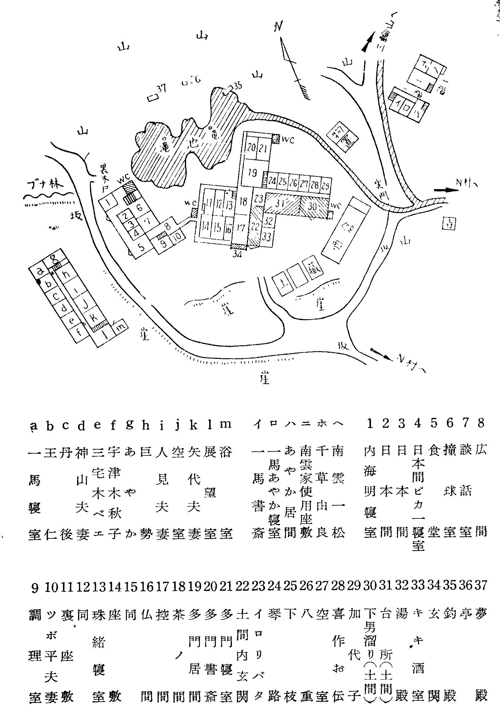
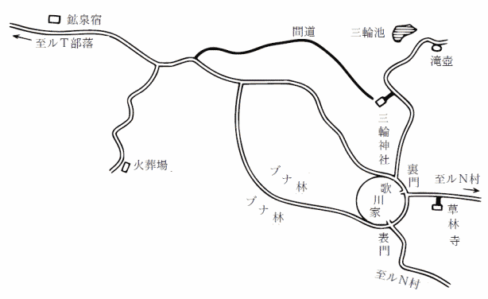
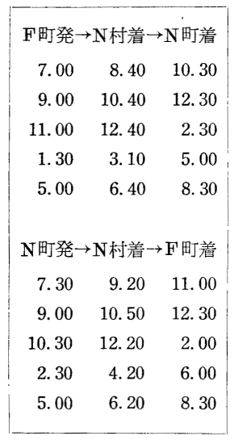

昭和二十二年六月の終りであった。私は歌川一馬の呼びだしをうけて日本橋のツボ平という小料理屋で落ちあった。ツボ平の主人、坪田平吉は以前歌川家の料理人で、その内儀テルヨさんは女中をしていた。一馬の親父の歌川多門という人は、まことに我ままな好色漢で、
「実はね、だしぬけに突飛なお願いだが、僕のうちで一夏暮してもらいたいのだ」
一馬の家は汽車を降りて、山路を六里ほどバスにのり、バスを降りてからも一里近く歩かなければならないという不便きわまる山中なのである。そんなところだから、私たち数名の文士仲間は、戦争中彼の家へ疎開していた。ひとつには彼の家が酒造家で、酒がのめるという狙いの筋もあったのである。
「わけを話さないと分ってもらえないが、この月の始めに望月王仁の奴がふらりとやってきた。すると丹後弓彦と内海明がつづいてやって来たのだ。妹の珠緒の奴が誘いの手紙をだしたからで、一夏うちへ泊るという。君だから恥を打開けてお話するが、珠緒の奴、この春、堕胎したのだ。相手が誰ということは全然
「宇津木さんもか」
「むろん一緒だ。胡蝶さんもくる。その為に一夏舞台を休む事にした程だから」
女流作家宇津木秋子は今はフランス文学者の三宅木兵衛と一緒にいるが、もとは一馬の奥さんだった。もともと話合いの上で別れたことで、文学者同志のことだから、あとは綺麗なものだけれども、問題は一馬じゃなくて、望月王仁だ。疎開中、当時一馬夫人だった宇津木秋子と木兵衛と話がすすんで、終戦、東京へ引上げるという時に話し合いの上で一馬が離婚を承諾した。一馬も元々秋子にてこずり、
秋子は非常に多情な女だ。疎開中は木兵衛よりも王仁と交渉が深かったのだが、王仁の奴が全然貞節の念をもたない奴で珠緒とも関係があり、女中だの村の娘だの八方に情痴沙汰、秋子なんぞは食後の果物、オヤツ程度にしか心得ていないから、秋子もあきらめて、木兵衛と一緒になった。
私は然し、この招待は、なるほど一馬の述べたような理由によるものと思うけれども、一馬自身がこの計画に乗気の理由の最大のものは別に隠されているのだろうと思った。狙いはむしろ胡蝶さんにあるのだろう。胡蝶さんがよびたいのだ、私はそう思う。
明石胡蝶は劇作家人見小六の奥さんで、女優だ。満身色気、情慾をそそる肉感に充ちているが、胡蝶さんは王仁のような粗暴な野性派が嫌いで、理知派の弱々しい男が好き、人見小六などはネチネチ
あの頃は然し一馬は臆病だった。宇津木秋子は三宅木兵衛と共に去る。元々未練のない女とはいえ置き去られては心中暗澹、疎開客は終戦と共ににわかに去り、小六も胡蝶さんも去った。彼は孤独というものが何よりも自分の望む愛人のように、あの時はむしろ厳しい勇気にみちて、一同を見送り、孤独に閉じこもったように見えた。
ひと月ふた月に一度ぐらいずつ上京のたびに、世相の変転は彼の心に大きく影響して、去年の春ごろだか、今の奥さんのあやかさんに会った。あやかさんは女学生のころは詩などを作っていたそうで、主知派の異才歌川一馬といえば文学少女には相当魅力のある中堅詩人だから、そのころ三四度お友達と訪問したりなどしたことがある。然し詩はあやかさんには附焼刃で、実際は詩などに縁もゆかりもない人だ。だから女学校を卒業すると、もう一馬を訪れはしなかった。
去年再会したときに、あやかさんは土居光一という画家と同棲していた。彼の絵は最もユニックだと云われ、鬼才などともてはやされているが、私はそうは思わない。シュルレアリズム式の構図にもっぱら官能的な煽情一方のものをぬたくり燃えあがらせる、ちょっと見ると官能的と同時に何か陰鬱な詩情をたたえている趣きのあるのがミソで、然し実際は孤独とか虚無の厳しさは何一つない、彼はただ実に巧みな商人で、時代の
一馬は別人のようだった。色々
尤も商才にぬかりのない土居光一のことで、即坐に一馬と膝づめの商談、女郎だってミウケの三万や五万は今時かかるんだから二十万円でミウケしろという、私が間に立って十万に値切って出たが、十五万円でケリをつけた。
なアに、あの女はオレでなきゃアだめなんだよ。俺の肉体でなきゃアね。オレの肉体は君、ヨーロッパの娼婦でも卒倒するぐらい喜ぶんだからな。吹けば飛ぶような三文詩人じゃないか。まもなくオレのところへ涙を流して、あやまって、帰ってくらあ。
土居光一は私にそう言った。然し、自信満々の和製ドンファン先生もこいつはダメだろう。あやかさんという人は一人の男ぐらい
土居光一がミウケ代と称して二十万円を請求した時には大いに誇りを
そのことを私が言うと、土居光一はゲラゲラ笑って、バカな、喧嘩なんて、男同志だって結局仲直りのチャンスじゃないか、男と女の喧嘩なんて、他人同志なら元々喧嘩なんかしやしないや。ひどい喧嘩別れをしたというのは、ひどく仲良しになる条件があるということなんだ。わかったかい。彼は自信、ウヌボレの
もとより土居光一の予想は外れて、あやかさんはもはや彼には
万事につけてひどく愛くるしいから、クレオパトラのようなツンとした女王性は
実際はあやか夫人に惚れすぎているからのことであるが、こうなると、浮気みたいなものがしてみたいような気持になるもので、私は疎開愚レン隊を一夏招待、これはどうも胡蝶夫人が狙いの筋ではないかと思った。彼のような坊っちゃんは人に好かれるのが嬉しくて、それを知らぬふり、そんな様子をしてみるのが好きなのだ。特に人の奥さんが亭主よりもひそかに自分を思ってくれるというようなことを確めて、それとなく素知らぬ素振りでその愛情を
そういうタチの一馬が、自分がはからずもあやか夫人に惚れてふり廻されるハメに立ち至ったから、ふり廻されるという外部の形式が感覚的に残念無念で、私には彼のそういう心理はよく分るのである。だから充ち足らざる部分を胡蝶夫人を招待して、ひそかにその愛に甘え、むしろ胡蝶夫人の純愛を弄び虐待し、そんな気持があるので、本当はあやかさんに惚れているのだ、ウッカリすると取り返しのつかないことになる。私はそんな風に考えた。
然しいくら坊ちゃんとは云え、年齢四十、立派な文学者で詩人のやること、魔に魅入られても十字架は自分自身で負いきるべき御仁のことで、私がそれを気にやむまでのことはない。
私は然し、私一個の私事として、この招待には応じ得ぬ理由がある。なるほど、望月王仁という無法者が乗りこんでいる。そこへ丹後弓彦という取り澄したヒネクレ者と内海明という陽気なセムシが乗りこんで、からみ合い、睨み合い、すね合っていたんじゃ、外にお化けの一
私の女房の京子は、一馬の親父の歌川多門の妾であった。妾や手カケの数あるうちで、特別寵愛のこもった女で、だから戦争中、まさか自宅へ入れるわけには行かないから（当時は梶子夫人がまだ存命であった）、自分の村の一軒をかりて疎開させた。私は京子と恋におちて、終戦と共に強奪して、東京へ引揚げてきたのである。
多門の怒りは狂暴なもので、風の便りにもいっかな余憤おさまらず、あいにく又、大臣級の政治家で、これからオレの天下と大いに希望のあったところを、てもなく追放になる、すっかり
「モクベエや小六と違って、僕がまさか君の家へ行ける筈がないじゃないか。御尊父の御機嫌がいくらかまぎれているにしても、僕はそのいくらかでも不快な思いを好んで見たくはないからな。僕はともかく、京子は身ぶるいするだろう。それは出来ない相談だね」
「然しね、まア、もうちょッと我慢して、きいて欲しい。君にだけは、すべてを打ちあけてお話するつもりなのだから。僕の精神上の極めて雰囲気的なお伽話もあるし、それから、いささか通俗的な犯罪実話もある」
彼はポケットから一枚の封書をとりだした。
「見てごらん。こんなイタズラをしかける奴があるんだ」
ごく有りふれたレターペーパアに、次のように書いてある。
お梶さまは誰に殺されたか。
すべては一周忌に終るであろう。
憎しみも呪いも悲しみも怒りも。
すべては一周忌に終るであろう。
憎しみも呪いも悲しみも怒りも。
「これは然し、ハイカラな文章じゃないか。ハイカラ以上に、文学的だな」
「この手紙は僕に
諸井琴路という看護婦は今はたぶん、ちょうど三十前後だろう。だいたい女、若い女というものは英雄愛好家だから、戦争ともなればただの娘も看護婦になって従軍するぐらいの夢は見がちのもので、看護婦ならみんな戦地へ志願しそうな鼻息のものだが、この諸井という女は別で、
戦争になって看護婦というものが戦地へ駆り立てられひどく貴重品になったとき、東京のかかりつけの病院にいたこの看護婦が戦地へ徴用されちゃイヤだなとこぼしていたので、無医村の看護婦という立派な口実に許可を得て連れてきて、海老塚医院へおかず、自宅の一室を与えて昼だけ医院へ通わせる。自分の都合もあるけれども、外にも名目があってこの家には外に二組の病人があった。
一つはここへ疎開の南雲一松という老人がここへ来てから中風で寝ついている。一松の妻女はお由良婆さまとよばれ、歌川多門の実の妹だ。この人も半病人で、生来の虚弱からヒステリーの気味で、お梶さんとは特別折合いが悪い。多門という人は特に肉親の情熱などはないけれども、世間並のことならなんでも
お由良婆さまの子供は男一人女四人だが、男は技術家で外地へ行っており、この戦争に潜水艦で死んだそうだが、女は二人死んで一人は嫁に行って満鉄にいる。末娘だけが未婚で、一緒に疎開しているのだが、お梶さまの娘の珠緒さんとこの千草さんが犬猿ただならず仲が悪い。珠緒さんは美人だが千草さんは以ての外の不美人で、目がヤブニラミでソバカスだらけ、豚のように肥っている。肥っているのに神経質で意地悪でひねくれており、ヒガミが強いから、奔放な珠緒さんの意味のないことまで悪意にとって恨んでいるから、珠緒さんは腹に物をためておけないタチでガラガラピシャピシャやっつける。これが又、母親同志の反目の種になるのである。お梶さまは和歌など物して短歌雑誌に投稿している人だから、オットリ奥さま然としているけれども、病的に潔癖な神経があって、嫌いだすと百倍嫌いになるようだった。
もう一人の病人は加代子さん。これが大いに問題の人だ。この人の母親は死んでいる。お祖父さん、お祖母さんは歌川家の飼い殺しの下男と女中頭で、喜作爺さん、お伝婆さん、どちらも人の好い、いつもニコニコ、大へん感じのよい召使いだ。
加代子さんは言うまでもなくこの二人の老人の孫だけれども、実は多門の落しダネで、女中の母親が身ごもり生み落した娘だ。だから召使いの部屋の一つにいるけれども、女中の手伝いをするわけでもなく、服装なども華美ではないが小ざっぱりした都会風のものを当てがわれている。この娘がまことに美しい。清楚、純潔、透きとおるように冴え澄んだ美しさだ。
けれども十七の年から肺病で、女学校の四年の時、寄宿舎で発病して一時入院したが、退院後は女中部屋の一室で、寝たり起きたり、たいがい読書をしている。
珠緒さんよりも二ツ年上、珠緒さんが二十二なら、加代子さん二十四、千草さんはその二つ年上で、二十六になっているだろう。
この隠し子の存在にはお梶さまも相当煩悶した
だから加代子さんに微熱があると看護婦を病院へやらず、附添わせる。南雲一松翁さんやお由良婆さまが相当の変調でも、いいから病院へ行ってきなさい。忙しいでしょう、と言う。諸井看護婦が又、冷めたい女で、俗な情愛の稀薄な人だから、愚痴っぽくメソメソとヒステリーじみた南雲一族が嫌いで、よく面倒見てやらない。その呪いがお梶さまに集まり凝っていたわけだ。
お梶さまは
「この脅迫状は全くバカげたものさ。こっちは身に覚えがないことだから、手紙の文句の方は、僕は気にかけていない。村の疎開者かなんか、暇で、ヒネクれた奴のイタズラだろうよ。僕が君をたよりにしているのは、これは僕のあまりひどい我がままだけれども、君よりも実のところは、どうしてもお京さんが必要なんで」
酒の酔いもさめたように、彼の顔色は青ざめてきた。
「余分の註釈はよしにして、いきなり言ってしまうが、僕は昔から、加代子を熱愛していた。然し、ともかく兄と妹なんだから、僕は色情的なものを、極めて精神的に変形し、いたわり、聖母を敬慕するような、そんな風なやさしい心をもっていたのだ。困ったことに、加代子の方が僕以上に僕を愛していたんだね、その上に、君、あれぐらい毎日何かしら読書しているくせに、非常識な話だけれども、兄の僕を恋人として愛している、兄と妹は恋をしちゃいけないのだと言ってきかせても、どうして？ 世間の人がそうだって、どうして私達がそうでなければならないの？ 向う見ずだよ。世間なんか、もう眼中に入れたくないのだね。それが処女の
一馬の言葉は
「僕は然し、実際悪党だから」
「そりゃ分っている。君ぐらいの年になりゃ誰だって悪党だ。あやか夫人にもゾッコン参りすぎている。胡蝶さんにだって、時には口説いてもみたいだろうし、さ。加代子さんは君以外の男は眼中にありゃしないからな。然し、そりゃ、崇高でもなんでもなく、案外近親相姦でもなく、みんな君自身が幻覚している雰囲気で、根は処女の魅力、魔力、それだけじゃないかな。根をつきとめると、実は案外、薄ッペラなものさ。怒ったかね。そうじゃないか。君は実際はあやか夫人の非処女性に圧倒され徹底的に降伏状態にあるんで、ちッとはムホン気も出したいからな。兄と妹、恋愛、大いによろしい。多少はムホン気もだしたがいいさ。発散すりゃ、それでいいんだ。然し実のところ、ほんとにヤッちゃったのかと思って、話の途中じゃちょッと冷や冷やしたね」
「そんな風に言ってくれると、僕も救われるがね。君の言葉が当っているとは思わないが、理窟は止そう。理窟は僕一人だけ信じてりゃいいんだ。君から、そうやって、いたわって貰えれば、僕としては本望なんだからな。それで君にお願いというのは、加代子には友達というものが一人もない。たった一人、お京さんの外には。加代子は毎日お京さんを思いだして、懐かしんでいるのだよ。病気に悪いことを知りながら、一里の山道を歩いて、よくお京さんのところへ遊びに行ったものだからな。叱られても、又、行く。熱をだして寝ついても、起きられるようになると又でかける。脱出して、でかけるのだからな。僕はあのころ、お京さんが加代子を殺す妖婆に見えて、憎んだものだよ。だから君、お京さんに来てもらって、加代子の気持をなだめて貰えぬものだろうか。そういう役割を果し得る人といったら、お京さんの外には金リンザイないのだから、僕がいかにも意気地がなくて申しにくいのだけれども、僕のことをもう諦めて、外に心をまぎらすように仕向けて貰いたいのだ。勿論、僕自身からも、そう仕向ける。然し僕の全力で足りそうもないから、お京さんに助太刀を頼むのだ」
困った役目だ。もとより私の一存で返事のできることじゃない。
戻って京子に言ったら、マッピラ御免だと言う。恋の病いは草津の湯でもと言うから、誰の匙加減でもダメ、当事者にまかせ、成行きにまかせることだ。加代子さんが自殺でもすりゃ、こっちの寝ざめが悪いばかりだ。それに京子の立場としては、あの山荘へ再び顔をだしたくないのは当然だった。
京子の決意が石の如くであるから、一馬も諦め、三日の後にモクベエと小六の両夫妻を同道して山へ帰った。
七月十日の朝であったが、一馬から次のような手紙がとどいた。
七月十五日にツーリストビュロオから切符を届けさせるから、その日の終列車で来てくれ。ぜひとも頼む。尚 、三枚の切符のうち一枚は巨勢 博士のものだから、口説き落して、ムリムタイにでも同道たのむ。三拝九拝。
怖るべき犯罪が行われようとしている。多くの人々の血が。君と巨勢博士だけが頼みだ。そして、お京さん。お京さん！ たのみます。待ってます。暗い血の海が見える。
怖るべき犯罪が行われようとしている。多くの人々の血が。君と巨勢博士だけが頼みだ。そして、お京さん。お京さん！ たのみます。待ってます。暗い血の海が見える。
一馬はツーリストビュロオの
一馬は時々
巨勢博士と云っても、実際は博士でもなんでもない。それどころか私や一馬に比べると十一も若年のまだ二十九という若僧なのである。
彼は十七の時、まだ中学生であったが、私のところへ文士になりたいと称して弟子入りにやってきた。僕みたいカケダシの若僧に弟子入りしたって仕様がない、大家のところへ行きなさい、と言ったら、若い者は若い者同志でさア、と変なことを言やがった。
然しまもなく彼は探偵に凝りだして、然し大学では美学というシャレたものを勉強したが、これはつまり奴が不勉強で、ほかの科へ入学不可能な宿命を自覚したからの結果なのである。
然し彼の探偵の才能は驚異的なものだった。まさしく天才である。我々はイヤというほど実例を見せられ、全くどうも奴の観察の確実さ、人間心理のニュアンスを微細に突きとめ嗅ぎ分けること、怖ろしい時がある。彼にかかると、犯罪をめぐる人間心理がハッキリまぎれもない姿をとって描きだされてしまう。全てがハッキリ割切られて、計算されて、答がでてくるのだが、それがどういう算式によるのか、変幻自在、奴の用いる公式が我々には呑みこめない。
我々文学者にとっては人間は不可決なもの、人間の心理の迷路は永遠に無限の錯雑に終るべきもので、だから文学も在りうるのだが、奴にとっての人間の心は常にハッキリ割り切られる。
「それくらい人間が分りながら、君は又、どうしてああも小説がヘタクソなんだろうな」と冷やかしてやると、
「アッハッハ。小説がヘタクソだから、犯罪が分るんでさア」
こいつはシャレや御謙遜ではないだろう。この言葉も
だから奴は文学は書けない。文学には人間観察の一定の限界線はないから、奴は探偵の天才だが、全然文学のオンチなのである。
然し我々は彼の探偵手腕を絶対的に認めるから、この不勉強の怠け者を
私が出かけて行って手紙を見せて応援をたのむと、
「そうですか、避暑はいいな。料理も食えるし、酒ものめるか。然し、今晩はダメですよ」
「なぜ」
「つらいな、開き直られちゃ。ちょッとお耳を拝借。ア・イ・ビ・キ。分りましたか」
「博士も亦然りか。どうせ相手はパンパンだろう」
「やいちゃ、ヤボです。先生。明日の夜行で行きます。一足お先きに。あの子もつれて行きたいな」
「つれて来たまえ、遠慮なく」
「ダメ、ダメ。神聖なる処女は虎狼の中へ連れて行くわけに行かないです」
「博士は少女趣味かい。やれやれ。俺はトンマな趣味の奴に
私は手紙の指定通り出発した。
汽車はこの節としては大名旅行で、腰かけることができず、眠ることができず、便所へ行くことができない程度の穏やかな旅行であった。
Ｎ町へ降りると、思いがけない人物が乗り合せていたのだ。私は呼びかけられて驚いたが、神山東洋とその奥さんの木曾乃さんだ。
神山夫妻は戦争中、ちょッとばかり山へ顔を見せたことがあるが、弁護士で、八九年前まで歌川多門の秘書をやっていた男だ。木曾乃は元は新橋の芸者で、
「これはお京さんも。そうそう、矢代先生と御結婚の由、
私は返事もしなかったが、
「矢代先生も歌川さんでしょう。お伴いたしましょう」
「あなたも歌川さんですか」
「ハア、何ですか、招待状が参りましたもんでね。珍らしいことがあるものですよ」
然しバスに乗りこむと、私は
「ヤア、君はどこへ行くのだい」
「どこへ行くって、こんな
こいつが然し、何の用で行くのだろう。
「君は何か用があるのか」
「バカにするな。あんなヘッポコ詩人に何の用があるものか。ミウケの金はちゃんと貰ってしまったから、とっくに飲みほしてしまったけれども、後をネダルほど
彼は京子を見て、フンと笑って、
「あなたがお京さんか。なるほど美人だ。色ッぽいな。淑徳厚く、又、浮気心も深しか。いい色気だなア。残念だ。二足三足おくれたわい。オレが戦争中この村へ疎開してりゃ、お京さんはオレが抱いてあげたんだがな。然しお揃いで堂々と歌川家へ乗りこむなんざア、矢代文士も御心臓じゃないか。君の小説は子供ッぽくて読めないがな」
いったい一馬は何を考え、何を
バスを降りると若い下男が荷物を運びに待っていた。まだここから一里近く山の小径を上ったり下ったり、疲れた時にはやりきれない道中である。
ようやく歌川家の近く、
然し、あやか夫人は私たちに近づくと棒のように直立してしまった。何がなんだか、わけが分らないという顔で、自分の目を疑るような風であったが、それを見ると土居光一の方が先に声をかけた。
「よう、大富豪令夫人。御出迎え、御苦労。どれ、お駄賃に、オレが久々に可愛がってあげるかな」
彼はツカツカとあやかさんの方へ歩いて行った。それは全く抱きしめ接吻ぐらいしようという気勢であった。
「何しに来たの？ あなたは？」
あやかさんはジリジリ宇津木さんのうしろへ、身を隠すように退いたが、光一はそんなことは意ともせず、なんなら二人の女を一緒にまとめて抱いてしまうぐらいの調子で、
「ヤア今日は。あんたは、どなた？ え？ 宇津木秋子さん。あ、高名な女流作家、お見それしました。まだ若いんだな、これは美しい。いずれ、ゆっくり御挨拶します。昔の色女が待ちかねていますからね」
光一はあやかさんの腕をつかんだ。あやかさんは激しく振りはらって五六歩逃げて、
「悪党！ ろくでなし！ お前なんかの来るところじゃない。帰りなさい。ねえ、誰か……」
私たちの方をウロウロ見たが、又光一がシャニムニつかみかかろうとするので、言葉をつづける暇もなく、顔色を失って、逃げだした。その後姿に目もくれず、光一はハンケチをだして額の汗をふいて、
「いとしい人に出ッくわすと、女の子はとりのぼせるよ。どうして女という奴は、待ちこがれた人に、待ちこがれたと言えないのかなア。ねえ宇津木さん、日本の女は色ごとの訓練が足りないからね、そうでしょう」
歌川家へつくと、来客諸公は滝ツボへ水浴にでかけた由で、一馬とセムシの内海だけが私たちの到着を待っていた。
私は喋る力もない。一風呂あびると、ビールとサンドウィッチの中食をとり、目がとろとろ開かなくなって、部屋へ寝床をしいてもらって、寝こんでしまった。都会の暑熱に
「ようやく、お目ざめ。もう、みなさん、お酒めしあがってるわ」
「まったくグッスリねむったものだな」
私は大きなアクビをして、階下へ降りた。
私は望月王仁が大の嫌いであった。
けれども彼はジャーナリストに人望がある。それは奴が金ッぱなれがよいことと、ジャーナリズムは思想性よりも筆力で評価するから、彼の才筆に眩惑される。それにジャーナリズムは事物を歴史的性格で判断せず、現実の現象性で判断するから、彼が第一級の流行作家であることから、彼の傲慢は当然とうけいれ、
私は然しこれは
ところが期待を裏切られた。奴等はやっぱり海千山千の
「やい、ピカ一、お前は酒を飲まないのか」
王仁が言ったが、光一はニヤニヤしている。彼はあんまり酒を飲まない。まったく奴のように酔っ払わなくとも、人前で平気の平左で女をだいたり口説いたりする奴は、酒の必要はないのだろう。酒に酔っては睡気を催し腕がにぶるというようなものかも知れぬ。
王仁ときては酔っても酔わなくても、女を口説きたて、酒をガブガブ浴びるが如くに
突然光一が立ち上って胡蝶さんの前へ行った。いきなり手をつかんで、
「踊りましょう。胡蝶さん。かねがね舞台では拝顔の栄に浴して人知れず思いをこがしていたけど、あなたは麗顔麗姿というんだなア。シャルマント、デリカ、それにオルグイユーズというところがあってね、この悪徳が私は好きなんだ。いざ、踊りましょう」
胡蝶さんは静かに手をひっこめて、冷めたく、
「いやです」
王仁がゲタゲタ笑いだした。
「ピカ一、よろしい！ アッハッハ。そのルイ王朝的三流娼婦を第一番に口説いたところに、お前の浅からざる素養がうかがわれる。お前も然しフランス仕込みにしちゃ、泰西の学に通じないな。娼婦というものは人前で口説いちゃダメなんだ。娼婦は淑女の如く見せたがるから、まったく、ヒガンだウヌボレさ。人前で口説くのは娼婦のイミテーションが最もよろしい。即ち、かくの如し」
彼は立って珠緒さんの手を引っぱりあげて踊りかけて、すぐ、だきかかえて、ソファーへドカンと腰を下して接吻した。珠緒さんは平気であった。存分接吻して顔を上げて、
「どう？ ピカ一さん。あしたの晩はあなたにこうしてあげるわね。そのとき
丹後は首をふった。然し首をふりかけたとき、珠緒さんは目もくれず、もう内海の方へ歩いていたから、取りすまして首をふる丹後の首がオモチャの人形みたいであった。
「さア、内海さん。あなただって、たまにはフットライトを浴びなきゃいけないわ。片隅にひっこんで、いじけずに、堂々と、圧倒しちゃうのよ」
内海は人の好い微笑をうかべて、
「僕がフットライトを浴びるのは、ノートルダムの主演の時だけさ。その節は共演をたのむぜ」
「あら、そう。すばらしいことね。この夏、ここでやりましょうよ。人見さん、手頃に脚本書いてちょうだい」
「よろしい。オレが舞台装置をやる。村の衆に興行して、百姓どもの新円をまきあげてやろう」
「ピカ一の舞台装置じゃ百姓のお客は逃げ出すさ。芝居なんざ、止すがいい。これだけ女優が揃っているから、エロダンス、外に何があるものか。ザッと、この通り」
王仁はいきなり珠緒を抱きかかえて、ひったくるようにツーピースをぬがせた。シュミーズ一つで王仁の腕からころがりでた珠緒はビクともしなかった。茶化すような顔でもなかった。黙って王仁を見て、平然とシュミーズをぬいだ。ズロースひとつである。
「もういいの？ もう、ひとつ？」
一馬がイライラ妹の腕をつかんで、「お前はもう引込みなさい」
「どうせ、ついでだ。手数がはぶけて、ちょうどよい」
王仁が珠緒を抱きあげると、
「おい、よせ。あくどいぞ」
「兄さん、怒るな。まさか、鬼でも、かわいい子を人前でほんとにハダカにするものか。然し、手数がはぶけて、ちょうどツイデだから、ちょッと借りて行くぜ。芝居の方は終ったんだよ。これからは、恋愛という私事に属する演劇だから、見物人はお断りだ」
抱きかかえて、ドッコイショ、ハイ、ゴメン、自分の寝室へ立ち去ってしまった。
五分、十分、二人は戻ってこなかった。都会のどこかにインチキ・バア、インチキ・キャバレはあるかも知れぬが、こんなことは、そこでもメッタに見られやしなかろう。さすがのピカ一先生も呆れた様子で、
「はてさて、ききしにまさる豪傑だ。歌川家は、然し、優秀な娼婦宿だな。フランスくんだりをウロウロしないで、オレも若年から登山の趣味を養うところだったよ。ワタクシの御相手は、今晩は、どなたですか。ケイシュウ作家、
宇津木さんはつくり笑いをして、
「ええ、いずれ、よろしく。今晩は先約がありますから」御主人の三宅木兵衛の腕をとって、「じゃア、お先に」
「はア、そう。さアさア」
ピカ一はひょいと立ってどんどん先に立って歩いて、広間から廊下へつづく扉をあけて、ホテルのボーイ、宮殿の侍者の要領で、いとインギンに頭をたれて、お通りを見送る。
それをキッカケにみんなそれぞれ寝室へひきとった。
私達が寝室へひきとると、すぐ後から、一馬が来た。イライラして、
「実際、君、醜態だ。どうしてくれたら胸がおさまるのだろう。締め殺してやりたい」
私も慰める言葉がなかった。
「君とゆっくり話を交す暇がなくってね。これは、然し、いったい、どうしたことだろう。僕には、わけが分らない。君はツーリストビュロオの切符を受取ってきたのだろうね」
「そうさ」
「僕の手紙はとどいたね？」
「むろん見たよ。さもなきゃ、来やしないさ。巨勢博士は一緒に来れなかったけど、今夜たつから、あした、くる
「巨勢博士？」
「なんだい？」
「巨勢博士がどうしたんだ。誰かそんなことを言ってきたのかい」
「わけが分らないな。君の手紙に巨勢博士をつれてきてくれと書いてあるからさ」
「僕の手紙に？」彼は
「そんなこと、書きやしない。僕は君たちお二人だけ来てくれと書いた筈だ。いや、分る。カラクリは分っているのだ。君に宛てた手紙だけじゃアないんだからな。きいてくれ。実に、何たることだ。どいつが、いったい。僕はもう怒り狂っているのだ。然し、まったく、何者のイタズラだろう。僕は君、神山東洋夫妻だの、まして、土居光一に、あいつらに招待状を発する筈がないじゃないか。しかも奴らは招待状を受けとっている。おまけにちゃんと、君と同様ツーリストビュロオの使いの者が切符をとどけているのだからな。僕はたしかにツーリストビュロオに切符を届けるように手配の手紙を出してはいる。然し、それは、君たち御夫婦二人だけだ。巨勢博士だって、頼みやしない」
今度は私が呆気にとられる番であった。私は彼の手紙を全然疑ぐっていなかった。たしかに見なれた彼の筆蹟だったのだ。
私は然し、幸い巨勢博士を訪ねたとき彼に見せるためにポケットに入れた手紙をそのまま持ってここへ来ていた。私はそれを取りだして見せた。彼はそれを睨んでいたが、
「僕の手紙をいっぺん開封した奴が、書き直して、送ったのだ。なぜなら、僕の文章がそのまま使ってあるから。いいかね」
七月十五日にツーリストビュロオから切符を届けさせるから、その日の終列車で来てくれ。ぜひとも頼む。『尚、三枚の切符のうち一枚は巨勢博士のものだから、』（お京さんを）口説き落してムリムタイにでも同道たのむ。三拝九拝。
『怖るべき犯罪が行われようとしている。多くの人々の血が。』君『と巨勢博士』だけが頼みだ。そして、お京さん。お京さん！ たのみます。待ってます。暗い血の海が見える。
『怖るべき犯罪が行われようとしている。多くの人々の血が。』君『と巨勢博士』だけが頼みだ。そして、お京さん。お京さん！ たのみます。待ってます。暗い血の海が見える。
然し筆蹟はたしかに彼のものだ。然し、よく見ると、念入りに筆をまねた形跡もうかがわれた。
「この紙は？」
「うちの用箋さ」
「どこに置いてあるのだい」
「さっきの広間の隅のデスクに、これとインクとペンはいつも
「手紙は誰が投函したのだ」
「君たちの疎開中は郵便局に人手がなかったし、時局が時局で、こっちから投函に一里も歩いたものだけど、今じゃ向うから取りにくる、昔からの習慣なんだ。尤も郵便を配達に来て、ついでに持って帰るのだ。うちへ届ける郵便物のない時だけ、やっぱり配達の時間にわざわざ取りに来てくれるのだ。うちから出す郵便物は玄関に桐の箱が置いてあって、手紙を出す者が勝手に自分で投げこんでおくのだ。だから、手紙をすりかえるチャンスは誰にでもある」
「まア、いいさ。幸い、あした巨勢博士が来るから、
「じゃア、又、あした」
「そうしたまえ。我々が犯罪をつき廻したって、迷路をさまよい、やたらに犯人を製造するばかりさ。全くもって、小説家にとっちゃ、犯人ならぬ人間は有り得ないから、考えてみたって、全然ムダだ」
一馬は自室へ戻って行った。
どの部屋からも、もう物音がなくなっている。
「なんだか気味が悪いわ。私、怖しくなってきたわ。ほんとに何か、怖しいことが起るんじゃないかしら」
「どんな怖しいことが？」
「どんなって、分りゃしないけど。でも、何か、ほんとに起りそうじゃないの」
「そうかな。娼婦宿の犯罪事件か。ピカ一め。娼婦宿とは。然し、まったく、ひどい話さ」
「私、きょう、加代子さんとお話したのよ。まだ、ほんの御挨拶程度のお話だけですけれど、ね。たぶん、予想以上だわ。ほんとうに兄さんを思いつめているようすよ。罪は人間が作ったものですって。人間が勝手にこしらえた観念ですって。自然のままの人間にどこにも罪なんか有る筈がないんだってね、そんなことを私に
「恥があるから、罪もあるんだろう」
「あなたの屁理窟なんか、加代子さんの悩みの垢みたいなものよ」
「分った、分った。諸嬢の悩みは深遠そのものだ。さア、ねよう。然しねられるかな」
私は昼寝しすぎたのだ。けれども、ねむくなってきた。
そのとき、廊下を、私の知らない何かフランス語のシャンソンらしいものを唄って、珠緒さんが通りすぎた。階段へかかると、だんだん大声にそしてバタバタ駈け降りて行った。
「やれやれ、珠緒太夫の御帰還か」
時計を見たら、十一時十五分。私は電燈を消した。
附記 この探偵小説には私が懸賞をだします。犯人を推定した最も優秀な答案に、この小説の解決篇の原稿料を呈上します。細目はいずれ、誌上に発表しますが、だいたい、九回か十回連載の予定、大いに皆さんと知慧くらべをやりましょう。当らなければ、原稿料は差上げませんよ。たいがい、差上げずに、すむでしょう。
坂口安吾
翌朝、七月十七日午前六時半、私たちは散歩にでた。三輪山と云って人里離れた山中にホコラがあり、三輪神社と称し、奈良朝頃からの
このへんの風景は色彩の激しさと孤独の深さ、胸にしみる静寂を宿して、私にとってはこの村の最も大きな魅力であった。このへんを一まわりして、七時半の朝食に間に合うように戻ってきて、裏門をくぐって、酒倉にそって表門へ廻ろうとすると、猿又一つの海老塚医師が、裏庭の清水の流れにカラダをふいて、体操している。
「ヤア、ゆうべはお泊りでしたか」と言葉をかけると、ジロリと見ただけで、返事をしない。まったく、変人で、ひねくれている。小児マヒからのビッコで、裸になると両足の細さの相違がハッキリ分る。まるで我々全体に敵意をいだいているような様子で、我々が話しかけても返事もロクにしやしないが、そのくせ、山荘に文人連が泊って以来毎晩遊びにきて酒席の隅に息を殺しているのだそうで、まるで怒った顔付だが、御当人はそれで結構たのしいのかも知れない。
広間へ行くと、みんな揃っていて、食事の支度ができたというから、食堂へはいる。海老塚医師が遅れてきた。つづいて、宇津木秋子がモーローたるていで現れて、
「なんだか、頭が痛むわ。御飯が欲しくないのだけれども、皆さんお集りのきまった時間て、なんだか寝ていられなくなるのね」
「ゆうべ徹夜なさったの？」と、胡蝶さん。
「いいえ。眠りすぎちゃって、いまだに、ねむいのよ。山の中は眠いのかしら。ふだん生活が不規則だから、たまに規則的な生活すると、健全みたいで変にたのもしくなるのだけれど」
「悪徳高き淑女は善行を愛するもので、そのタグイですな」
とピカ一が大声で言う。
「お水だけ、いただくわ」
「御病気じゃないの？」と、あやかさん。
「うん。無芸大食の私が、食慾がなきゃ、病気かもしれないわね」
「ツワリじゃないですか」とピカ一。
「海老塚さんに診ていただくがいいさ」
と、一馬が昔の女房をいたわる。今の御亭主のモクベエはムッツリ不機嫌だが、いずれ彼等は別れるのだろう。
「あらあら。ほんとに病気にされちゃ、いやだわ」
「知慧熱というのさ、宇津木さん。ちかごろ、知慧ざかりじゃないか。発育とみに御活溌であらせられる」と、セムシ詩人の内海がひやかす。けだし秋子女史、終戦後は女流文士の最大流行児で、あられもなく書きまくっていらせられるからである。
「人生たのし。別れも愉し。宇津木さんぐらい御隆盛の時は、神様の御罰も食慾不振ぐらいが限度でね。神様も力及ばず、さ。宇津木さん、天才になるんじゃないのかな」と、丹後弓彦、皮肉の針をチクリとさす。
「アッハッハ。悪徳高き淑女の食慾不振は気にかかるな。何かの方が不振じゃ、なさすぎるからだろうな」
ピカ一の言葉はいつも汚らしい。
食事の終るころになって、珠緒さんが、やってきた。
「あら、もう、みなさん、コーヒーなの？ 寝すごしちゃった。とてもねむい」
「あたりまえさ。あなたが眠いのはね」又、ピカ一が先ず口をいれる。
「何もたべたくない。王仁さん、まだ、ねてるのね」
王仁だけが、まだ顔を見せていなかった。ピカ一は相好くずして、
「それ、それ。やっぱり男の方が余計ねむらなきゃならねえのか。王仁ほどの御体格でも、御疲労は珠緒さんに超えるかね。宇津木さんの小説だよ。絵の方じゃ、そんなエゲツないことは題材にならないから、絵はノーブルなもんだ。文学は汚らしいな」
「起してこよう」
珠緒さんは平然と言いすてて、シャンソンを唄いながら階段を駈け登って去ったが、まもなく、音もなく、戻ってきた。真ッ蒼だった。目が焦点を失っている。ちょッと、喋ることができない様子であった。
「王仁さんが、死んでる」一馬がビックと顔をあげて、
「なに？」
「王仁さん、殺されている」
あいている椅子のひとつへフラフラ腰を下して、化石のように放心した。一馬がのろのろ立上って、
「寸兵。君だけ」と、私によびかけて、
「皆さん、待ってて下さい。私が見てきます。寸兵だけ、一しょに。それから、海老塚さん」
一座はまったく無言であった。私と、海老塚医師が立ち上った。そして私たち三人だけが、シワブキもない沈黙の室から歩き出たのである。
まさしく王仁は殺されていた。一糸もまとわぬ裸体であった。心臓を一突きにやられている。その短刀が彼のカラダをピンでとめているように、突きさしたままだ。不思議に、血が殆ど見られない。コイツ奴が人を殺さずに、人に殺されるなどとは
海老塚医師は脈をとり、
「とっくに死んでます」
「
一馬は黙って凝視していたが、ようやく我に返った様子で、
「じゃ、ともかく、この部屋を出よう。このままに、しておこう。仕方がない。警察へ内密に、ごまかすことも、できないのか」
我々が廊下へでる。そのとき、気がついて、腕時計を見ると、八時二十二分であった。村の駐在へ電話をかける。それから食堂へ戻って、沈黙の一座が言葉をうながしているのに一馬も海老塚も喋らないから、私が、
「王仁は死んでます。殺されています」
「ハッキリ他殺か。分るのか」と、ピカ一。
「ハッキリ他殺。王仁は君と同じぐらいの怪物かも知れないが、自分の心臓へ短刀をぶちこむ芸当は、たぶん、できないだろうな」
私はそのとき、秋子さんの表情が大きく動いたのを見逃さなかった。ビックリしたのだろうか？ 何を？ 私の視線がそそがれているのを見て、急にきびしく私を見つめたが、然しそれを私以外に観察していたもう一人の人物があった。珠緒さんだ。急に秋子さんを指して、ヒステリックに叫んだ。
「犯人はわかっています。女流作家、宇津木秋子先生。やっぱり偉いのね。人殺しぐらいできるんだから」
珠緒さんは立上って、手品の種あかしをするように、握りしめていた小さな何物かを、指先につまんで人々に示した。
「このライター、宇津木先生御愛用のダンヒルでしょう。宇津木先生以外にダンヒル御使用のハンサム・ボーイはいないから。王仁さんの枕元のデスクにあったのです。デスクの灰皿には、口紅のついたシガレットの吸いさしもあります。私が昨夜あの部屋を立去るまでは、こんなものはなかったのです。全巻の終り」珠緒さんはライターを食卓の上へ投げころがして、アクビでもするように、椅子にめりこんだ。秋子さんは宣告を受けた罪人のような顔だった。そして、力つきたように顔をふせたがやがてビリビリふるえる顔をあげて、
「私が殺したなんて、嘘ですわ。短刀なんて、そんな、私は知りません」
「止しましょう。犯人だなんて。それは確かに誰かが殺したんでしょうけど、誰だって、あいつを殺したい気持なら、同じように持ち合せているだけのことさ。尊敬すべき代表選手に犯人という称号は当らないや。犯人さがしに内輪もめをするよりも、無罪歎願書の相談でもするのが我々の偽らざる心でしょう」私がそう言うと、海老塚が、
「百鬼夜行。あたりまえだ」
そう
「海老塚さん。調べがすむまで、我々が動いちゃいけないでしょう」
「私は有閑人種じゃないです。患者がつめかけてきています。おんぶされて、未明から三里も山道を歩いたり、ね。殺人なんか。遊戯の果にすぎんです。百姓どもの命なんて虫けらに毛の生えたようなものでも、虫けらよりは貴重ですから。虫けら共の人殺されだ。さよなら。皆さん」
「気どり屋、
「せっかく患者殺しに精をだすんだな。あんたの目玉の色は精神病院で見かけたぜ。気違いに脈をとらせて、山の奴らはノンキなもんだな」
駐在の巡査が駈けつけた。この南川友一郎巡査は探偵小説は愛読しているがほんものの事件にめぐり合ったのが始めてだから、全身緊張そのものにハリキッて、いと物々しく現場の扉にペッタリと封印の紙をはりつける。一同に向って現場を乱さないように心得をおごそかに申し渡して本署へ電話で連絡する。
「大事件が起ったですが、ふむ、きこえとりますか。東京の流行の人気の文士の望月王仁氏、流行の人気の文士、ハヤリ文士、分らんかな、三文文士の反対じゃよ、ええ、面倒な、本署に文学巡査はおらんですか」
県の本署から一行が到着するに五時間の余もかかるのである。ところが南川友一郎巡査のうるさいこと、一同を食堂へカンヅメにして、外へ散歩にも出してくれない。
「アア、いかん、足跡が消える。廊下もうろついちゃ、いかん。犯罪はですな、毛髪一本、靴から落ちた一粒の砂、いいですか、これが鍵となる。微妙なるものですな。皆さんの御協力、数時間の御辛抱によって、犯罪科学の偉大な機能が成果をあげる」
一本の通路をきめて便所へ歩かせてくれるだけである。十一時半ごろ
「これがその偽造の手紙だが、君の眼力にかかっちゃ、真相を見破ることはイト易いことだろう」
「とんでもない。僕なんか、とてもダメだな。へ、こっちが歌川先生の本当の筆蹟ですか。ウハ、おんなじじゃないですか。ウメエなア。本物と見分けがつかねえもの、たいしたもんですね」
だから巨勢博士は全然評判が悪い。その代り愛嬌があって、クリクリ可愛くて、御婦人に丁寧で、まったく凄味がないから、御婦人連には大もてで、
「巨勢さん、いい人いらっしゃるの？」
「え？ ハア、おはずかしい次第で」
「つれてらっしゃればよかったのに。電報でよんであげなさいな」
「人見知りをしますんで。十七の可憐な少女ですから」
「あらあら、じゃアまだ、接吻もなさらないのね」
「それが、一度。なんです。彼女はマッカになって、しかし、怒らなかったです。ハア」
「それじゃアもう新婚旅行なさってもよろしいわ。さっそく、およびしましょうよ、ねえ」
「それが、ここのウチじゃア具合が悪いことがあって。洋食の食べ方を知らないものですから。ナイフとフォークを握ったことがなかったもんで、目下練習中なんです」
友一郎巡査にカンヅメにされているから、巨勢博士を慰みものにしてウップンをはらしている。
二時半に予審判事、検事、警官の一行が官用の自動車で到着。一馬から頼んで巨勢博士を警官なみに現場出入を許してもらった。
警察医の検視が終り、現場からかなり多くの指紋がとれた。捜査部長平野雄高警部は心眼の眼力、いかなる智能の犯行も一目でカングリ、二度三度、四度目にギロリと睨む時には見破ってしまう。田舎にはモッタイない探偵の大親分で「カングリ警部」といえば、その道では全国的に名が知れている。現場をジロリと三睨み四ツ睨みして、あれこれと綿密に捜査を命じる。
「出血がないのは特別の理由があるんじゃないですかな。すでに死んでいたとか、何か」
「解剖をしてみなければハッキリは申せませんが、この場合は俗に心臓タンポンという奴で、心臓へ直角に兇器が打ちこまれたときに、稀に内出血だけで終ることが有りうるのです。然し、解剖の上でなければ、何とも断定は申されません」
解剖のため、屍体をトラックにつんで、県立病院へ送った。
「はてな。これは何だろう」刑事の一人が寝台の下から、
「何だい、それは」
「鈴ですがね」見たところ、極めて安っぽい品で、猫の首ったまにブラ下げるような鈴である。
「寝台の下に、もっと何かないか。おい、読ミスギ、お前チビだから、もぐってみろ」
と八丁鼻が兄貴風を吹かせる。読ミスギとよばれた刑事は本名は長畑千冬というのだが、どこでどうして覚えたのだか似合わぬ知識がある。ドイツ語などを

読ミスギはベッドの下へもぐりこもうと四ツ
「おやおや、こりゃおかしいよ。ベッドの下に洋服の上衣がある」
上衣をひきだしてみると、一ヶ所に埃がベットリ、ちょうど
「おやおや、どこを拭いたんだろう。この卓の上かな、机の上かな」
「そんなところでこれだけのゴミがつくものかい。きまってるじゃないか。上衣のあった場所さ」
「ベッドの下ですか」
「のぞいて見ろ」
「ウム、なるほど、たしかに、ここをふき廻した跡があります。しかし、なんだってベッドの下を拭きやがったんだろう。血も水も、一滴もこぼれた跡もありゃしないに」
上衣は、被害者のものであった。
現場の綿密な捜査を終ったのが夕方で兇器には指紋がなく、枕元の卓上のフラスコとコップから、いくつかの指紋がでた。一同の指紋をとって合せてみると、被害者の指紋の外に珠緒さんの指紋と秋子さんの指紋がピッタリ合う。秋子さんの指紋は明かにフラスコを握ってコップに注いだものであった。フラスコにはごく小量の暗い褐色の液体が残っていた。
「窓は始めから開いていたのか」
「ベッドの足の方の窓は明けっ放してありました。然し、犯人はそっちから侵入したものではありませんな。ハシゴをかけた跡も、よじのぼったあともありません」と友一郎巡査がムダに張番していたわけではない手並のほどを披露に及ぶ。
「このへんは蚊がいないのか」
「とんでもない。ヤブ蚊の名所ですよ。そこの違い棚に蚊とり線香をいぶす瀬戸物の容器があるでしょう」
「それぐらいのことは知ってる。然し中に線香の灰が残っていないからきいたのだ」
机の上には五十枚ほど書かれた原稿と、五百枚ほどの原稿紙、整頓して、手のふれた跡はない。部屋をかきまわしたあとはなかった。
解剖の結果を待って正式に訊問を始めることにして、この日駐在所に泊りこむ数名を残して鑑識の一行はひきあげる。そのとき一行を送って出たカングリ警部が一人に向って、
「おい、あした、アタピンをこっちへ寄こせ。どうもお
これを小耳にはさんだから私も驚いて、
「何ですか、アタピンというのは？」
「アッハッハ。きこえましたか。本署の名物婦人探偵ですよ。田舎の警察じゃ役不足の掘りだしもので、飯塚文子と申しますがね。ちょッと小生意気な美人で色ッぽくて、なんですな、ちょッと、からかいたくなりますぜ。ところが、ひどい。うッかりからかってオダテたが最後、つけあがること、男という男を鼻息で吹きちらかして尻にしきまくる魂胆なんで、本県じゃア前科十犯の人殺し屋でもチヂミ上るという八丁鼻が、アタピンにかかっちゃ鼻先であしらわれていまさ。その代り、天才的な心眼で、なんでもアタマへピンとくる。見たもの聞いたものアタマへピン。黙って坐ればアタマへピン。
カングリ警部の一行も、一緒に夕食のテーブルにつく。八丁鼻も読ミスギも杯をあげる。カングリ警部は甘党だった。
「こうして打ちとけていただけば、我々も光栄ですな。警察というと偏見的にいきなり敵意で迎えられるのが我々のつらいところで、警察は犯人製造会社じゃありませんや。ところで、せっかく御食事中無粋な話ですが、然し、こういう際には、事件の話題を回避するよりも卒直にそれを話題にとりあげて銘々が腹蔵なく話を交される方が、気持が整理されて、互によろしいのですな。いかがでしょう。軽い座談の気分で、言ってよろしいところまで、気軽に語っていただけませんか。この離れの建物は山中に不似合な洋館ですが、これは鉄筋コンクリですな」
「そうです。ライト式という奴です。建ててから十五年ぐらいになりますか。母屋の方は、百五十年ぐらいになります」
「すると入口の鍵などは極めて精巧なものですな」
「この山奥に鍵をかける家なんて有りませんよ。泥棒の恐怖なんて存在しませんから。もっとも夜間の侵入者はあります。夜這いと申しましてね」
「警部さん。
と、私はいささか気を悪くして言った。
「何でもズバズバ思う通り言い切って下さい。文学の仕事がそういうもので、私たちはそのやり方に馴れているのだから、変に持って廻って言われると、こっちはヒネクレて、返事もする気がなくなりますよ」
「いや、矢代さん、あなた方はこの事件に就いてともかく何か知っていらっしゃる。ところが我々はまったく白紙で、これから知らなければならないのです。ですから、あなた方には分りきったことが、我々には分っていない。そこを教えていただかなければならないのですよ。では矢代さんにおききしますが、犯人は外から来やしないと
「物盗りの
「この家の住人以外に望月さんを殺す者が有り得ないというワケは」
「そんなことは知りませんよ。ただ、この家の住人なら、たいがいの連中が望月の息の根をとめたがっていましたよ。外から来るまでもないのだから」
「なるほど。然し、御説の内容だけでは外部から犯人が来なかったという理由にはなりませんな。廊下の出入口からはいって階段を登る、登ったところにあるのが望月さんの部屋だから、先ずそこへはいってみる、目をさましたので殺す」
「兇器の短刀は談話室の棚に飾られていたのだから、犯人は内部の事情に通じた者でしょうな。始めから殺意があって、そこから持ちだしたのでしょう」
「なるほど。然し、それも必ずそうだと断定しうる性質のものじゃありません。短刀はその日もそこに飾られていましたか」
誰も返事をする者がなかった。飾られてあった筈ですと一馬が答えた。
「昨夜も皆さんはこうして食卓についておられた。それから……」
「それから？ いつもでしたら食事のあとはみんなバラバラになるのですが、ゆうべは矢代たち新客が到着したので、隣りの広間でおそくまで飲んだり話したり踊ったりしていましたが」
「兄さん、よして。警部さんは何が知りたいの？ いつ、誰が殺したか。それだけでしょう。私が教えてあげますわ。王仁さんと私は一足さきに王仁さんの寝室へひきあげました。何時頃だか覚えていません。私が王仁さんの部屋を去るとき、王仁さんはもう眠っていました。そしてその時はデスクの上に、このライターも、口紅のついた吸いがらもなかったのです。私はタバコを吸いませんから。私は電燈を消して部屋をでました。それから先は、このライターの持主、宇津木秋子先生が話して下さる番ですわ。宇津木先生、どうぞ」
秋子さんはすでに覚悟していたようだ。
「私が王仁さんのお部屋へ行きましたのは、一時ごろです」
と、キッパリ言った。
「王仁さんは眠っていました。イビキをかいてらしたから、まちがいはありません。揺りうごかしても目をさます気配がありませんので、椅子にかけて、タバコを一本吸ったのです」
「そのときフラスコの飲みものを召上りましたか」
「ええ、飲みました。いくらも残っていなかったのです」
「あの飲み物は何ですか」
「ゲンノショウコ。王仁さんは丈夫そうで、胃が悪いのです。お茶の代りに毎日ガブガブ、ゲンノショウコを召上る習慣でした」
「失礼ですが、あなたはちょッとよその部屋へ行かれるにもライターを持ってお出かけですか」
「いつもそうとは限りません。でも、王仁さんはタバコを召上らないのです。私も昨夜はライターを持たずにでかけたのです。するとドアに鍵がかかっていたのです。それで一度は戻ったのですが、考えてみると、おかしいのですわ。王仁さんの鍵は偶然私がお預りしていることに気付いたのです。探してみると、ありました。で、ついでにライターとタバコを持って、思いきって出直したのです」
「嘘おっしゃい！ 私は鍵なんか、かけてきやしなかったわ」
と、珠緒さんが叫んだ。
「でも、鍵がかかっていたのですもの」
「ははア。それは奇妙ですな。そして、その鍵はどうしましたか」
「又、私が持って戻りました。お部屋に鍵をかけて。私はワザとライターを置き残してきたのです。王仁さんが目をさまして、私の訪れに気がつくように。そして、誰かが鍵をかけたことにも気がつくように。私もきた、然し、私のほかに鍵をかけ得るどなたかも来た。そのどなたかは王仁さんだけが御存知でしょう。私のダンヒルはその抗議を語るために置き残されてきたのでした」
「嘘です！ 大嘘。私が今朝王仁さんの屍体を発見したとき、ドアの鍵はかかっていません。現に鍵を持たない私が、あの部屋へはいって屍体を発見したではありませんか」
「はてさて。ややこしくなりましたな。いったい、このウチは、各々の部屋の鍵が共通ですか」
「いいえ、各々違っています。然し、内からも外からも一つで間に合う鍵なんです」
「すると、望月さんの鍵は宇津木さんが持っていらっしゃる。そのほかにあの部屋の鍵をかけたり外したりできるのはどなたでしょう。同じ鍵を持ってる方は？」
「そうですね。三ツずつ同じ鍵をつくらせたのです。一つは皆さんにお渡ししてありますし、一つは、まとめて、隣の広間のデスクのヒキダシにほうりこんである筈です。もう一束は、たしか金庫にある筈です」
「そのヒキダシを。おい、八丁鼻、ひとつ、君、たしかめてきたまえ」
一馬と八丁鼻はたしかめに去ったが、ヒキダシの鍵は一束全部、紛失していた。広間のデスクのヒキダシに歌川家のネーム入りの用箋や封筒原稿紙など入れてあり、来客一同、必要に応じて勝手にとりだす仕組になっていたのである。
「どなたか、ヒキダシの鍵束を見た記憶はありませんか」
「僕は見たよ」と、セムシの内海明がアッサリ言った。
「いつですか」
「そうだな。僕は原稿紙を持たずにきたから、原稿紙があるというから、ひっかき廻したんだけど、用箋と封筒ばかりで、原稿紙が
「望月さんの部屋と隣室の間にドアがありますが、あのドアの鍵は？」
「部屋の間のドアは鍵をかけたままで、その鍵はお客様方にはお渡してありません。然し、盗まれた鍵束の中にはその鍵も勿論ありました」
「あの隣室はどなたでしたか？」と、カングリ警部は各人の部屋の位置をしるしてもらった図面をひろげて、
「ああ、丹後弓彦さん。作品はかねて雑誌で拝読致しております。昨夜は何か隣室に変った物音をおききになりませんでしたか」
「毎晩変った物音ばかりきかされていますから、一々気にかけちゃいられませんさ。王仁が死んで、今晩から安眠できるだろうな。愛慾の音と殺人の音と、いったい、どこかに区別がありますか」
食事が終ってドヤドヤ隣の広間へ流れて行く波の中で、八丁鼻がだしぬけに、あやかさんに呼びかけた。
「もしもし、奥さん。失礼ですが、そのスリッパは」
「はア、なんでしょう、このパントウッフル」
「パントウ、はア、なるほど、スリッパじゃアない、お靴ですな。そのお靴はいつもはいていらっしゃいますか」
「ずいぶん悪趣味だと仰言るのでしょう。皆さんにカラカワれるのよ。でも、こんなオモチャみたいな華やかなのが好きなんですもの。外に七足ほど似たような悪趣味な部屋靴があるわ。その日の気分で、あれをはいたり、これをはいたり」
「みんな鈴がついてるのですか」
「鈴のついてるのは、これだけ」
「昨日もそれをおはきでしたか」
「昨日。昨日ね。そう。昨日もはきました。でも、外のも、はきましたわ。なぜですの」
「鈴がひとつとれていますが、いつなくなったか、覚えていらっしゃいませんか」
「そう。この鈴がひとつね、今朝、はくときに気がついたのよ。とんだり、駈けたり、つまずいたり、私はチョコチョコしてるから。でも、このパントウッフルは、私は特別に好きなのよ。可愛いいのよ。ねえ、そうでしょう。そう思うでしょう」
「ハア、いや、まったく。我々はどうも、我々の町じゃア見かけたことがないもんで」
警官たちが引きあげたあとで、我々は又、酒をのんだ。あまり酒好きでないモクベエが深酒をして、押しだまっていたが、宇津木秋子も飲めないビールを時々一息にのみほしていた。
「僕たちはここへ来る以前から、すでに夫婦ではなかったようなものだが」
と、モクベエは低い声で言いだした。不馴れな深酒で、青ざめ、目が気違いじみている。然し、弱気の彼は秋子さんを見ることができず、あべこべの方角に視線を向けて、
「然し、ともかく、同じ屋根の下で、ほかの男とたわむれる、これは品性の問題じゃないか。歌川と別れて僕と一緒になった、それを僕はひけめに覚えていなかったのに、今になって、それが
秋子さんは黙っていた。するとピカ一が口をだして、
「今どきハムレットもどきのセリフまわしは止そうじゃないか。ここで出来て、ここで別れりゃ、因果テキメン、首尾一貫してらア。おめでたい話じゃないか」
「だまれ。
「何が無頼漢だ。昔の女房を犬呼ばわり、紳士面が呆れらア。元々オレは男友達は嫌いのたちだよ。宇津木さんはさすがだな。女を犬よばわりのハムレットはないからな。女を犬とよぶからにはライオンぐらいの精神力を持つがいいや。思想と生活のトンチンカンなこんな奴が外国文学の紹介なんかしているから、日本はいつまでも田舎なんだよ。ねえ、宇津木さん、そうでしょう。我々はお友達になりましょう。第一、こんな奴と一緒に暮してたんじゃ、いつまでたっても本当の男を描くことができませんよ。我々は本日をもって我々の記念日たらしめようではありませんか」
「あなたのお幾つ目の記念日？」
「それは、あなた、カトリックの暦をくってごらんなさい。記念日ならざる日はなし、ですよ。我々も
「あなたもお人の悪い方。殺人事件の犯人容疑者をからかうなんて」
「アレ、古風なことを言うお方だなア。王仁追悼に我々の接吻をささげるとは、神聖にして純粋なる志というものでさ。生々流転は人生の真相だから、恋人の殺された当日から生々流転。これでなくちゃア」
「私は今夜は頭痛がするわ」秋子さんは振向いて、立ち去ろうとする、ピカ一が後を追おうとすると、いくつかのゴルフボールがとんできて、頭へ一つ、つづいて一つ肩へ当った。ゴルフボールはさっきからあやか夫人がお手玉にして遊んでいたのだから、ピカ一がふりむくと、あやかさんは素知らぬふり、椅子にもたれてアラヌ方を見ている。
「この野郎」
ピカ一はあやかさんに飛びかかり、首をしめて椅子ごと押し倒すところであったが、私が立ち上る、同時に人見小六がビールの空瓶を握って立上った。私がピカ一を突きとばす、人見小六の
「チェッ。ナイトぶりやがる。ヨーロッパなみに決闘を申込むなら、一人ずつ、相手になってやる。かたまらなきゃ、何も出来やしねえだろう。バカめ」ピカ一はテーブルの上のビールを二本、栓をあけて、一本ずつ両手につかんで、ラッパのみにしながら、庭の方へ出て行った。
「一度のす必要がありますな。ぐるりと囲んで鉄拳制裁は如何ですか」
神山東洋が言った。彼等夫妻はたいがい使用人の溜りへ遊びに行ってそっちでは喋りまくっているそうだが、我々の一座へまじると、殆ど口をだすことがなかった。
「君は腕ッ節が強そうだな。ギャングが商売じゃないの？」
とセムシ詩人、遠慮のない直感をアッサリのべる。然し彼は常にニコニコ、悪意がないから、誰も腹を立てないのである。
「恐れ入りましたな。そんな風に見えますか。これで実は、気も弱く、腕ッ節も全然見かけ倒しなんですよ」
「僕みたいに御婦人のために鉄拳をふるう実力がなくちゃ、恋愛の資格もないのだろうな。時代は
「内海さんは私のために詩集を作って下さるのよ。心病める醜婦のために、という題なんですってさ。いいでしょう。うんと私を讃美するのよ。そうすれば鉄拳の必要はいらないのですもの。からかわれたことがないのですから。その代り、私も陽気なセムシを讃美礼讃してあげるわね」
と千草さんが言った。私はどうもこの、醜いお嬢さんが好きになれない。心がひねくれているのである。卒直正直のようで、実は言ってることがみんなアベコベで、自分のことを醜婦と云うが、内々はウヌボレがあり、自ら醜婦と称するだけ、卑屈にひねくれているのである。
「心痛めるだけ余計だよ。僕のは、ただ、醜婦のために歌えるというのさ」
「あら、柄になくテレるわね。二人の時は色んなことを仰言るくせに」
「醜婦が醜男を口説いちゃだめだよ。醜婦は美男のために人知れず胸をこがし、醜男は美女のために悶死するところがネウチなんだよ。僕にくらべりゃ、シラノなんぞは醜男のうちじゃないのだからな。詩も僕よりは巧そうだ。僕には取柄がないな」
内海は両手で頭をかかえた。彼の指は細く長く、
「どれ、僕はひきあげて、今夜は詩でも作るかな。醜婦のために」
「待ちなさい。ちょッと散歩しましょうよ。いや？ 厭じゃないでしょう」
「決して希望はしていないね」
「こっちの庭はダメ。ピカ一さんがどこかでビールをラッパのみにしている筈だから。こっちの方から、ブナの
と、千草さんは戸棚のヒキダシから懐中電燈をとりだして、高飛車にセムシ詩人をうながして、食堂の出入口から外へ消えた。
「イヤらしい」珠緒さんが吐きすてるように呟いた。
「なかなか可憐じゃないですか」
と、神山東洋。彼でなければ、不快な意味が目に見えているこんな時に、言葉をさしはさむ者はない。
「あれが可憐というの？ 可憐とは、どういう意味のことなのよ。千草さんは美人なみに、男をあやつッてみたいのよ。セムシ詩人なら、あやつれるというツモリでしょう。あれで女王のつもりなのだから。なんてまア汚らしい。
女という人種は意地の悪い観察にかけては天才なのである。美しいものよりも、汚らしいものの方がはるかにハッキリ目につくものらしい。珠緒さんは先刻から相当酒をのんでいる。それも今日は不機嫌に、押しだまってグイグイ
「今日はウンと飲んでやるわ」
「もう止しなさいな、珠緒さん。あとで、吐いたり、苦しむから」
と、あやかさんが言う。胡蝶さんも口を添えて、
「本当よ、珠緒さん。そんなに飲んじゃ、毒だわ。もうよしなさいね」
「ええ、でもよ。もう、ちょッとだけ、飲まして。だって、私ね。こうして、黙って飲んでいるとね、幻が見えてくるのよ。王仁さんが殺されている幻が。ハッキリとよ。一人の女の人が短刀をふり下すときの表情まで、実に
「よしましょう、そんな話。今日はもう、やすみましょう」
「ええ、ごめんなさい」
珠緒さんはあやかさんの手をとって、やがて、シクシク泣きだした。このアニヨメと珠緒さんは気持がシックリいくらしいが、秋子さんがアニヨメのころは事々に衝突、そのころから犬猿の仲であった。
泣きだした珠緒さんを抱くようにして、あやかさんが連れ去る。十分ほどして戻ってくると、追っかけて女中がやってきて、
「奥様、お嬢さまはゲロはいて、苦しみなすっていますが、海老塚さまに」海老塚がムッと顔をあげて、
「バカな。ヨッパライの介抱に医学者が往診するなんて、女王様だってありゃせん。さがれ」凄い見幕だった。
「琴路さんに願いなさい」
「ハイ」
琴路というのは看護婦の名だ。三十分程して再び女中がきて、お嬢さまはスヤスヤおやすみになりました、と報告した。そのとき、十時五分。そこへピカ一が戻ってきたから、それをキッカケに、さア、寝ようぜ、とみんな立ち上る。
「なんだい。俺が来たからって、逃げなくともよかろう。さア、行った、行った。オレは静かに一人で傾ける。あつらえ向きだな」
それを聞きすてて私たちは各々の部屋へひきあげたが、するとセト物だか酒瓶だか荒々しく割れる音がする、扉をあけて下の気配をうかがうと、あやかさんが血相変えて逃げてきた。
「どうしたのですか？」
「ええ、アイツ私があと片づけしていたら、いきなり」
立ちどまって、フラフラして、気をとり直して自分の部屋へスタスタ廊下を走って行った。そのとき、部屋靴の鈴の音が耳についた。私は八丁鼻刑事の言葉を思いだして、なんとなく不安になった。
私は巨勢博士の部屋を叩いた。
「どうだい。目星はついたかい？」
「買い
「ところで、もしや、王仁の殺された現場に、あやか夫人のパントウッフルの鈴が一つ落ちてたんじゃないか」
「御察しの通り、ベッドの下に」
「やれやれ。何たることだ。あやかさんが第一等の容疑者か」
「まさか。猫だって、鈴をぶらさげて鼠をとりに行きませんよ。ところで、この図面ですが、皆様方のお部屋の配置、これは誰の意志ですか。内海さんだけ、階下にいるのは？」
「さて、ネ。それは僕には分らない。一馬にきいてみようじゃないか」
私たちは一馬の部屋へ行った。あやか夫人が着代えをしているというので、ちょっと外で待たされた。
「さア、どうぞ。あやかは昨夜から、僕のところへ泊りこみさ。土居光一が現れ、
「だって普通じゃないのですもの。誰かが何か企らんでいるのがハッキリしているのですもの。今日の事件も企みの一部としたら、いったい、お母様の命日に、何が起るのでしょうか。誰かが鍵を持ってるなんて、ねえ、あなた、ドアを
「それほど神経質になる事はないよ。巨勢君も来てくれたことだから、犯人の寿命も、長くはなかろうよ」
「巨勢博士が、客人の部屋の配置について、誰の意志が働いたか、知りたいそうだが。内海だけが階下にいるわけは？」
「内海の場合は内海の意志でね。階段の上下が疲れるから、というのだよ。それに便所もすぐ近いから。その外の方々は別に特にどうということもなく、僕が当てズッポウにきめたようなものだが、土居光一だけ、同じ二階に泊めるのはいやだとあやかが云うから、二階にまだ空室もあるけれども、下の日本間へ部屋をあてがったというわけさ」
「私たち、お客様のない時でしたら、この洋館は使わないのよ。母屋の裏屋敷、珠緒さんが寝室に使ってらっしゃるお部屋の二階に当る三間が私たちのお部屋なんです」
「神山東洋という方は、お宅と利害関係がありますか」
一馬はしばらくためらっていたが、語りだした。
「神山は以前父の秘書だったが、その後、秘書をやめてからも、出入りをつづけているのだけれども、父が弱身を握られていて、たぶんユスラレているのじゃないかと想像できるだけ、父にきいても、深い事情はきかせてくれないから知らないのです。昨年死んだ母が、神山を毛虫のように厭がっていました。嫌い方が尋常一様のものじゃないので、もしや母についての秘密じゃないかと思ったこともあったけれども、みんな僕の想像で、ともかく僕の親父は相当に策略的な政治生活をやっていたから、ユスリの種は相当あるのが当然で、子供の僕が、それをたって訊きただすわけにも行かないから、きいてみたこともなかったのです」
「時々やってくるのですか」
「年に四、五回はくるでしょう。昔父の愛妾だった今の妻君、昔は新橋の芸者でしたがね。いつもそれをつれて堂々とやってきて、我家同然数日泊って行くのですよ。そういえば、昨年母がなくなる二、三日前にもやってきて、偶然臨終にぶつかったのですが、死ぬ前の日、病床の母と人を遠ざけて言い争っていたという事もきいております。だからユスリの種は父だけじゃなしに、母を通して父、そんな風な事もあるのじゃないかと想像した事もあるのですが、これも単に僕だけの想像なんです」
私はあやか夫人のパジャマが、あんまり華麗なので
「奥さんはネマキの方が晴着じゃありませんか」
と私がひとつひやかしてやると、一馬が苦笑して、
「こんな晴着みたいなネマキばかり十四五着はあるだろう。来年の今ごろは何十着になることやら。同じネマキを二晩つづけて着るのが残念だというので、今もブツブツ土居光一を呪いながら着代えていたところなんだよ。この部屋には自分の着物が置いてないから。朝昼晩、きまって着物を着かえる。髪の形を変える。首飾りをつけかえる。根気のよいのに、驚くばかりだよ」
あやかさんは
私が自室へ戻ると、京子がいくらかムッとした顔付で、
「今、旦那様の小間使の方がきて、あした朝食のあとで二人にきて下さいって。出向いて行きたいけれど、おからだが、いけないんですって」
たのしい
「下枝さんて小間使の方はとても可愛いい娘よ。十八ですって。琴路さんとうまく行ってるのかしら」
「もう止してくれ。人間どものつながりの話は、もう、たくさんだ」
私もいささか酒がすぎて疲れていた。そして、すぐ眠ってしまった。
翌朝、警官の一行は六時前にやってきて、すでに何かやっていた。
昨夜から
王仁の遺骨を受けとりに、王仁の弟子と関係の出版会社の社長だか社員だかが、例の夜汽車で
我々が朝食を終ると、待っていた警官の一行が食堂へ現れた。カングリ警部は
「早朝からお耳を汚すのは不本意ですが、解剖の結果、意外な事実が現れましたので、ザックバランに申上げて、同時に皆様からも、御助言を仰ぎたく存じます。望月さんは短刀によって刺される前に、かなり多量の催眠薬を服用されておりました。然し我々の調べました所では望月さんの所持品からは催眠薬は現れませず、又、調査の結果、たぶん他の
「アア」秋子さんが小さな叫びをあげた。
「催眠薬は、もしや、ゲンノショウコの中に……」
「そうです。何か御心当りがありますか」
「昨日の朝、変にねむくて頭が重くて。変に思っていましたから。それに……」
「それに？ なんでしょう？」秋子さんはチラと一座を見廻したが、
「珠緒さんも、ねむいとか、頭が重いとか、
珠緒さんだけが、まだ食堂に現れていなかった。深酒のせいで吐き苦しんで、朝の食事は見るのも厭に相違なかった。
「ゲンノショウコは誰が
「王仁さんは珠緒さんが御招待したお客様ですから、珠緒さんが御自分でおやりになるか女中に命じて作らせるか、いずれかでしたけど、先月の終りからツボ平さんがお客様方専門のコックに来て万事やって下さるようになってからは時々ツボ平のオカミサンも煎じていたようでした。朝と晩、二度煎じる習慣でしたの。王仁さんはお茶もお水も一切召上らず、アルコール以外の液体はゲンノショウコ一点ばりなんですから」
あやかさんがこう説明するのをひきとって、千草さんが、
「ゆうべ、じゃなかった、おとといの夕方か、ゲンノショウコを煎じたのは珠緒さん御直々ね。私もお料理のお手伝いをしていたのよ。コンロが足りなくなったから、ツボ平のオカミサンが珠緒さんのところへゲンノショウコを下していいか訊きに行ったのです。あの方は御自分でやってることに人が勝手に手を入れると御機嫌すこぶるナナメだから、一々お許しを受けにでかけなければならないのよ。すると珠緒さんがオカミサンと一緒にきて火から下して、冷したあとでフラスコへうつしたのです。あのとき、あやか様もいらしたわね」
「ええ、肉パイをこしらえて。私のただ一つの御自慢だから」
「次はウナギの蒲焼ね」
「いや、どうも、我々シモジモには、お話を承っているだけで、ヨダレの始末に苦しみます」
と、カングリ警部は柄にもなくわざと下品な笑い方をしてみせた。
「お嬢様方お二人、奥様、ツボ平さん御夫婦、五人の外に薬を煎じているあいだに、調理場へどなたか見えた方がありましたか」
「もう一々記憶していないわ。だって調理場は、あれで殿方がとても往復なさるのよ。内海さんは、雪くれないか。毎日ね。雪で足をひやすのよ。変な人。冷めたい水は丹後さん、調理場は冷めたい清水が流れているから。人見さんと王仁さんはビールをとりにいらっしゃるし、一馬兄さままで何かかにかで時々いらっしゃるわね。あの日は宇津木さんもいらしたわ」
「ええ、ズッといたのよ。あの日はオソバを打ったでしょう。それを見学して、それから何やかやお手伝いして。私は珠緒さんがゲンノショウコをコンロから下しにいらした時も、居合せましたわ」
「で、ゲンノショウコはズッと調理場にあったのですね」
「珠緒さんが清水の落ち口で冷して、フラスコへうつして王仁さんのお部屋へ持ってらしたのよ。珠緒さん以外はどなたも触れる余地がなかった筈ですわ」
千草さんは断言して、賛成をもとめるように見廻した。
「するとゲンノショウコを袋からヤカンへ入れてコンロにかけたのも、煎じたあとでコンロから下してフラスコへつめかえて持ち去ったのも珠緒さんですね」
「ええ、その通り」と千草さんは、取りすまして言った。
「いったい王仁は催眠薬で死んだのですか」と私がきいた。
「いいえ、催眠薬で眠らせて短刀で刺したのでしょう。ゲンノショウコに投入された催眠薬をまとめて一飲みにすると致死量ぐらいになるでしょうが、宇津木さんも飲まれたし、お嬢さんも飲まれたらしいようですから、望月さんの飲んだのは全体の三分の二ぐらい、それによって死ぬという分量ではありませんでした」
「催眠薬で殺せばいいのに、どうして二重の手間をかけたんでしょうね。そこに何か意味があるのじゃありませんか。それに警部さんは催眠薬で眠らせて刺したと仰言るけれども、眠らせたのと刺したのが別人の仕業でないとは言えないでしょう。それとも、同一人の仕業だという証拠があがっているのですか」
「ごもっともな疑問です。同一人の仕業かどうか、なぜ催眠薬で殺さなかったか、我々にとっても不明であります。ただ分っているのは、望月さんは何人かによって催眠薬を投入されたゲンノショウコを飲まされたことと、睡眠中に刺し殺されたということの二つの事実だけ、そしてもしもこの二つが同一人の仕業なら、犯人は催眠薬の致死量を知らなかったか、知っていたとすれば催眠薬は殺す目的でなしに眠らせる目的に用いたらしいということ、殺す目的にしては、分量がやや少なすぎるという事実です」
「ちょッとしたイタズラじゃアないのかなア。あの人ならそれぐらいのイタズラはやりかねないよ。浮気封じに
「そうですね。あるいはそんな軽い意味のイタズラかも知れません。然し催眠薬はフラスコへ投入されたものではなく、煎じつつあるヤカンの中に投入せられたもので、それは今朝、ハキダメに残っていた煎じたカスの葉ッパを調べた結果、明らかとなりました」
「あの日の調理場はオソバを打つやら賑やかでしたから」
と秋子さんが言いかけると、千草さんがひきとって、
「そうよ、大変な騒ぎだったわ。だけどゲンノショウコの電気コンロは扉に近い隅のところですし、私たちが騒いでいたのは窓のところで離れているのですもの、あっちの隅には用がないから、誰も近づきやしませんわ。あっちの方にはあやか様が肉パイをこしらえていらしただけ、ゲンノショウコの香りがお嫌いだからブツブツこぼしていらしたわね」
「ええ、私コウヤクだの煎じ薬だの古風なものは大嫌い、イヤな匂い、マッコーくさいんですもの」
「あの日じゃないの、窓の外でピカ一さんが大蛇をつかまえたのは」
「大蛇？」
「一間ぐらいの青大将にすぎないのよ。ニワトリのんでる、腹をさいて晩メシのオカズを出してやるから庖丁もってこい、なんて、宇津木さんたら物好きね、あんなもの見に行らっしゃるのだもの、私は蛇きらい、見るのもイヤだというのに」
「私は蛇、怖いけれど、怖いもの見たさ、
「ツボ平さんたちもとびだして行ったわ。オヤジさんなんか、窓からとび降りて」
「珠緒さんは蛇を平気でつかんでブラ下げるね」
とセムシ詩人が言うと、千草さんは御機嫌ナナメの顔で、
「そうお、そんなんが好きなの。トランク一つブラ下げる力もないセムシさんが。私たちは蛇なんか見るのもイヤよ。ねえ、あやか様。私たち二人はピカ一さんなんか振向きもしなかったわ。スサノオのミコトみたいな、そんなの、イヤらしい」
「スサノオのミコトか。なるほどね。奥さんはアマテラス大御神かも知れないけど、千草さんは何だろう」
「オカメのヒョットコよ」
千草さんは真剣に怒ってしまったから、シラノ二世も降参して、
「ピカ一さん、あんたはやたらに出シャバッて喋りたがるくせに、こんな時には喋ってくれないのかな。スサノオのミコトとなると下界の奴らと話がしたくなくなるわけかな」
「オレは美人以外に話しかけないという戒律をまもる行い正しい紳士だからさ」
そのとき誰かが扉をあけた。
扉の開くにつれて一人の若い女がひょろひょろと現れた。八重という女中である。扉につかまって人々の方を見たと思うと、ヘタヘタと坐ってしまった。なんのために坐ったのかと思ったが、実は腰がぬけたのだということが、後になって分ったのである。
「お嬢さまが」声がつづかなかった。
「え、なに？」
「……殺されて……」
カングリ警部は私達に向って、
「皆さん、しばらくここからお動きのないように」
駐在の友一郎巡査を見張にのこして、現場へ去る。巨勢博士と一馬だけが一緒に行くことを許された。
四十五分ほど経て、巨勢博士が一人もどってきたから、
「珠緒さんが死んだ？ え？」
「ええ、殺されています」
「毒殺か？」
「さア。また催眠薬でも飲まされてるのだか、それは分りませんけれど、電気のコードでクビをしめ殺されております」
「ああ」女の二三名が同時に溜息をもらした。胡蝶さん、あやかさん。秋子さんも。たぶん。
「自殺じゃないの、巨勢さん。覚悟の自殺」と千草さんがきいた。
「そうですね。一見絞殺と見えるような自殺が、あるものですね。然し珠緒さんの場合は、どうやら他殺は疑いの余地がないようです。酔っ払って熟睡してるところを、なんなく殺されたもののようです」
「何か犯人の手掛りは？」と私はさっそく訊いてみたが、
「何一つ手掛りはありませんよ。ただ、例によって物盗りの仕業じゃありません」
一座は深い沈黙に落ちた。
「どうも、変ね。じゃア、いったい」
千草さんが
附記 今から犯人を当てようたって無理ですよ。まだ次々と殺人事件が起ります。然し、読者は全てを知らされ、読者の読まれた事実の中に犯人を推定しうる明確な、ぬきさしならぬ証拠があることだけは断言致しておきます。巨勢博士も読者の知った事実以外のものから犯人を推定することは決して致しません。
八丁鼻氏もカングリ警部氏もこの懸賞に応じて犯人を当てて見せる由、商売柄、邪推深いものですから、僕らの答案を読んでから、犯人をつくりかえるんだろう、と失敬千万なことを申しているそうであります。全く彼らときては、常にかくの如く邪推深いから犯人のつかまるタメシがなかったのですよ。然るに私は公明正大、第一この懸賞には、この雑誌の編輯者 まで読者の一人として解答を寄せることになっております。即ち私は解決篇の原稿を厳封して、応募答案の〆切前に編輯者に渡します。〆切の期日が過ぎてのち封をあけて、原稿を印刷へ廻します。邪推の余地はないですよ。
法医学上のことに就いては知友長畑一正先生を煩 わすつもりでしたが、彼たるや実に探偵小説の犯人の当てッこでは僕の年来の最も無能な敵手の一人で、したがって深く恨みを結んでおりますから、僕の質問にヒントを得て秘密を見破ってやろうという魂胆に相違なく、これには困りました。すると郡山千冬のはからいで、東京医大の浅田一博士から、いつでも教えてあげますから、いらっしゃい、という好意を受けましたから、そこで色々御教示にあずかることができました。厚く御礼を申上げる次第です。などと法医学の大権威のお名前を持ちだしておいて、実は読者をケムにまいておこうという深謀遠慮です。探偵小説ともなれば、色々策を施しますよ。あなた方を相手に、そうまでする必要はないのですがネ。
さて、最後に挑戦状。私より解答の御寄稿を挑戦いたす方々
江戸川乱歩先生。木々高太郎先生。カングリ警部先生。八丁鼻先生。読ミスギ先生。アタピン先生。以上（八月七日）
八丁鼻氏もカングリ警部氏もこの懸賞に応じて犯人を当てて見せる由、商売柄、邪推深いものですから、僕らの答案を読んでから、犯人をつくりかえるんだろう、と失敬千万なことを申しているそうであります。全く彼らときては、常にかくの如く邪推深いから犯人のつかまるタメシがなかったのですよ。然るに私は公明正大、第一この懸賞には、この雑誌の
法医学上のことに就いては知友長畑一正先生を
さて、最後に挑戦状。私より解答の御寄稿を挑戦いたす方々
江戸川乱歩先生。木々高太郎先生。カングリ警部先生。八丁鼻先生。読ミスギ先生。アタピン先生。以上（八月七日）
坂口安吾
珠緒さんの首にアイロン用のコードが二重にまきつけられていたが、これはその寝室の棚に置かれていたものであった。
兇行はだいたい十二時から二時までぐらいの時間だろうということだが、泥酔して熟睡中をやられたから、全然抵抗のあとはない。暴行の形跡もなく、胸から下にも布団がキチンとかかっていて乱れがなく、
たった一つだけ、変ったことがあった。
珠緒さんは泥酔のあまり吐いて苦しんだから、枕元には新聞紙をしいた洗面器と盆の上に
盆の上に少しばかり白い粉末がこぼれていた。コップをとりあげて、すかしてみると、かすかに白い沈澱がみられる。これを発見したのは八丁鼻で、昨夜カイホーしたという女中、富岡八重という二十六の丸ポチャのちょッと可愛いい田舎娘であるが、これをよんで、
「このコップは塩水かね」
「ハア。いいえ、真水でございます」
女中の話によると、珠緒さんが吐き気を催したから、
そこでヤカンとコップを持ち帰って真水をみたしてきたが、そのときバケツと
女中が広間へ海老塚医師をよびに来て怒鳴りつけられて退き下ったのはこの時で、仕方がないから諸井看護婦にきてもらった。珠緒さんはいくらか吐き気がおさまってきたが、
「洗面器が汚物でいっぱいだから、とりかえて差上げなさい」
諸井看護婦がこう言ったので、女中は新しい洗面器に新聞紙をしいて持ってきて、汚物のあふれた洗面器は持ち去って洗い流した。
それから後は、もう殆んど吐かなかったから、この洗面器には小量の胃液が吐き残されているだけであった。
「お嬢さんは真水でウガイしたかね」
「さあ？」
女中は茫然として、ウロウロし、又、泣きだしそうになるばかりである。
「この白い粉はあんたが盆を運んできた時から有ったかね」
女中は益々泣きだしそうになった。血のめぐりの悪い娘なのだろう。オロオロして顔をあからめて、有ったか無かったか、分らないと言う。考えだし、追想を
「私の立去るとき、コップの水は八分目どおりありましたが」
と言う。
事実コップの水は八分目通りあった。このコップの水とヤカンを本署へ送ってモルヒネの検出が報告されたのは翌日のことであった。
諸井看護婦の話では、ただ背中をさすったぐらいのもので、酒の上の吐き気にすぎないから、一切薬は与えておらず、特別の手当は何一つ施さなかったと言う。そして解剖の結果は、胃の中にもモルヒネはなかったし、吐いた汚物にもモルヒネはなかった。
王仁が殺された時には、私の如きはただいい気味だと思ったばかり、屍体を眺めても溜飲が下るばかりで、こいつホントに死んでるのかな、騙されてるんじゃなかろうな、そんな心配まで浮かんだような有様だった、私ばかりの話じゃなかろう。王仁の消えて失くなることは先ずもって大方の希望であったに相違ない。
私と王仁は作風が全然違っているから、私を悪く評する者は王仁をほめる。王仁にお点の辛い評家は私に高く採点する。というぐあいに、こういう立場の作家同志は徒党的な対立意識はあっても、本当の嫉妬というものは少いのである。作風がくい違っているから、本当の敗北意識というものがないのだ。
そこへ行くと、丹後弓彦と王仁はどちらも腕力型の才筆で、人間を扱う角度や発想の角度が同型であるから、こういう場合にはぬきさしならぬ勝敗感があるもので、王仁の野性奔放な才筆に圧倒されがちな丹後には、痛烈な嫉妬があったに相違ない。作家の嫉妬は他人の名声流行などには案外淡泊で、もっと本質的なぬきさしならぬ才能に絡みついた問題だから、苦しいものだ。
珠緒さんは、そういうことを知っていた。丹後も王仁も珠緒さんが好きだったが、珠緒さんは悪どい人だから、才能で負けている丹後をさらに自分の問題でも苦しめて遊ぶ、そんな風なイヤな感じのところがあった。丹後は表面冷静な気取り屋、お澄し屋さんだから、内々の苦しみをチクチクいじめてやる、珠緒さんにはそういう人の悪い思いあがったところがあった。
私は王仁の消滅には祝杯をあげたい気持で、犯罪とか犯人などということにはまったく
この山中では夜は特別冷えるから真夏でも雨戸を閉ざすのは当然で、珠緒さんの寝室の廊下の雨戸も閉ざされており、
珠緒さんの寝室は、私たちの住む洋館からも母屋からも人に知られず忍びこむことは容易で、その上、ここの庭には滝が二つある。一つは一丈ぐらいだけれども、一つは三段に分れて合せて六十尺ぐらいの
我々文士は一種の精神分析派で、思いつめればドイツコイツの区別なく犯罪者に見えないものはなくなるというタチだから、あれからこれへと犯罪に
朝食がすんだら遊びにきてくれという歌川多門老からの話も、この騒ぎではどうしたものか、ちょうど幸い、行かずに済ませるつもりにしていると、又、下枝さんがやってきて、御都合よろしかったら御越し下さいませ、という。
「下枝さん。とんだことになりましたね」
「ええ」
下枝さんは、あどけないリンカクの美しくととのった顔をあげて、私を見た。その目は利巧で、よく澄んで、静かで、正しく美しいものだけをいつも見つめ考えているような目であった。
この可愛いい、あどけない娘が、ほんとうに多門老人の妾なのだろうか？ 私は信じられなかった。このカラダは、まだ、娘のカラダである。
「歌川さんはビックリ取りみだしていられやしませんか」
「いいえ。もう落着いて、いつもと同じ御様子でいらっしゃいます」
私たちが出向いてみると、まったく多門老人は、ふだんと変らぬ様子に見えた。
私たちに対する怒りというものは、もはや、まったく見られなかった。思えば私の取越し苦労で、この人は例の大人物という、日本の英雄豪傑のあの型なのだろう。一向にクッタクのない様子で、むしろ明るく生き生きと、
「サア、サア、あなた方、よく来て下すった。私の方からみなさんの方へ遊びにでたいと考えながら、このところ風邪をひいて、胃をいためたもので、
多門老人は慈父のように機嫌がよかった。私は然し、たった二人の子供のうちの一人娘が殺されたというのに、この老人の平然として全く何事もなかったとしか思われない態度には、いささかならず感動した。まったく虚勢と思われる節がない。いったいがこの老人は家事には超然たる人物であることは知ってはいたが、そんな人間に限って、まさかの人事に
「本日は大変なことでした。思いがけないことで、さぞ御気落ちのことと存じます」
「いやいや」
老人はさえざった。さえぎったという以外には別にほかの顔付ではなかった。いくらか気むずかしい様子に見えただけだった。
「これも私のせいかも知れぬ。私がこんなものだから、子供も毛色の変った奴が生れてくるのだね。是非もないことじゃ。私は然し、ひとつ腑に落ちないことがあるが」
多門老人は口をつぐんだが、すぐ明るい顔になって、
「いや、私の取越苦労かも知れぬ。からだがヒマだから、つまらぬことを色々と考えるのじゃろう」
「それを
「まアさ。この話は止しましょう。せっかくお招きしておもてなしも出来ないが、これを記念に納めていただきたい。これは外遊のみぎり北京で手に入れた八大山人の小品じゃが、
多門老人は
そのとき私は気がついた。この部屋の書棚には色々の書物がある。主として歴史の書物だが、いくらかある小説類の半分ぐらいが探偵小説の翻訳本だ。
「探偵小説がお好きなようですが」
と私がたずねると、多門はうなずいて、
「若いころから涙香などを愛読しておったが、外遊の折、つれづれに探偵小説の趣味を覚えたのです。岡倉天心が探偵小説の愛読者で、家族のものが病体をおもんぱかって思うように晩酌をくれないものだから、ドイルなどの探偵小説を一席、半分だけ語ってきかせる。佳境に入ったところで口をつぐんで、それからどうなったのですかときくと、いやいや本日はこれまでと、じらしておいて、どうじゃ、あとが聞きたければモウ一本もってきなさい。ドイルなどは、晩酌用の策戦に、ちょうど手ごろの一席になるね。近ごろの推理小説は、小味で、微妙で、いりくんでいるから、読むには確かに面白いが、晩酌の策戦には適しない」
「私も探偵小説は至って好きな方ですが、どんなものがお好きですか」
「私はイギリスの女流のアガサ・クリスチイというのが好きです。ヴァン・ダインとかクイーンとか、
老人は書架の隅から積み重ねた洋書をとりだしてみせた。みんな探偵小説だった。クロフツもあれば、「赤毛のレドメン」「ジゴマ」フリイマン、なんでもある。
「それでしたら、このたびの事件についても、御感想があることでしょう」
老人はしばらく口をつぐんでいたが、
「望月さんの犯人と珠緒の犯人は同じ人間かね？ 同じ人間なら……」
又、口をつぐんだが、
「然しなんだね。矢代さん。あなたは、どう思うね。人間はどいつもこいつも、人殺しぐらいはできるのだ。どの人間も、あらゆる犯罪の可能性をもっている。どいつも、こいつも、やりかねない」
多門の目が急にギラギラ光った。そして、その光を隠そうともせず、私たちをジッと見つめた。そして、また何か言いそうに、口がふるえたが、やがて思いかえして、喋るのをやめてしまった。
多門の部屋を辞して洋館へもどるために珠緒さんの殺された部屋の廊下を通りかかると、その部屋から洋装のスラリとした三十女がよびとめて、
「モシモシ、ちょっと。あなた方、お名前は？」
「なぜ？ あなたは何者ですか」
「私は警察の者です。皆さんのお顔を覚えておきたいから、お名前をきいているのです」
「ああ、なるほど」
私は思わずふきだした。
「すると、あなたは、アタピン先生！」
「マア、失敬な！」
アタピン女史、
「何ですか、あなた方は。分ってますよ。ここへきている男も女も、ロクな人間はいないのだから。文士だの女優だの、ホレタ、ハレタ、イヤらしい。年百年中オカミの手数を
「イヤ、ゴモットモ。御説の通りです。そこで、どうですか。さっそくアタマへピンスケと来ましたか。犯人はどこのドイツですか」
「おだまり」
「ヤア、失礼失礼」
行き過ぎようとすると、グイと手首をにぎって引きもどして、
「名乗りませんか。失礼な」
「まアさ。あなたのアタピンで私たちの名前ぐらいは当てて下さい。名乗りを脅迫するのは憲法違反だから、アッハッハ」
私はアタピン女史を怒らせておいて、逃げだした。
私が巨勢博士や一馬夫妻と、一馬の部屋に落着いて、ユックリ話し合うことのできたのは、午後三時。
王仁の遺骨を迎えに、彼の全集の出版元の社長と出版部長、若い社員と王仁の弟子が一人、午まえに到着したが、解剖した王仁の屍体がまだ本署から戻らない。戻り次第ダビに附すはずで、この村には
私ども実務にうとい者の集りへ事務家が加わるとにわかに火のついた如く別天地の段どりが起って、王仁の遺骸を迎える部屋の支度、坊主の交渉、火葬場とのレンラク、どこからどうして来たのだか、ちゃんと黒幕などが運ばれてくる。またたくうちに表座敷に葬場らしいものが出来上ってしまった。
私は然し巨勢博士に秘密に話したいことがあった。ようやくその機会がきたので、
「実は君たちにだけ報告しておきたいことがあるんだが、私は昨夜、自分の部屋へ戻ったが、寝つかれないので散歩にでた。時間はハッキリしないが十一時ぐらいじゃなかったかな。京子はもう
「ええ、でもお帰りになったのはウスボンヤリ覚えているわ」
「食堂の戸口から出て、ブナの森へ行くつもりだったが、裏木戸まで行くと気が変って、庭へ廻った。池をまわって、中腹の夢殿のところへ行ったのだ。そこからアズマヤの方へ行くつもりで滝壺の上へでると、下に釣殿が見えて灯がもれている。そのとき一瞬チラリと闇へ消える女の姿が目にうつった。出て行くところは見ていなかったわけだが、たしかに釣殿から出て、御尊父の寝間の外をまわって勝手口の方へ帰る途中の姿だろうと思われるのです。女だとは分ったけれども、誰だかまったく見当がつかない。ところが、しばらくたつと、今度は釣殿から男が出てきた。先ず池の水で手を洗う。これは海老塚医師です。半ソデシャツにズボンをはいていた。ハンケチで手をふいて、庭の山の方へ登りかけたが、ふりむいて、女の消えた方へ去って行った。私の見たのはそれだけだが、私はそれから十分ぐらいそこにいて、戻ってきたから」
夢殿というのは、多門老人が聖徳太子の夢殿に模して小型にちぢめてつくらせたもの、釣殿というのも
「そう。それじゃア、海老塚さんは昨日も釣殿へ泊ったのだね。近ごろは殆んど毎晩泊ってるんじゃないかな。僕は気にかけた事がないから、村の誰かがウチのどこかへ泊っていても分らない。別に一々主人の許可をうけるというような堅苦しいことはこのウチの習慣にはないことで、主人側と召使側と二つの生活が独立しているのだ。海老塚さんはこのウチでは家族の一員のようなものだから、夜ぶん遊びに来たときは先ず大概は泊って行く。医院まで山道で一里もあるうえビッコだからムリもない。ウチも戦争まえまでは自動車があったが、戦争以来は自動車どころか、村全体に一台の人力車すらもない。海老塚さんは変り者だから、母屋へは寝たがらずに、いつごろからか、釣殿専門に寝泊りするようになったのだ。時々急患がきて、医院から電話のくることがある。ゆうべも何かそんなことがあったのだろう」
「じゃア、八重にきいてみましょうか」
あやかさんは室内電話で女中の八重をよんだが、八重は用たしに村へ出ており、やってきたのは諸井看護婦であった。
「諸井さんは医院へ行らっしゃらなかったの？」
「ええ、今日は警察の御用で午ちかくまでかかったうえに、南雲さんが今朝から腹痛で、注射しているのです」
「お由良様が？」
「いいえ、南雲おじいさん」
「ゆうべ、医院に急患がありませんでしたか」
「ございません」
諸井看護婦は冷くジロリと一馬をみつめて返事をした。
「じゃア、あなたは医院の用か何かで、ゆうべ海老塚さんに会うようなことはなかったわけですね」
「ある
「海老塚さんは、ゆうべも釣殿へ泊ったのですか」
「今朝はこのウチにいらっしゃいましたわね。ゆうべのことは存じませんが」
諸井女史は冷たく横を向いてうそぶいた。
「もう、御用はよろしゅうございますか」
「ええ、御足労でした。へんな質問で、気を悪くしないで下さい」
「もしや何か、海老塚先生と御婦人との問題でしたら、たぶん、千草さまにおききになると分るでしょう。先生が釣殿へお泊りの夜は、夜中に一度はたいがい釣殿へおでかけになりますから。皆さまは御存知ないかも知れませんが、下の者たちの間では知らない者がございません。千草さまは、コソコソ忍んで行かれるわけではございませんで、かえって何か御名誉の御様子ですから」
ジロリと私たちに目をくれて、キチンと四十五度ぐらいに頭を下げて、ふりむいて立ち去った。
「とりすましたヒネクレ女め、体温まで冷いのじゃないか」
「イヤア、案外モチハダか何かで、ポチャポチャあったかいかも知れませんや」
と巨勢博士が処女趣味に似合わしからぬ言辞を
「どうだい、博士、誰か容疑者らしいものがあるのかね」
「いいえ、一向に」
「警察の人たちは何か証拠を握ったのじゃありませんか」
一馬がこう訊いたが、博士は両手をうしろ頭へ組んで髪の毛をゴシゴシこすりながら間の悪そうな笑い方をして、
「いえ、一向に。警察の人たち、まったくどうも根気よく調べていますが、益々雲をつかむぐあいだろうと思います。第一、
「然し、君、風来坊の物盗りの偶然の兇行と違って、ともかく謀殺だろう。しかも、君、非常に微妙な事実の食い違いが現れているじゃないか」
「ハア、それは、何ですか」
「大博士が
「ええ、僕も珠緒さんがシャンソンを唄いながら立ち去るときは、まだ起きて、きいていましたよ。それで、先生は、どういうことを意味していると思いますか」
「僕に分るものか。ただ分るのは、犯人は鍵を持っていること。まだ王仁の生きているうちに、一度鍵をしめた。殺してから、鍵をかけずに立ち去った。ねえ、君、宇津木さんが鍵をあけて室内へはいってきたとき、犯人は室内にいたんじゃないかね」
「ええ、たぶん、いましたね」
博士はアッサリ答えた。一馬とあやかさん、京子は一時に顔色を変えた。私も思わず緊張して、
「え？ 本当かい？ 僕のは深い根拠があるわけじゃないんだが。犯人は、どこにいたんだ？」
「ええ、それはまア、宇津木さんの言葉に偽りがなければ、たぶん、そこに居るよりほかに仕方がなかろうと思いますが。王仁さんの寝台の下に。そこ以外には隠れ場所がありませんや。カングリ警部、八丁鼻、ヨミスギ刑事、みなさん、その見込みです。いくらか見込みという奴が立っているのは、まだ、それぐらいのものでしょう」
御婦人連は緊張のタメイキをもらした。
「なぜ、そこに、いたの？」
あやかさんが叫んだ。
「さア。そのナゼに説明を与えてしまうと、犯人にバカされるかも知れません。まだまだ何も仮定してはいけないのです。案外、犯人は、そのとき室内にいなかったかも知れませんや」
「いなかったという仮定が成立する根拠もありますか」
と、一馬。
「有りますとも。実に、彼、犯人氏はテクニシャンでさ。かねてモロモロのテクニックを御用意の様子もあります。
すると一馬がふと思いつめたような顔をあげて、
「僕も、おとといの、王仁の殺された夜は、暁方の三時ごろまで起きて仕事をしていたのだ。あやかが僕の部屋へ逃げこんできて、僕の寝台へねてしまってから、僕はふと起きて仕事をはじめた。去年からフランス象徴詩についてエッセイを書いているが、
博士はうなずいて、
「なるほどね。犯人氏なら手荒な鍵音はさせんでしょう。宇津木さんでしょうかね。じゃア、奥様はズッとここに寝んでいらしたのですね」
思いがけない質問に一馬はビックリして、
「ええ。おとといも、ゆうべも」
「そして、歌川先生は暁方の三時まで仕事をしていらしたのですね」
「そうです。然し、おとといのことですよ。ゆうべは、もっと早くねました」
「暁方の三時まで、奥様はズッとやすんでいらしたのでしょうね」
「全然、ねむり通しです」
「やれやれ。すると、ここに、ようやく一人、アリバイの成立つ御方が現れたのです。そのほかの方には、どなたにも犯人でない証拠はない。珠緒さんに至っては、まるでもう、殺されるには
この最後の一言に一馬は顔色を変えて、当惑しきって
「来月の九日。やっぱり、何か、その日、ありますか」
「いえ、でも、分りゃしませんや。あの脅迫状と今度の殺人事件とレンラクがあるのかどうか、まったく見当はつきませんや。王仁さん殺しと珠緒さん殺しが同じ犯人だか、それも分りゃしませんもの。然し、脅迫状については、要心の必要はあるかも知れません」
そのとき王仁の屍体が到着したという知らせがきた。
表座敷へもうけた葬場で読経と焼香が終ると、用意の大八車に棺をつんで、ただちに火葬に出発した。
来客の男子はそろって火葬場まで行くことになり、一馬、木ベエ、人見小六、丹後弓彦、博士もピカ一も、神山東洋に至るまで、棺につづいてゾロゾロと出てくる。セムシ詩人が森の妖婆の杖みたいなものに
「内海さんはムリじゃありませんこと。半みちぐらいあるそうよ。失礼させていただきなさいな」
「ええ、ほんと。私たち女だけ残されると、なんだか、さみしいわね」
と秋子さん。
「アラ、もてるわね。カジモドさん」
と、千草さんが大きな声で冷笑をあびせて、
「行っといで。まさか、図にのって麗人方のオモチャになりたがる程、鈍感じゃないわね」
まったく、どうも、デリカシイのない人だ。不美人というものは自然にひねくれて下品になるものか、どうも然し、論外きわまる下品な言葉で、然し又、セムシの奴は変り者だ。彼はむしろ異彩を放って無智無学下品粗雑な千草さんに、それだからオレは好きなんだというような、内々奇妙なところがあり、彼は機嫌よくヘラヘラ笑って、
「ああ、行ってくるよ。ボクが引導渡してやらなきゃ、王仁のヤツも、めでたくお骨になれないだろうからな」
誰よりも一人おくれて、コツコツ歩きだす。それと並んで、あやかさんが門の外まで見送ってきた。
火葬場はブナの森を通りこして、山の奥底、人の通らぬ裏山の密林の中にあった。百
ここで又、あらためて読経をやり、火をかける。
明朝お骨をあげにくることにして私達が引きあげる頃は、いくらか、たそがれて、うすくモヤが浮きだしていた。いつのまにか谷からモヤがあがり、山々が暗く紫にたそがれて、ヒグラシがなきだす、これが私の記憶に

さすがに内海は疲れきって、日頃にまして顔色が白々と苦しげだから、ピカ一が、
「おい、セムシの先生、オレが押してやるから、大八車にのれよ。棺桶の帰り車だが、エンギをかつぐこともなかろう。老少
「妖怪変化は長生きのものさ。遠慮なく乗っけて貰うか」
内海が大八車にノコノコのっかると百姓が、車をひいて動きだす。ピカ一があとを押して車は威勢よく谷の道を登って行った。
つづいて僧侶の一団と一馬と神山東洋が一とかたまりに先に立ち、丹後弓彦、小六、木ベエ、それに巨勢博士と私が一とかたまりに、ぶらぶら歩いていた。
とつぜん弓彦が例の皮肉な顔で私たちを見廻して、
「珠緒さんのことは知らないが、この四人の誰かが王仁を殺したんじゃないのかね。巨勢君をのぞいて、ね」
冷静な木ベエはフンとも言わず知らぬ顔の木ベエで歩いているが、馬鹿正直の人見小六がやや荒い息づかいで、
「なぜ、この四人の誰かなんだ。え？」
「この四人の中なら、さしずめ、君だろう。なぜ、そんなことを言いだすんだ。だいたい君は、何かにつけて、
「だから、四人の誰かが、と言ってるのさ」
「君自身のことだけ、ハッキリ言ったらどうだい。君も作家じゃないか。我々がみんな文学者だから、言葉に責任を持とうじゃないか。探偵じゃないんだからな」
弓彦はいくらかテレたが、益々皮肉な笑いを光らせて、
「たとえば、物盗り強盗が王仁を殺したんじゃ、全然面白くもないからな。又、たとえばだね。一馬が妹の問題とか王仁の無礼とか、それやこれやで、王仁を殺す、妹を殺す、ありふれたことは、真実であるにしても、面白くないじゃないか。君はそう思わないかね。僕が王仁を殺し、珠緒さんを殺す。これも極めて有りうることらしいね。極めてありうるから、真実にしても、面白くもないじゃないか。僕らは探偵じゃなくて、文学者だからな。真実を探したり、犯人を突きとめる必要はなかろうと思うが、どうかね。僕は、犯人をこしらえてみたいのだ。王仁殺し、珠緒さん殺し、面白い素材じゃないか。こいつを使って、可能性の犯人というのを創作するのは文学者の道楽には面白いことじゃないか。陳腐の犯人なんか追放するのが、僕らの義務みたいなもんだと思うんだが、いかが」
小六は怒って返事をしなかった。
「なんだい、文学の話かい。ショーバイの話は止そうじゃないか。だいたいが、王仁にしろ君にしろ、可能性もあるけれども、極めて即物的な作風なんだから、この殺人事件も即物的に考えたらどうだい。真実は真実、犯人は犯人、極めて有りうることが、なぜ陳腐なんだ。可能性の犯人だって、ちょッとした目あたらしさ以外に、陳腐でないものが有るのかい。え？ こと、人間性に関して、何か、陳腐ならざる犯罪が……」
木ベエが静かな声で理論的にたたみかけようとすると、小六がブリブリしながら、ひきとって、
「丹後は肚に一物があるんだろう。可能性の犯人とか、真実は陳腐だとか、実は、自分自身の弁護にすぎないのじゃないか。君みたいな奴は軽蔑するな。王仁は、ともかく、傲慢無礼な奴であったが、ザックバランで、愛すべきところがあったよ。あの豪放な陽性にくらべりゃ、丹後が作家として王仁に数歩負けているのは明かだよ。肚に一物とか、考え深く、陰性だとか、そんな事は作家の資格じゃないんだ。王仁はズケズケ物を言うが、考えるだけは、ちゃんと、別のところで考えている筈で、考え深いなんて事は、表面に見せることじゃなくて、作家ともなれば、みんなそれぞれ考えているに極ってるんだ。そうじゃないか。王仁の作品は現に丹後の作品にくらべりゃ、簡潔で、断定的だが、思考の根は、はるかに深い。だから、スケールが大きいのさ。丹後はケチな思考にこだわっているから、思考も浅いし、問題もせまい、文学が小さく、ケチなんだ。だから、君が、殺人事件の犯人に就いて言いだしたりすりゃ、君自身の弁護のために、きまってるんだ。ハッキリ言うがいいよ。君が王仁を殺したのか。君が珠緒さんを殺したのか。君が殺したのではないが、犯人と見られる事が怖いのか。ここには巨勢君もいるのだからな。君はそれも意識してるんじゃないのか」
丹後は皮肉な微笑を絶やさなかった。
谷を登って、村道へでると、
「じゃあ、失敬。僕はすこしぶらついて帰るから」
丹後弓彦は別れて、村とあべこべの方へ歩き去った。そっちの方には鉱泉のでる部落があり、鉱泉宿が一軒あるが、鉱泉宿といっても、よその土地から客のくるような名の知れたものではなくて、いわば部落の共同湯にすぎないのだった。
私はふと気がついた。あの鉱泉宿には雑貨、売薬などを売っている。戦争前に仕入れた品物が買手がなくて今もって売れ残りの品物があり、戦争中もカルモチンがあった。私はあのころは酒さえのめば睡くなるタチで眠り薬の必要はなかったが、近ごろは不眠症で、こまっている。村へきたついでに、ぜひとも鉱泉宿で昔のカルモチンの有無をたしかめて買いたいものだと予定をたてていたものだから、丹後の立去ったキッカケで、思いだした。そこで私も別れて丹後のあとを追ったが、三町も行くと丹後が戻ってきた。
「どうしたい？ 鉱泉宿へ行くんじゃなかったのか」
「ああ。鉱泉宿へ行ったって、仕様がないさ。じゃア、失敬」
そこから宿までは四五町あった。ここには部落が十五軒しかないそうだ。
鉱泉宿の主人は四十前後の、なかなか抜け目のないところがある青白いインテリ顔の男で、私の用件をきくと、
「そうさね。東京もんは抜け目がないから、ワシらのところまで目当にして、買いだしに来たのが、時々あるからね。今の相場を知らないから売らない方がいいさね。昔は知らずに安く売って大損さ。今はもう、いくらも残っていないね」
「でも、探してくれないかね。あれば、むろん、ヤミの相場でゆずって貰うから」
「ヤミの相場をワシら知らんもの。なんでも百倍だから、百倍かネ」
「薬は昔から九層倍さ。食べ物の方は百倍かも知れないが、薬は百倍にもなっていなかろう。然しまア、値段はあとの相談にして、品物を探してくれないかネ」
棚の隅にボール箱の中へ昔の薬が一とまとめにしてあった。一つ一つ調べてみたが、カルモチンは、もうなかった。色々世話をかけたから、何か買わないわけにも行かず、胃腸薬だの虫下しだのその他二三品買って戻った。めぼしいものは何一つなかった。
「なんの薬だね、カルモチンてのは？」
「ねむり薬さ」
「そんなら、あんた、なんでも三月ほど前に、歌川さんのお客の、南雲さんさ、歌川さんの妹のお由良婆さまさ。あの人が来て、何やかや買って行ったね。そんとき、ねむり薬もあったそうな」
帰る途中で夜になった。ブナの森はあかりがないと足もとの危いところだから、いくらか残る明るさをたよりに、歌川家の山の裏手の間道をぬけると、三輪山へ行く山径に合流する。そこから裏門へ廻るつもりで坂道を降りてくると、裏門の前でバッタリ一馬に出会った。彼は禅寺前の間道の方からやってきた。
「やア、君か。今じぶん、おそいじゃないか」
一馬はビックリして、言葉をかけた。
「鉱泉宿へカルモチンを買いに行ってきたからさ。戦争中、売れ残っていたのを見かけたのだが、あいにく、お由良婆さまに先手をやられたあとさ」
「なるほど、そうか。あの鉱泉宿の残品も、近ごろはかなり知れてしまったからな。手紙で言ってくれれば買っておいてあげたのに。僕は草林寺へ妹の葬儀のことで話しに行ったのに、いくら待っても誰ひとりいない。本堂に腰を下ろして、三十分もぼんやり物思いにふけって来た始末なのさ」
表門の方の坂から懐中電燈がポカポカ動いてきた。海老塚医師であった。私たちを認めるとビックリたちどまって、今晩は、と言ったが、
「王仁豪傑も一片の煙となりましたか」ときいた。
王仁ついに一片の煙となる。私の内に快とするところだけれども、同じことをこのビッコの医者の奴が言うと、私の腹の虫がおだやかではなくなる。要するに王仁だけでなく、私たち全体を茶化し皮肉るところがあるせいで、こいつが何か言うたびに、私はポカリとぶんなぐってやりたくなる。
私は然し、そのとき、ひどいことに気がついて、大いに混乱しはじめていた。
それは私が、一馬にも言ったが、さっき谷径を登って村道へ出て他の三人と別れるときも言ったことで、私は鉱泉宿へカルモチンを買いに、と言った。私はすっかり忘れていたが、王仁の場合には、ゲンノショウコに催眠薬がはいっており、又今日も、珠緒さんの屍体の枕もとには異様な白色の粉末がこぼれていたというではないか。
まるで私は、私がカルモチンか何か催眠薬を常用していることを故意にひけらかしているような次第で、何か
海老塚医師は土間の入口から別れたが、私たちが
一馬は座敷の縁側へ近づいて、
「なんのこった。和尚さんはここでしたか。僕は又、知らないもので、三十分も本堂に腰かけてガンバッていましたよ」
「まったく詩人などという奴は世事にうとい奴じゃ」
と多門は舌打ちをして
「仏事のあとは、きまって
「何か御用か」
と老僧が笑いながら一馬にたずねた。この老僧は戦争前まで大学で
「いえ、御食事中ですから、又、明朝おうかがい致します」
広間へくると、もう食堂の用意ができて、一同一馬を待っている。
食卓につくと、内海が語りだした。
「僕は今日、棺桶の帰り車にのっけて来てもらったけど、車をひいた百姓が妙なことを言ってたよ。僕アお
一馬は困りきった顔をしてきいていたが、
「その男は疎開者といったって、村の出身なんだよ。奥田利根吉郎という製図工か何かの復員軍人で、復員したら家が焼け、妻子も行方が分らなくて、少し気が変になってるという男なんだ。
あやかさんも困った顔付で、
「でも、ラヴレターじゃないわ。やっぱり王仁さんに関係のあることなんですもの。王仁さんみたいなエロ作家にだまされるな、なんて」
「気違いかも知れませんが、筋は通ってますな。王仁さんにやられたあとで私の医院へ傷の手当にきましたよ。ちょッとしたカスリ傷です。そのとき彼は言っとったです。腕力ある者はギャングである、すべて体力とか精力とかいうものは文化的なものじゃない。まア、なんです、病的ですが、当ってもいますよ。その時、こんな話もしました。歌川多門方醜怪なる
海老塚が又不快なことを言う。
「オイ、その気取屋の君子ヅラの
ピカ一が腹を立てて、
「まったく、あさましい神経質な野郎じゃないか。キザな野郎だ。
つかつか歩いて行って、海老塚の腰かけている椅子ごとドッコイショと持ち上げて、広間へ持ち去って、置いてきた。
然し、ピカ一が席へつくころ、医者は椅子をだいてビッコをひいて戻ってきて、平然と、気むずかしいいつもの顔で元の席に坐っていた。
ピカ一は余憤おさまらず、
「ノートルダムの先生も、カタワのくせに、全然アマッチョロイ頭じゃないか。ふざけちゃ、いけないよ。殺人犯人はこれだけの人間の中にチャンと居るにきまってらア」
「なぜだい。外から忍んで来る事だって有りうるじゃないか」と内海。
「馬鹿な。ここのうちに居る者でなきゃ、できない証拠があるじゃないか。犯人は王仁の部屋の鍵をしめたり開けたりすることが出来るんだぜ。鍵を握っているんだ。だから、ここにいる御歴々の誰かでなきゃ、そんな芸当はできやしないや」
すると、一馬がイライラ叫んだ。
「我々は探偵じゃないんだ。犯人の話は止そうじゃないか」
「ヘッ」とピカ一は吐きだして、
「よかろう。望むところだ。エロ話。これあるかな。これに限るさ。食卓とは常にそういうものなんだ。男と女が顔を揃えて酒をのみながら、あられもない、文学だの芸術だのとツマラヌ話をしているから、尊公らの作品はいつまで経っても青ッポイのさ。ともかく、さすがに、王仁先生の小説は大人の小説だったよ。だから、エロを談じ、大いにエロを行いましょうや。今夜こそは、宇津木先生に、インネンをつけなくちゃア。然し、何だな、僕は胡蝶さんの冷めたいオスマシが好きなんだが、どうも僕は、やっぱり日本人のせいか、仏像趣味なんだな。
ピカ一は、又、立ち上って、南洋土人の腰ふりダンスをやりだした。土人の唄まで、ちゃんと心得ている。手ぶり、腰ぶり、唄声、あざやかなもの、まったく南洋そのままの
九時四十分であった。
広間へ由良婆さまがやってきた。あたりを見廻していたが、海老塚医師に、
「千草はいませんか」
「知らんです」
あいそのない返事である。
「千草さんはズッとお見えになりませんわ。食卓にもお見えにならなかったようね。そうでしたわね、海老塚さん」
「ぼく、知らんです」
「あやかさま、千草さん、御存じ？ 食卓にいらしたかしら」
「いいえ、お見えじゃなかったわ」
「まア、どうしたのでしょうね。こちらかと思っていましたけど、じゃアどこにいるのかしら」
老婦人はたどたどしい足どりで引返して行った。婆さまは一度中風でひっくり返ったことがある。それ以来、歩行があんまり自由じゃなく、引きずるように歩き、階段の上下はつらいというのだが、外に適当な部屋がないので不便を忍び、
私たちは、みな酔っていた。ピカ一も珍しく大量に飲み、内海まで、かなりビールのコップを重ねている。殺人事件の当夜のつどいは、神経的に、なんとなく鋭く、苦痛になるのも仕方がない。誰かしら人殺しがまじっているということが、何かにつけて、チクリと意識に上るのが、不快なのである。
木ベエはふだん酒を飲まないタチだが、たまたま酔うとシツコクからむ奴で、先刻からだいぶ丹後にからんでいたが、どうした風向きだか、やにわに
「気むずかし屋の名医先生。ちょいと、君、ここへ掛けませんか。ふん、イヤかね。よかろう。君は我々を気違いと解せられる由、ひそかに承っているが、僕の見るところ、気違いはまさしく、君だね」
「ヒヤヒヤ。名言、名言」
ピカ一は大よろこびで、一同を制し、
「謹聴謹聴」
「僕は人のスキャンダルをあばきたてるのは、キライなのだが、君の場合だけは、この慎しみを適用したくなくなったね。君は我々文人の私行をヒンセキの御様子だが、君自身は釣殿なるところへ御宿泊で毎晩なにがし嬢とゴジッコンの由じゃないか。又、加代子さんは君の診察がきらいで、立会人がいなければ君の診察はうけないそうだね。そのよって来たるところを権助オ鍋一党の風説から判ずるに、君はお加代さんの手を握ったり、お乳を長くいじってみたりするそうじゃないか。又、ちかごろは、下枝さんという可愛いい小間使いに殊のほか御執心で、胸の病いがあるようだ、とか、どこか内臓に異常があるようだ、とか、
「よし、よし、そこだ」
とピカ一は大喜びだが、御婦人連はなるべく知らないふりをして何がなし私語を交すことにつとめようとするのは、彼女らの社交的な思いやりと礼儀心のせいだろうが、木ベエの言葉は、御婦人連の社交的性癖などを、やがて一気に凍らせる迫力をひそめていた。
「名医先生。君子先生。その目だよ、その目だよ。みんな見なさい。あの目、ギラギラ、気違いの目。人を殺す目。血に飢え、血の海を見ても飽きたりぬ殺人鬼の目。この正体は隠すことができないぜ。さア、見たり、見たり」
木ベエは酔いに青ざめて殺気立ち、彼自身ギラギラ悪鬼的な沈んだ目を光らせていたが、まさしく海老塚の目はその比ではなかった。私は始めからその経過を見て気づいていたが、彼は怒りにぶるぶるふるえ、逆上的な昂奮から、まさしくギラギラと狂人の光を眼に宿していた。それは、たしかに、とびかかって人を殺すことのできるその一瞬の目の光である。八ツ裂きにもすることができる、ひねり殺すこともできる、狂人の行いうる全てのことを行いうる狂暴無比な光であった。
婦人連は息をのんだ。
木ベエは海老塚をハッタと
「彼はまさしく変質者、精神分裂というのだか、妄想狂というのだか、ともかく気違いの一人ですよ。自分は純潔、正義派だと思っているのだ。加代子さんのお乳をいじり、さる御婦人とゴジッコンを重ね、下枝さんにそれとなくお乳をいじるチャンスをつくらせようとしながらですよ。自分の為すことに気がつかないのが、先ず変質者、気違いの
海老塚の目は益々燃えた。それは極点まで見ひらかれ、もう、どうする
そのとき、ひきずる
「千草がどこにもおりませんよ。どうしたのでしょう。もしや皆さんに御心当りはございませんか」
一座に別の恐怖が走った。
「そんなバカな。まさか殺されやしないだろう」
ピカ一が大声で
「お婆さん、安心しな。あの子はサカリがついてるのさ。婆さんの前だけれども、あの子ときては、満身これ性慾じゃないか」
一座はそのまま沈黙した。誰も、つづいて物を言いだす者がない。
すると諸井看護婦が、水死人が水の中から物言うような静かな沈んだ声で、
「そうです。千草さんはアイビキにおでかけでした」
「なんですって？ じゃア、あなたは知っていらしたの」
お由良婆さまの
「千草さんはアイビキの紙片をお受けとりです。ヒラヒラふり廻してお見せでした。私は読みはしませんが。そして、六時ごろ、おでかけでした」
「どこへ？」
「存じません」
「誰ですか、男の方は？」
「申しあげては、いけないでしょう」冷然と言った。
一座は再び沈黙した。
海老塚が熊のようにユラユラと腕をふった。なんという変ったシグサだろう。昂奮のためであろうか。そして、飛び上るような激しさで、ふりむいた。スタスタとビッコの尻をふり、そして腕をユラユラふりながら、部屋から立ち去ろうとした。
と、廊下の入口で急にふりむいて、
「バカヤロー」
満身の絶叫だった。小柄のくせに、まったく気違いの蛮声、なんというハリサケルような声なのだろう。そして又、とびあがるようにふりむいて、歩き去った。
「ワハハハハ、ワハハハハ」
ピカ一が、気違いのように笑いだした。
「茶番だらけだ。なアに、殺人だって茶番じゃないか。ここのウチは、元々、ここのウチが茶番そのものなのさ。マジメなツラをしていられるかい。淫売宿と云いたいが、それどころか、まるでもう、性慾のカタマリ、色きちがいの巣じゃないか」
「ウルサイ！ ゴロツキ！ あんたは東京へお帰り！ ただ今、さっさと帰ってちょうだい」
あやかさんは怒りにふるえて、電気のようにビリビリ、神経がとびだすような激しさだった。
「何だと、このヤロー。もう一度、言ってみろ」
そう言い終ると、ピカ一の人相が変ってしまった。まさしく鬼だ。海老塚には殺人鬼のメスのような静寂があったが、ピカ一ときては、狂暴、人間の相ではなしに、鬼、狂いたつ野獣であった。
パッとハズミがついたとき、彼は躍りかかって、あやかさんをつかみあげ、大きく一回転振り廻して振りとばした。あやかさんはモノの二間も振りとばされて、四ツん這いにツンのめり、服はさけ、膝を打ち、起き上ることができなかった。
私たちが抱き起すと、すぐ起き上り、見かけによらぬ気丈なところのある人で、キッと顔をあげて、
「ゴロツキ！ 犯人！」
「この野郎」
我々がアッと思ったときには、もうあやかさんがピシャリとぶたれて突きとばされたときで、まったく、こいつの腕力は矢のような早業であった。
然し、私たちがその次にアッと思ったときは、それどころじゃない。奴はいきなり、かたわらにある大きな花瓶をふりあげていたのである。
人見小六が武者ぶりついたから、よかった。ピカ一は花瓶をなげ下ろしたが、誰にも当らず、床にくだけて、ミジンにわれた。
ピカ一は猛牛の怪力で小六をふりとばした。あやかさんは殺気をさとると、身をひるがえして逃げだした。食堂へとびこみ、食堂から庭の方へ逃げだした。
ピカ一はすでに追っていた。
私たちが追いつくことができたとき、庭の松の木に押しつけられ、あやかさんは散々ぶたれ、突きまわされて、息も絶え絶えの所であった。
私たちが鈴なりに武者ぶりついてぶらさがって、ようやく引き分けたが、どうやら十間ほども引き分け、あやかさんも婦人連にまもられて去りかけ、ピカ一もフウフウ一とまず牛の息をまとめているから、もう終りと油断したのがしくじり、急に矢の如く追いだした。
それをさとると、あやかさんは、これ又、矢の如く逃げだした。まったく、あやかさんは、身軽な人で、スラリと細い身体だが、魚のように一直線をひいて行く見事な速さがあるのであった。
あやかさんは出てきた食堂から逆に屋内へとびこんだ。私たちは後を追ったが、追いついた時にはあやかさんは自分の寝室へとびこんで内側から鍵をかけており、ピカ一は階段を駈け登るときツマズイたのが失敗で、若干距離ができたのである。
ピカ一は狂気の如く、あやかさんの寝室の扉を蹴とばしている。私たちが追いつくと、
「この野郎ども」
私たちを追いまくり、
「畜生め。ズベタめ。出てくると、殺してやるぞ。しめ殺してやる。しめあげてやる」
ピカ一は自分のシャツの
そういうことが一時間ちかくつづいたろう。私たちがちかづくと、起きあがって、とびかかってくる。ケダモノのごとくに吠えて、飛びかかる。
私たちは
ピカ一は十分か二十分おきに起き上って、あやかさんの寝室の扉を蹴とばすのがきこえるが、あとは大の字にひっくりかえって、喚きつづけているのだ。
私はあきれて寝てしまったが、ピカ一はそれから三時間もわめきつづけたということで、翌朝誰かが目ざめたころは、ピカ一は疲れて、あやかさんの扉の外に大の字にねむりこけていたという。
あやかさんは無事だった。ピカ一も翌日はすっかり静かに落ちついたが、然し、はからざるところに殺人が行われていた。
セムシ詩人がその寝室に殺されており、又、我々が手わけして千草さんを探してみると、千草さんは三輪山の森の中で殺されていたのである。
附記 不連続殺人事件という題名が色々問題となり、要するに不連続というのだから、事件ごとに犯人が違っているんだろう、という名探偵がしきりに登場している由、先ずヨミスギ刑事が拙宅へ現れて、あの題名が手掛りさとカンのいいところを見せて行きましたが、どうやらヨミカタが足らないようです。
アタピン女史もはるばる九州飯塚から親書をよせられ、七人か八人死ぬそうだけど、殺した犯人が次々に殺されて行くなんて、イヤなトリックね、とこれ又実に、さすがにアタピンアタマへピン、恐れ入りました。そう易々とトリックを見破ってはいけません。
題名から犯人を推定するなんて、半七捕物帳の手口ですよ。カングリ警部は探偵小説の本の装釘 の図案から犯人を推定する達人でしたから、まことにどうも、明治維新以後は、とても真犯人は捕まらない。
探偵小説ともなれば、作者は題名からして色々とカングッております。名探偵諸先生があんまりダラシなく半七捕物帳ぐらいのところで見栄をきるので、笑止というよりも、まことに日本の治安のために歎かわしい。
今に巨勢博士が連続、不連続という事に就いてアッサリと一場の訓話をのべる時があるでしょう。あんまり易々と犯人の手玉にとられないように願います。作者の方もハリアイがなくて困り果てております。
挑戦状の追加、乱歩探偵の説によると、探偵小説家の中では角田喜久雄氏が犯人当ての第一の名人の由ですから、よって謹んで、角田大探偵に挑戦状を捧呈。つづいて、式場隆三郎先生。
尚、作者から贈呈の懸賞金は世間並に一万円という事にしました。あんまり懸賞金なみで申訳ありません。十八カラットのダイヤかなんか差上げたいが、ないからダメです。
アタピン女史もはるばる九州飯塚から親書をよせられ、七人か八人死ぬそうだけど、殺した犯人が次々に殺されて行くなんて、イヤなトリックね、とこれ又実に、さすがにアタピンアタマへピン、恐れ入りました。そう易々とトリックを見破ってはいけません。
題名から犯人を推定するなんて、半七捕物帳の手口ですよ。カングリ警部は探偵小説の本の
探偵小説ともなれば、作者は題名からして色々とカングッております。名探偵諸先生があんまりダラシなく半七捕物帳ぐらいのところで見栄をきるので、笑止というよりも、まことに日本の治安のために歎かわしい。
今に巨勢博士が連続、不連続という事に就いてアッサリと一場の訓話をのべる時があるでしょう。あんまり易々と犯人の手玉にとられないように願います。作者の方もハリアイがなくて困り果てております。
挑戦状の追加、乱歩探偵の説によると、探偵小説家の中では角田喜久雄氏が犯人当ての第一の名人の由ですから、よって謹んで、角田大探偵に挑戦状を捧呈。つづいて、式場隆三郎先生。
尚、作者から贈呈の懸賞金は世間並に一万円という事にしました。あんまり懸賞金なみで申訳ありません。十八カラットのダイヤかなんか差上げたいが、ないからダメです。
坂口安吾
翌朝私が散歩にでるとき、ピカ一はまだあやかさんの寝室の扉の前で大の字にねむりこけていた。
裏門をでて例の三輪山の方へさしかかると、
「ホーイ」向うにステッキをふって、よびかける者がある。神山東洋と下男の喜作じいさんだ。
「ばかに早起きだね、神山さん。ニッカーをはいて御散歩とはオシャレな御方だ」
「私はいつも早起きですよ。冗談じゃない。日中ねむるのはあなた方文士と泥棒ぐらいのものですよ。私は散歩じゃありませんよ。捜査です。千草さんが、昨日の夕方でかけたまま、今もって帰らないのですよ。矢代さん、まったく縁起でもない話だけれども、これじゃアどうも又かと思わざるを得ないでしょうぜ。私ゃ見かけによらず心臓が弱い方なんだから、薄気味わるくって、こんなジャングルみたいな山径を歩くのは、やりきれませんな」
「一通り探したんですか」
「まア大体、人間の通れるような径の上だけはね。三輪神社から三輪池までは歩いてきましたよ」
私たち三人は一しょに三輪神社の裏手へまわって密林の山を見あげた。熊笹がはびこり、雑草が、
「まるで、いかにも人が殺されています、というようなジャングルじゃないですか。え、矢代さん。この中へ踏みこめたって、私ゃ、いやですよ、まったく」
そう言いながら、神山は地上に何物か認めて立ちどまった。
「オヤ、何だろう」
神山は拾いあげた。
「こりゃ、いけない。こりゃ、御婦人のルージュだよ。どうやら、おいでなすったかな。ア、ア、そこの雑草が踏みにじられた跡のようじゃないか。するてえと、こりゃア」
五六歩すすむと、ハンドバッグが投げすててあり、中のものが散乱している。十歩ほどすすむと、大木の根の陰に、千草さんが
そのあたりには抵抗し格闘したような跡はなかった。
「
千草さんはスーツにズボンをはいて、その服装は全然みだれていなかった。
私たちが警官の一行に報告する、刑事、巨勢博士の一行を私と神山が現場へ案内して、朝食にもどってくると、今度は、こっちの方に、内海明がその寝室に刺し殺されているという騒ぎである。
食卓に内海明が見えないので、あやかさんが迎えに行ってみると、寝室は血の海で、パジャマ姿の内海明が部屋の中央の床の上に俯伏している。脇腹に三ヶ所、胸に二ヶ所、
内海のスリッパは足から二尺ほど離れてとんでいたが、扉のかたわらに犯人が室内へぬぎすてて行ったスリッパがあった。それは内海の寝室の隣にある便所のスリッパであった。ほかに犯人の遺留品は見当らず、指紋もなかった。
現場の検視が終ったころ千草さんの遺骸と一緒に、県立病院の医師が出張して、草林寺の本堂を解剖室に仕立てて、新しい二つの屍体の解剖が行われた。
千草さんの殺されたのは十八日午後六時から七時の間、セムシ詩人の殺されたのは、夜の十一時から十二時ごろの間と推定されたが、内海は寝床の中でラクロの「危険な関係」を読んでいたらしく、本をふせて寝台を下りて、殺されたもののようで、便所へ立って戻ってきて殺されたのか、犯人を室内へ迎え入れて殺されたか、たぶん顔見知りの仲で、殺意を全く覚らぬうちに背後から脇腹を刺され、よろめいて、のめったところをメッタ刺しに刺しこまれ、心臓を刺された時はもう完全に死んだあとで、それを又、俯伏せに戻して頸を刺したらしい。つまり顔見知りの犯行なのである。だから蘇生を怖れて執拗にメッタ刺しに刺しぬいたに相違ないという話であった。
夕食後、午後八時半、カングリ警部は私たち洋館居住の全員を広間に集めて、
「さて、みなさん。こうなっては、もう礼節を重んじてばかりいるワケに行かなくなりましたよ。みなさんを容疑者の中から省くわけに行かない次第となりましたから、虚心タンカイに捜査へ御協力をお願い致す次第です。望月さんの火葬に読経が終って点火して引きあげてから夕食までのアリバイを立証していただく必要がありますが、まず総括的な情況について、巨勢さん、引き揚げた時は何時でしたか」
「それが、どうも、僕は性来ウカツ者ですから、めったに時計なんかのぞくことがないタチなんで、まア、アイビキの時ぐらい」
と博士が顔をあからめて苦笑すると、神山東洋が、
「私は時計を見ました。読経が終り、火をつけた、さア、帰ろうというとき、矢代さんが何時って、たしかそう若旦那、一馬さんですな、に、お訊きになった。そこで私が自分の時計を見ると六時六分、一馬さんは六時九分と
するとアタピン女史がキンキンとカン高い声をはりあげて、
「あら、矢代さん、腕時計をつけてらっしゃるじゃありませんか。どうして時間をお訊きになったの」
「きのうは机の上へ置いて出ましたからさ。アタピンさんは、自分の所持品を全部年中身につける主義ですか」
「なんですって、アタピンさんとは失敬な」
「おだまり」
カングリ警部はギロリと一睨み、なるほど凄い睨みである。
「それで、みなさんは全員一緒に帰られましたか」
答える者がない。すると神山東洋が、
「先ずですな。土居光一画伯が大八車の後押しをして、この大八車には内海さんがのってましたな、この一行が先発で、若い衆が二人でひきますから、土居先生の後押しもいれて三人、猛烈な速さでグングン谷を上って行きましたな」
「大八車が、なぜ、ありましたか」
「屍体を運んできたのです」
「屍体を運んできて、すぐ戻らなかったのはなぜですか」
「それは都会の人力車や円タクと違いますよ。田舎の若い衆が旦那の家へ手伝いにでて、すぐ帰りゃしませんぜ。薪をつむとか、色々火葬場では人手のいることがタクサンあるじゃありませんか」
警部はヨミスギ刑事をふりむいて、
「二人の若い衆はきてるか」
「ハア、昨日の関係者は全部あちらの部屋に呼んであります」
そして、和三郎に清という二人の若い衆をよんできた。
「内海さんをどこまでお乗せしたかね」
「ハア、お屋敷の裏の山径の上でがす」
「三輪山へ別れ径のところだね」
「ハア、その三十間ほど上手でがす。そこから三十間ほど坂を降ると、別れ径でがす」
「なぜ裏門までお乗せしなかったのだ」
「そこから下り坂になりますで、もう、たくさんだ、おりると仰言ったでがす。下り坂は乗り心持が悪うがすから」
「それに違いはありませんか、土居さん」
「僕は知らないね。僕はとっくに車の後押しはやめたからさ。火葬場からの谷を上りきるまで四五町のところを押しまくってやっただけさ。あれからは、曲りくねっているだけで、コーバイのないただの道だアね。二人の若い衆がただの道をひっぱる車の後押してえのは、ダットサンの後押しとあんまり変らないことだアね」
「車と一緒にいらっしゃらなかったのですか」
「車はすごい速力ですよ。ハズミがついていやがるからさ。ガラガラ曲って
「どなたか内海さんを山で見かけた方はありませんでしたか」
答える者がなかった。
「土居さんが戻られた時、内海さんは戻っていましたか」
「いいえ、僕が一番さ。内海が二番目、それからあとはもう知らないよ。僕は見張りをしているわけじゃないからな」
「あなたが帰られたときは何時でしたか、分りませんか」
「こいつは難問だ。僕が戻ったとき、初対面の御挨拶を交したのは宇津木さんだが、宇津木さんの方が時間の観念がありそうだな」
「七時ごろ、七時十分前ぐらい、そんなじゃなかったかしら。私も時間の観念がない方だから」
「ほかの方は、皆さん御一緒でしたか」
「私と一馬さんと和尚の一行が一とかたまりにその次です。ほかの方はだいぶおくれたようでしたな」
と神山東洋が答えた。そこで私が、
「左様。私と丹後と木ベエと小六と巨勢博士が一とかたまりにブラリブラリと論戦を交しながらのたくってきたですよ。谷を登りつめたところで、丹後が別れて鉱泉部落の方へ行きました。これは論戦の気づまりによる一種の
「神山さんの御一行は一緒に戻られたのですね」
「左様です。途中で別れた者はおりません。裏門で、和尚さんはいったん寺へ帰られた」
一馬がそれにつづいて、
「そうでした。ですから僕は和尚さんは寺にいるものだと思ったのです。それでいったん戻りましたが、和尚さんに用があって寺へ行った。いくら声をかけても答える者がないので三十分ほど本堂の前に待っていました。あきらめて戻ってくると裏門で矢代に会って、座敷へ来てみると、そこに和尚さんが来ておられたというわけです」
「なるほど分りました。それで歌川さんが草林寺におられる間、誰かに会われましたか」
「あそこは道から引っこんでおりますから、人ッ子一人見かけません。つまり、僕にはアリバイがないわけです」
「丹後さんと矢代さんは各々単独で戻られた。そのほかの人見さん、三宅さん、巨勢さんは御一緒ですね」
「いいえ、僕が又、単独です」と木ベエが冷めたい顔をふりあげた。
「人見と巨勢さんはブナ林の径へ曲りましたが、僕は裏道を通って、つまり内海の大八車が通ったという道の方を歩いたわけです」
「そのとき内海さんに会われたのですね」
「どう致しまして。全然、人ッ子一人見かけません。あっちの道は山の密林の間ばかり曲りくねって畑も田もないところですから、村の人の往来もなかったです」
そこへ海老塚医師がおくれて一人はいってきた。
「やア、お待ち致しておりました。お忙しいところお呼びだてして相済まぬ次第です。毎晩欠かさず当家へお見えの由ですが、今晩は急患がありましたか」
「馬鹿馬鹿しい。なぜ毎晩こなければならないのですか」
医師は腰を延ばすような構えをして、
「バカバカしい」と呟いた。
「海老塚さんが昨晩当家へ来られた時間は、何時ごろでしたか」
「そんな時間をなぜ覚えておく必要がありますか」
「病院を出られた時間はお分りでしょう」
「私は時計の番人じゃないです。鐘ツキ堂の堂守のほかの人間は一々時計を見て生活するものではないです」
「しかしですな。一般に、我々がよそのウチを訪問する場合には、今は何時何分ごろだから、あそこへ着くと何時になる、そう考えるのが自然だろうと思いますが、海老塚さんは、そうではありませんか」
「もしも、そうでなければ、いよいよ彼は気違いです。海老塚先生。お分りか。警部の言われる通りだよ。人間がよその家へ行くために自分の家をでる時は、必ず時間の意識がなければならぬものさ」
と、木ベエが突き刺すような冷めたさで言った。恐らく彼には昨夜の記憶がまだあるのだろう。学究肌の木ベエは、女性的に執念深く、一つのことに深くこだわるタチであった。
「勝手に調べだすがいい。探偵はそれが職業さ。私は病人を診るのが職業だから、それについては責任をもつ。ほかのことは知らん」
「矢代さんと歌川さんは裏門で海老塚さんと一緒になられた。矢代さんは例の裏道、大八車の道をこられた。歌川さんは禅寺から来られた。海老塚さんは村の方から来られたのですね。そのときの時間は？」
「まア、だいたい八時ごろでしょう。日がとっぷり暮れたとたんというところだから。そうじゃないかな。このへんの山中じゃ、山にかくれて、日暮れが早いかも知れないな」
私がそう言うと、警部は、
「イヤ、分りました。じゃア、土居さんが一番に戻られて、七時か六時五十分ごろ。つぎに内海さん、次が神山さん、歌川さん。歌川さんはいったん戻って又でかけられた。次には？」
「僕と人見さん」と巨勢博士。
「それから三宅さん。丹後さん。矢代さん。それで全部ですね。御婦人方はどなたかその時間に外出なさいましたか」
「私たちは全部そろって広間にいました。そこの調理場にいた方もありますけれど、たぶん、揃っていたようですわ」
と宇津木秋子が答えた。
「揃ってと申しますと、どなたとどなた？」
「私と胡蝶さんはここに、あやかさまは調理場へ行かれたり、私たちのところへ来て話をされたり、神山さんの奥様もそうでした。千草さまはこっちの部屋にはいらっしゃらなかったと思います」
「そこで千草さんを最後に見た方は」
「私」
と、一座の中に加わっていた諸井看護婦がハッキリ答えた。それは他の人々を威圧するような思い上った自信が
「私はあの方が六時ごろ裏門から出て行かれる姿を見ました。そしてその一分前には私に一枚の紙片をお見せになりました」
「その紙片を読みましたか」
「読みました。不美人とセムシのランデブウ
「その紙片は私が内海さんに頼まれてお渡ししたのでしたわ」
あやかさんが困ったような面目ないような顔付で、くすぐったそうに言いだした。
「内海さんはトンキョウな方なんですわ。ランデブウと云ったって、ありきたりの意味じゃありませんわ。反語ですのよ。チミモウリョウの密会だなんて仰言ることがお好きなのよ。ただ会いたいということを、チミモウリョウだの不美人とセムシの密会などと仰言るだけですわ。あの方は醜婦にささげる詩とかいうのを本当にイノチをこめて書くつもりでいらしたのですもの。千草さんはその詩のための存在でしたわ。千草さんのために詩をお作りではなかったのですわ」
「なぜ分るんだ。そんなことが」
と、ピカ一が軽蔑しきった言葉を浴せた。
「いったい、その詩は書きだしていたのかい。警部さん、内海の原稿しらべましたか」と、人見小六がきいた。
「さア、原稿は一応しらべましたが、私はその方の門外漢ですから。巨勢さん、その原稿はありましたか」
「ありました。然し、ただ題名が書いてあっただけのようです」
カングリ警部はそこで態度を改めて一座を見まわした。
「昨晩は大変お賑かだったということでしたが」
と、笑いを含んでピカ一をジロリと見たが、ピカ一は知らねエよとばかり、ソッポをむいた。そこで警部はあやかさんに目を転じる。あやかさんは昨晩の負傷で、膝小僧や二の腕や
「海老塚さんは昨夜は大変御立腹とのことですが、なぜまっすぐ御帰りにならなかったのでしょう」
「私はまっすぐ帰りましたよ」海老塚の顔はまるで怒りに燃えているようだ。牙でもむきそうな感じである。カングリ警部はそんなことには無頓着、海老塚の両手のホータイに目をとめて、
「その手のお怪我はどうなさったのですか」
「ゆうべ、山径でころんだのです」
「海老塚さんは脚がお悪い御様子ですが、当家から病院まで、まっすぐ歩いて四時間半は時間がかかりすぎるようですな。昨夜当家をでられたのは九時半でしたね」
毎晩泊りこんでいた海老塚が、昨夜に限って帰宅していたとは初耳であった。私は思わず耳をそばだてたが、海老塚は、ギラギラと大きな目を顔一パイ光らせて、警部を睨んで返事をしない。
「間の悪いめぐり合せで、昨夜にかぎって急患があった。午前零時半です。病院から当家へ電話がきて、諸井看護婦が釣殿へ海老塚さんを探しに行ったが、居なかった。海老塚さんが帰宅したのはそれから一時間半後の二時だそうですが、その間、海老塚さんは、四時間半かかって帰宅の道を歩きつづけていらしたわけではないでしょうな」
「僕は歩きつづけていたです」
海老塚は肩を張って、吐きすてるように言った。
「ふん。僕は歩きつづけていた。然し、まっすぐ帰宅の道ではないだけのことだ。バカ者ども、ハレンチ漢どもの濁り汚れた空気を払い、僕自身をとりもどすために、やむを得ず不馴れな諸方の裏山道をさまよっていただけのことだ。だから手に怪我もした。フン。ここは犬の宿じゃないですか。フン、バカバカしい」
「だれかに会うとか、人を訪ねて話しを交すとか、そんなことは、なさらなかったのですか」
「フン、この村に僕の訪問に値する何者がいるか、バカバカしい」
「千草さんは昨夜九時半にはもう殺されていたからさ」
と木ベエがひやかした。海老塚は怒りにふるえ、拳を握りしめ、顔一パイの目の玉でギラギラと木ベエを睨んで、息をのんだ。
カングリ警部はそのとき目をあやかさんに向けて、
「奥様、昨夜は御災難でしたな。お怪我はよろしいのですか」
あやかさんはニッコリと、
「ありがとうございます。左脚の膝がちょッと痛むだけ。あとはカスリ傷ですの」
「奥様が寝室へ逃げこむ、土居さんが追っかける、扉をたたく、蹴る、土居さんは十二時ごろまで、それをつづけていたのですね」
ピカ一は平然たる顔で、恐れげもなく警部をハッキリ見すえて、
「オレはよく覚えていないのさ。警部さんは虎になった覚えがねえのかな。グデングデンに酔っぱらえば、誰だって、前後不覚になるじゃないか。オレの昨夜のことは、ほかの連中がオレ以上たしかに知ってやがるに極ってるさ」
警部はうなずいて、
「人が近づくと掴みかかったそうですが、一馬さん、そうでしたね」
「わざと近づいたわけではありませんが、僕の寝室へはいるには近づかざるを得ませんから。すると、襟首をつかんで、突きとばされた、その次には蹴とばされた、ようやくそれをスリぬけて、寝室へ逃げこみました。巨勢さんなども掴みかかられた口でしたね」
「僕も寝室が近いもんで。扉から顔をだしてのぞいても、牙をむいて、手をふりあげて、叫びをあげて、突進してきましたね。はじめの一時間ほどでしょう」
すると神山東洋がうなずいて、
「左様、十一時ごろまでは、扉の前に立ちはだかり、ランランたる眼光、仁王様のごとく怒鳴りたてていましたな。アッパレな武者振りでしたなア。十一時ごろからは廊下に尻もちをついて扉に背をもたせて、かつ歌い、かつ喚いておられましたな。私は見かけによらぬ読書家ですから、昨夜も寝ころんで読書していましたよ。土居さんの怒鳴り声が衰えて終りをつげたのが、零時十八分でした。そのときソッと扉をあけて、のぞいてみたら、土居画伯はまさに居眠りつつ扉へもたせた背中がズリ落ちようとしているところでしたよ」
カングリ警部はうなずいた。
「神山さんは弁護士の御職業柄、カンドコロに時間の注意が行きとどいていらっしゃる。おかげで大変よく分りますよ。奥様の寝室の扉は、うまいぐあいに廊下を見通していますから、あの扉にもたれていると、皆さんの廊下の出入が全部見晴しのわけですが、土居さん、どなたが出入したか、話していただけませんか」
ピカ一は、いささかクスグッたそうな顔付で、てれていたが、
「どうもね、それは
彼は考えこんだが、思いだせない様子であった。
「土居さん御自身は扉の前から一度も離れませんでしたか」
ピカ一は頭をかいて、
「小便ぐらいに行ったかも知れねえなア。どうも全然記憶がないから」
「イヤ、絶対に扉の前から動きません」
神山東洋がキッパリ言いきった。
「なぜなら、同じ位置で怒鳴りたてている声が五秒ととぎれたことがなかったからです。それは誰よりも奥様におききしたらハッキリしやしませんか。まさか奥様は虎のホーコーを尻めに悠々と眠ってしまわれたわけはないでしょうからな」
あやかさんはその言葉を真顔でうけて、
「ええ、私は全部覚えております。十二時すぎるまで、私の扉の前で虎の叫び声がとぎれた時はありませんでしたわ。私は虎がこの山へ現れて以来、主人の寝室でねむる例にしておりましたが、昨夜に限って私の寝室へかけこみましたの。なぜなら、私の習慣で、私のお部屋では扉の鍵を扉の内側にさしこみ放しておるものですから、とっさに鍵をかけることができるという目安がついておりましたから。ですから、幸い一足ちがいで、うまく滑りこむように鍵をかけることができましたのよ。日頃の不精のおかげのようなものでしたわ」
そのとき、神山東洋がきいた。
「犯人は窓からはいったのではないですかな」
「なぜ、そう思いますか」
「土居画伯があそこにガンバッていたんじゃア、よしんば現在土居さんは記憶がないと仰言るにしても、それを当にして人殺しにでかけるワケにゃ行きませんでしょうからな。それとも犯人は酔っ払いの心理を承知の上で悠々と仕事をしたものでしょうかな」
「仰言る通りかも知れません」
とカングリ警部は
この犯人は、窓から来たか、扉から来たか、そういう点に細工を
以上の質問が終ったのちに、カングリ警部は狙いの本筋をきりだした。
「さて、皆さん、御承知の如く、一軒の家で、三日にわたって四人の殺人が行われたということは、日本に於て空前のことであります。かかる場合に同一邸宅の居住者である皆様が、その平素の
何がさて、別して御歴々の御婦人方、所持品改めときては穏かならざる次第で、ただならぬ気配がうごいたが、結局、あくまで拒否した者は海老塚医師が一人であった。
然し泰山鳴動の例にもれず、結局、血の附いた衣服の現れたのは、あやかさんのもの一つ、これはピカ一にふり廻されてボロボロにさけた衣服で、ついてる血液はあやかさん自身のもの、即ち内海はＢ型であり、あやかさんは０型で、問題の余地がなかった。
我々のトランクの底までみんな改めたが、例の鍵も現れてこなかった。
連続三夜の殺人事件には大の男の我々もふるえあがって、扉に鍵をかけただけではまだ足らず、紐でまいて寝台に結びつけたり、苦心サンタン、いささか神経衰弱の気味であるが、日本間のピカ一ほどの奴まで御多聞にもれず、鍵がないからオチオチねむられず、もっぱら昼寝で間に合せている様子であった。
私は巨勢博士が火葬場から裏門までの道を時間をはかって非常に綿密にしらべているのを知っていた。ストップウォッチを持ち五日にわたって同じ道を往復していたが、一日彼の調査に同行すると、
「普通に歩いて四十分から四十五分かかるんですがね、ここに、こんな小径があるんですよ」
火葬場から裏門までの行程のちょうど真ん中ごろと思われる谷川沿いから、一尺ぐらいの小径が谷底へ降りている。ちょッと見ると径とは気がつかないような細さで、谷底へ降りると、石を伝って谷を渡り、又さらに径のコン跡も定かならぬ状態ながら、密林の奥へ曲りこんで行く。
巨勢博士に導かれて雑草を分けながらこの小径を伝って行くと、私は思わず、声をのんで凝視せざるを得なかった。目の下に三輪神社がある。私たちは三輪神社の横手へ現れているのであった。
私は思わず叫んだ。
「なるほど、分った。犯人はこの道から先廻りして千草さんを殺したのだ。殺しておいて、別の道からやってくる内海をやりすごして帰ったのだな。いや、いや。内海に会って何くわぬ顔、ごまかして来たかも知れぬ。だから内海を殺したのだろう」
「それでしたら、内海さんもここで殺す方が安全じゃありませんか」
巨勢博士はニヤニヤした。
「犯人がこの径を来たかどうかは分りませんや。然し、ともかく、こんな小径があってみると、失礼ですが、三宅さんも丹後さんも先生も疑われて然るべきことになりまさア。まったく、ややこしい話でさ」
普通に歩いて火葬場から裏門まで四十分から四十五分としてみると、大八車はなかば小走りにきたのだから三十分とかからなかったかも知れない。内海の足で三輪神社までの往復には二十五分か三十分はかかるかも知れないから、ピカ一が六時五十分か七時ごろ帰着して、それから五分か十分おくれて内海が戻る。アイビキの時間というものが殆どないようなものである。すでに千草さんは殺されていた。だから姿が見えないので、内海は千草さんが来てくれぬものとカン違いして、戻ってきたに相違ない。千草さんに会っておれば、もっとおくれて戻る筈で、又、千草さんと一緒に戻ってくる筈であろう。
「諸井看護婦が読まされたというアイビキの紙はあるのかい」
「それを探しているのですが、千草さんの所持品には見当らないのですよ」
私は諸井という女が虫が好かないのである。思いあがったところがあり、まことにキザな理知ヅラである。あやかさんが頼みをうけて千草さんに渡したというまでは、私は千草さんの芝居でなければ、諸井看護婦のトリックだと思っていた。
珠緒さんが殺された枕元のコップと
ある日、巨勢博士と私は多門老人の書斎にまねかれた。談たまたま事件の話にうつった時、ちょうどビタミンの注射に諸井看護婦が居合わしたものだから、私はわざとイヤガラセに、
「諸井さんは千草さんの生前もそうだが珠緒さんの生前にも最後に会われた人であり、おまけに珠緒さんの枕元のコップと水差にモルヒネが投入されていたそうだが、これを近代探偵小説の流儀で云うと、看護婦にモルヒネ、あんまり有りそうなことだから、そんなバカな手口を残す筈はないということになる。然し、又、これを逆に、あんまり疑られ易い手掛りを残すから
失敬千万な言い方であるが、近頃この家の客人どもは、挨拶代りに、お前さんが犯人じゃないかね、といっそ言いきってしまう方が清潔のような状態になっているのであった。
諸井看護婦は私をジロリと見て、
「矢代さんは火葬場から、いっとうおそく、一人で戻っていらっしゃいましたわね」
「御説の通りですよ。ところで、諸井さんは、ずいぶん体格が御立派だなア。失礼だが、小男なみの腕力がおありじゃないかな」
巨勢博士はニヤニヤしながらきいていたが、
「王仁さんの場合は、靴のスズ、珠緒さんの場合はモルヒネ、なんとなく思わせぶりな何かが残してあるのですが、千草さんと内海さんの場合は、それに該当するようなものがありませんなア」
多門老人がききとがめて、
「なるほど、それは面白い。さすがに一つの着眼じゃ」
「いけませんや、そんな」と巨勢博士はてれて打消した。
「着眼の妙という奴ほど、真相を偽り易いものはありませんや。当人がいい気になるだけ、救われがたいもんでさア。ねえ、矢代先生、文学もそうじゃないですか」
「それは政治もそんなものさ。
「その謎をどんな風にお考えになっていますか」
多門老人は答えなかった。そこで私が、
「それはたぶん、内海は犯人を見たからでしょう。然し、千草さんが殺されたという事実については知らないから、まだ犯人を疑ることを知らないのじゃありませんか。だから、その夜のうちに内海の息の根をとめることが是が非でも必要だった」
「危急存亡じゃね。それにしても危い橋を渡ったものじゃ」
そのとき、巨勢博士が奇妙なことを言った。
「一番危くなかったのかも知れませんや」
「なぜ？」巨勢博士はニヤニヤしながら、
「ピカ一さんが下の日本間にいると、内海さんを殺すのは、ちょッと、やっかいですからでさア」
多門老人はギラリと目を光らせて博士を見たが、別にそのことで何かを言いだしはしなかった。
一週間は何事もなくすぎて、七月二十六日、午睡から目をさますと、加代子さんが京子を訪ねて、私たちの部屋へ現れた。
この日は一馬の誕生日で、母屋の方の台所でも赤飯をたいたりしていたが、洋館の方の調理場では、夕食の支度に大忙しで、加代子さんも今日は珍しくこっちの食卓へお客にくることになっていた。
加代子さんは、まったくローたけき聖処女であった。然し又これに比べて、あやかさんという人は、これが又、花のように多彩のうちに、妙に娘らしい人で、結婚している女のように見えないのである。そういう魔性の
激しすぎる憎悪や嫉妬というものは、
加代子さんは、やっぱり病身のせいであろうが、宗教的なところがあり、それが予言者的な形となって現れていた。
けれども、たとえば、王仁のベッドの下にあやかさんの部屋靴の鈴が一つころがっていたというところから、あやかさんが犯人だという風に思い決していたり、王仁とあやかさんとは関係があったということを頑固なまでにきめこんでいるものだから、そうでないことを知っている私たちには、神経だけがひびきすぎて扱いにくいところがある。
「然し、加代子さん、それは違いますよ。王仁の場合には、あやかさん一人だけがアリバイがあるのです。一馬のベッドにねむっており、一馬は夜明けごろまで書きものをしていたのですから」
「お兄さまはお姉さまをかばっていらっしゃるのですわ。お姉さまに完全にだまされていらっしゃるのですもの」
ざッとこういうぐあいであった。あやかさんの話になると、まったく
けれども、そんな話の途中に、偶然一馬とあやかさんが私を訪ねてやってきた。
「あら、加代子さん、珍らしい」
あやかさんは目をクリクリ、花粉がとびたつように喜んで、
「今晩の食卓はたのしいわ。加代子さんは香気の高い高山植物のようだから、そッと坐ってらして下さるだけで、自然に花のありかが皆様にしみ渡るでしょう」
加代子さんはそのお世辞に反撥をあらわして、うるさそうな素振りを示すかと思うと、そうじゃない。嬉しそうにニッコリして、
「お姉さまこそ花束のようにかぐわしいのに」
まるでシンからあやかさんの花やかさに見とれるようにウットリと言うのであった。
私はまさしく呆気にとられた。女というものは、こんな生一本の潔癖そのものの娘まで、みんな天性のウソツキ、外交家、処世家なのである。それにしても、加代子さんの場合は、特別ひどいと私は思った。
思うに加代子さんは別して孤独な人であり、友達といえば京子が一人、他の
一馬は案外にも立場に窮したような困ったところはミジンもなく、落付きはらっていて、
「加代子はもうからだはいいのかい。先日まで微熱がつづいたそうじゃないか。こんな事件つづきで見舞いもゆっくりできなかったが、近ごろは海老塚さんの薬までイヤがって飲まないそうじゃないか。神経質すぎちゃ、いけないね。お医者さんのお薬はのまなければいけないよ」
加代子さんは淋しそうな顔をあげて、
「ええ、でも、私、長生きしようとは思わないのですもの」
「それだよ。それがいけないことなんだ。ねえ、京子さん、そうでしょう」
「ええ、ほんとに、早く死ぬなんて、つまらないことですわ。明るい希望をおもちになると、病気なんか、すぐ治るにきまってますわ」
独断そのものである。いともカンタンに病気が治るようなことを言うから、こうアッサリ言いきられても、当の病人はついて行かれぬ気持であろう。
一馬は私に向き直って、
「海老塚医師は、然し、ちかごろ、困ったものだね。例の論語研究会の奥田利根吉郎という先生が海老塚さんの紹介状を持参して先刻やってきたのだけれど、僕のところの客人方に一度論語を講じたい、自分の方から出張するが、いつが都合がよろしいか、というのだよ。ちょうど八丁鼻の荒広介刑事が来合していたから、頼んで追い返してもらったがね。海老塚さんの紹介状というものがバカバカしいもので、一席講じて貰うのが皆さんのためだ、奥田という人は天才であり聖人である、というような常識はずれの文面だから、頭がどうかしているよ」
「論語の先生は正気なのかい」
「狂信の徒はみんな要するに狂信だから狂人にきまったようなものだろう」
「愛嬌に一席講じて貰うのも面白そうじゃないか。さしずめ丹後の小説なんかに出没しそうな人物だから、先生、大いに面白がって色々おだてたり冷やかしたりすることだろう。人見小六の近作なんかも、終戦以来は変人奇人狂人ばっかり登場させてやがる。戦争このかた狂人が主役を演じる御時世なのかも知れないな」
「ヘソだしレビュウも論語先生も背中合せの萩と月かね。まったくだね。坂口安吾という先生の小説なぞも、ヘソレビュウと論語先生の抱き合せみたいなものじゃないか。実はね、八丁鼻先生が僕たちに何かききたいことがあるのだそうだ」
私たちは加代子さんと京子を残して、部屋をでた。八丁鼻は一馬の部屋に私たちを待っていた。あやかさんは夕食のお手伝いに調理場へ立去った。
八丁鼻はアタピン女史と一緒であった。
「御足労、あいすみません」
八丁鼻は武骨だけれども
「今日はひとつ、文壇の事情についてお話をうかがいたいのですが、望月王仁さんは敵がたくさんあったそうですね」
「どんな敵ですか」
「文学上の敵ですよ。望月さんがなくなられると、どんな方々が喜びますか」
「先ず誰ひとり喜ばぬ者はありませんな。作家仲間に毛嫌いされていましたよ。無礼粗雑な奴ですからな。もとより私も大喜びです」
「文士はみんなヤキモチヤキでしょう」
とアタピン女史がキンキン喚くように突撃してきた。
「あなたは自信がないんでしょう。才能が足りないからよ。だからヤキモチヤキなのね。あさましい」
「アタマへピンとこないからね。まったく不幸せの至りですよ。私たちは、たしかに頭が悪いんだな」
「望月さんがなくなると、あなたの原稿の売れ口がますのね」
「御説の通りです」
「ところで、矢代さん、文学上の、つまり才能の嫉妬からですな、人を殺すということが考えられますか」
「それは考えられますよ。いろいろの可能性の中でも、そんなことは極めて有りそうなことじゃありませんか。もっとも、古今東西、案外、実際には、そんな殺人は行われていないかも知れません。ひとつには、人を殺したからって、自分の才能がますワケじゃアないからですな。文士の嫉妬は、名声の問題じゃなく、才能の問題だから、殺して自分の才能がどうなるワケでもないとすりゃ、案外、こんな殺人はめったに起らないのが自然かも知れません」
「なるほど、まったくそうかも知れません。何芸によらず、芸の嫉妬で人を殺す、有りそうで、
「それはまア、誰しもいくらか素人探偵的な気持にならざるを得ないでしょうな」
「いや、ごもっともです。人間の自然の気持が当然そういうものでしょうな。つきましては、あつかましいお願いですが、ひとつ皆さんの秘密の意中をもらしていただきたい。勿論さしさわりのない方法によってですな。たとえば、慰み半分で結構ですが、犯人当ての投票遊びというようなことをやっていただく。私どもが主宰しますと角が立ちますから、これを矢代さんから冗談のように持ちだしていただく。いかがでしょうか、全く冗談半分、慰みでよろしいのですが」
「それは然し、結局つまらぬことですよ。だいたい我々が素人探偵気どりで各々何かとカングルところもあるでしょうが、恐らく、その結果として、誰が犯人だという結論を持ってる者はいないだろうと思いますね。私自身もとよりそうですよ。犯人は誰かときかれたって、とても答える推理の根拠がないですからな」
「もとより、それで結構ですよ。分らぬ人は分らぬという答案でよろしいではありませんか。あるいは又、明確には分らなくとも、誰がくさいとか怪しいとか、漠然と思っている方もあるかも知れません。それぞれ自分勝手の方式で、秘密の疑惑をきかせていただければ有難いことですな」
「私は然しその主宰者はごめんですよ。堂々とあなた方が主宰しておやりなさい。角が立つといったって、元々品のよいことじゃないのですから、あなた方は御自分で責任を持たない法はありませんよ。人を手先に使うなんて益々品が悪くなるばかりのことですよ。アタピンさんの御司会などが、大変面白かろうじゃありませんか」
「
大変な御見幕である。
然し、犯人当てっこの投票遊戯などという慰み半分の悠長さは消しとばざるを得ないような大変なことになった。
我々がまだ食卓につかず、みんな広間に集って、飲み助組はチビリチビリとウイスキーなど
海老塚医師がもったいぶった身振りで、
「皆さん、ここに奥田利根吉郎先生を御紹介申し上げます。論語の研究家と申しますよりも、最も
聖人は蒼ざめた顔をビリビリとふるわせながら、何か必死の面持で一同を見すくめながら、
「人はパンのためにのみ生きるものではないと申しますが」
「オイオイ、それは論語の言葉じゃないぜ。ノコノコと怖れげもなく現れやがって、和洋セッチュウの安説法てえのがあるかい。気違い猿め。やせても枯れても芸術家は生一本の物自体という奴なんだ。レデーメードと違うんだから、気違い猿は引っこめ。酒の
とピカ一が腹を立てて、青筋をたてて、睨みつけた。
人見小六がそれをひきとって、
「まったく不愉快千万じゃないか。おい、海老塚君、我々の集りに君自身が顔をだすさえ
一馬も立腹して、
「海老塚さん、この集りの主人である私が、その人物の侵入を許しませんから、連れ去って下さい。あなたも当分この集りには出席なさらぬ方がよろしいようです」
はからざる一馬の語気に虚をつかれて、海老塚は唇をビクビクふるわせながら、しばらく言葉を失っていたが、皮肉屋の丹後が私の予想通りに、ゆっくりと、
「論語聖人の御説法なんて、東京じゃアきけないことだね。礼儀などという常識論にこだわることはないさ。礼の常識をわきまえざるところに、この聖人の偉さがあるかも知れないよ。いまだ真価を究めざるうちに、向うみずに追っ払うというのは、芸能人の心構に反するところじゃないか」
「いい加減にしろ。お前は型通りのことしか言えない奴だな。自分の好き嫌いも分らずに、新らしそうな型でばっかり物を言ってやがる。だからお前の文学は、いつまでたってもニセモノなんだ。王仁とお前とじゃアお月様とスッポン以上の開きがあらアな」
ピカ一は突ッ立ち上って、聖人の肩へ両手をかけて、グルリと後向きに廻して、
「サア、歩いた。家宅侵入罪という法律にも反しているよ。当局に訴えずにカンベンしてあげるから、ドロンと消えて、なくなりなさい。サア、オイチ、ニ、オイチ、ニ」
この聖人は昔は王仁にひとたまりもなくノバされて海老塚医院のお世話になったこともあり、見るからに、王仁に貫禄劣らざる豪傑の出現に、
食卓の用意ができた。
「まったく、気違い医者にも手こずるけれども、丹後というニセモノ芸術家には、イヤな思いをさせられるな。本人はいい気になっていやがるから、鼻もちならないこと。ねえ、加代子さん。いい名前だな、それにあなたはいかにも心の筋が通った感じだなア。丹後みたいなニセモノに比べると、ものの本当の姿を見とどけている深さがうかがわれるな。さア、お嬢さん、私はあなたの隣席へ坐らせていただきますよ。私はね、あなたのような心の正しい深いお方は、からかったり、くどいたり致しませんから。あなたの深い静かな心に映った物ごとの
と、ピカ一は、加代子さんに椅子をすすめて、その隣りへ自分が坐った。おかげで京子は加代子さんから離れてしまった。然し、加代子さんはなんとなくピカ一がお気に召した様子で、彼の話にまともにあれかれ話を交している様が私たちには異様であるが、然し生娘というものは、こういう男にかかると、手もなく手なずけられるものかも知れない。
神山東洋の奥さん木曾乃と女中の八重が、いつもの例で給仕にでている。食事のコースが半ばをすぎたころ、海老塚が母屋を廻って広間の方から食堂へはいってきたが、彼の席の設けがないので、木曾乃さんが、
「お料理は用意してありますのよ。今、先生のお席を」
と隅から椅子を動かそうとすると、一馬がいつになく気色ばんだ顔をあげて、
「海老塚さん、この集りの方々とあなたとは気質が違いすぎているようです。あなたはそれでもこの集りにこうして出席なさるところを見ると、どこかお気に召していらっしゃるのかも知れませんが、ほかの方々は、あなたの出席に不快を覚えられるばかりのようですから、ただ今かぎり、この集りから身をひいていただきたいのです。お食事は母屋の方でおとり下さい」
「ヒヤヒヤ。まさしく、そうでなければならぬ。私も気質が違っているが、これは警官の禁足令によって、好ましからぬ思いをいだいて忍んでいるギセイ者だよ」とピカ一は胸をたたいて、
「まったく加代子さんの美しさ静かさ深さに比べると、あやかなどという女は、
「いえ、ピカ一さんの純情は
と、宇津木さんが、赤らみながら、目にいっぱい
「加代子さんなら、どんなに讃美なさってもよろしいわ。本当に私なんかは女のクズのようなものですから」
「いや、秋子さん、相すみません。あなたの公正寛大な気質に
「こんなとき、せめて内海さんが生きてらっしゃると、何か一言、ピカ一さんをやりこめることを言って下さるのでしょうに、ほんとに、にくらしい方ね」
「内海だったら、さしずめ、にくらしいネとは、人間的だな、というような事を言いやしませんか」と、人見小六が秋子さんの方を冷かした。
「人肉的というのさ」
と木ベエも不興げな顔を女房の反対側にそむけて言った。
「オレは女房を肉慾的にさげすむ御仁は軽蔑するな」
とピカ一はすましたものだ。
そのとき、あやかさんが立って隣席の京子に何かヒソヒソささやいていたが、二人で立って食堂を出て行った。
数分ののちに戻ってきて、京子が私のところへ来て、
「あやかさまと御不浄へ行ってきたのよ、一人じゃ怖いからと仰言って、私も一緒に行ってあげたの。そしたら、庭の奥を人が隠れる姿が見えたと仰言るのよ。なんだか、怖いから、あなた、見て下さる」
あやかさんから一馬に話したものと見えて、一馬も立ってきた。私も立って巨勢博士をよび、あやかさんの案内で、母屋と洋館をつなぐ廊下の便所へ行った。洋館の階下の便所は内海の惨殺された隣りだから、御婦人連がそこを避けるのは当然であった。すると、廊下の外、母屋の表座敷の方に人影があるから、
「あら、刑事さんでしたの」
「ハア、ちょッとブラブラ何となく警戒致しておるのです」
「毎日ですか」と一馬がきくと、
「そうですよ。あなた方が寝しずまってからも、私たちはそれとなく警戒致しておりますよ」
「じゃア、今、庭の奥の繁みへ隠れたのも刑事さんかしら。庭の滝の上の方にも、どなたか警戒していらっしゃる？」
「さア、どうですか。別に打ち合せてはおりませんが、八丁鼻でも、いるのかな。いや、八丁鼻はほかの仕事がある
あやかさんはホッと安堵の様子であった。私と一馬は立ったついでに用をたして、私が先に戻ってきた。みんなゾロゾロでたものだから、それにひかされたらしく、私と入れちがいに木ベエと神山東洋が立って、用をたして戻ってきた。そのとき、コーヒーがくばられていた。
八重がピカ一のところへコーヒーをはこんで卓上へおくと、ピカ一は茶碗を手にとり、なで廻し、ひねくり廻して、
「畜生め、相変らずかけた茶碗を廻しやがるな」
ジロリと八重をにらむと、
「お前さんが暴れてコーヒー茶碗をかいただから、自業自得さの」
と、八重はピカ一を好まぬらしい。
「アレ、加代さまに、あれを上げればよかった。こっちが、もっとかけているもの」
先日、ピカ一が暴れたとき、卓がひっくりかえってコーヒー茶碗が一ダースほどかけたり割れたりしてしまった。それ以来、コーヒー茶碗の数がひとつ足りなくなって、ピカ一には、必ず、かけた茶碗をまわす習慣になっていた。今夜は加代子さんが現れたから、加代子さんにもフチのかけた茶碗がまわったのである。加代子さんは女中の子供であるから、客人にくらべて、待遇が悪いのは仕方がない。八重は習慣の通り、いつものピカ一用の茶碗をピカ一にくばったから、加代子さんはピカ一よりもフチのかけ目の大きな茶碗がまわったのである。
「じゃア、加代子さんには、こっちの方を差上げましょう。こっちはいくらかカケ目が少いやね」
と、ピカ一は加代子さんとコーヒーをとりかえた。
加代子さんはコーヒーをかきまぜて、一口二口のんだが、なんとなく異様な顔付で、いぶかしそうに、ソッと茶碗を置きながら眺めているうちに、茶碗を落して、にわかに、立ち上ると、大きく目を見ひらき、胸をかきむしって、のめるように卓の上に四つ這いになり、倒れてしまった。ピカ一が呆気にとられて、抱き起そうとした時には、ピカ一の腕の中からズルズルと床の上へ沈み落ちるばかりであった。
ピカ一は加代子さんを抱き、ゆすり
「オイ、医者をよべ。何をグズグズしているか。早く、医者をよべ。分らないのか。畜生め。やい、てめえら、何をボンヤリ。オイ、医者をよべと云ったら。バカヤローめが」
京子と一馬がとんで行ってカイホーする、海老塚医師は意外にもすぐ現れて、一二分、脈をとると、すぐ、首をふって立上った。
そのとき、錯乱した
「動くな。外へ出るな。テーブルの上のものを動かすな。加代子さんは毒殺されたぞ。オレの身代りに殺されたんだ。畜生！ オレに毒をもりやがったバカヤロー。みろ！ 死んだのは加代子さんだ。椅子につけ。元の位置につけ」
ピカ一の狂暴な目はランランと燃えて、あやかさんにそそがれていた。彼は憤怒に
そのとき、下枝さんが戸惑ったように扉をあけて現れて、
「海老塚先生はいらっしゃいますか」
海老塚は顔をあげて、
「おりますよ」と答えると、
「すぐ来ていただきたいのですけど。旦那様の御様子が変で」
そう云いながら、倒れている加代子さんに目をとめて、もう少しで失神しそうに、こらえている様子であった。
神山東洋の大きな声が
「八時十四分」
附記 伊東の住人尾崎士郎先生、訪客に告げて曰く、坂口の探偵小説は、ありゃキミ、犯人は「私」にきまってるじゃないか。坂口安吾の小説はいつも「私」が悪者にきまってらア。だから、ハ、犯人はアレだ、「私」だよ、ウン、もう、分った。オイ、酒をくれ。
三鷹の住人太宰治先生、雑誌記者に語って曰く、犯人はまだ出て来やしねえ。最後の回に出てくる。たった一度、なにくわぬ顔をだす、そいつだよ。きまってるんだ。最後の回にたった一度、何くわぬ顔のヤツ。オバサン、ビール。じゃんじゃん、たのむ。
この両探偵は作者の挑戦状を受けるだけの素質がない。一目リョウゼンだから、細説は略す。
最も勇敢無類なのが、九州の四丁鼻先生。彼は遥々 上京のついで拙宅へ現れ、
「いいですか、坂口さん、僕が今、犯人を当てきると、あとが書けなくなるです。それでも、あなた、僕の言葉、ききますか。言うていいですか」
前ぶれは大袈裟 なものだが、何のことはない。ある人間が筋書をたてる、それを全然別の人間がひそかに実行する。やれやれ、それは「Ｙの惨劇」の手口じゃないか。アタピン女史と云い四丁鼻先生と云い、九州人は多かれ少かれアタピンの傾向で、軽率である。
埼玉県久喜居住の四丁鼻先生（九州の四丁鼻先生と合計して八丁鼻となる）は婦唱夫随、温良な家庭に平和を愛していらっしゃるから、探偵小説の書きだしに女をハダカにするなんて、ヤケクソの探偵小説ですぜ。坂口さん、気が違ったんじゃないですか。だから八丁鼻が十二丁鼻になっても、ダメである。
今月の挑戦状は、もう差上げるだけの素質ある人物が見当らなくなってしまった。天下に人なし。私はどうも日本人を買いかぶっていた。探偵小説を書いたばかりに、祖国の叡知 に絶望を知るとは、残念、意外であった。
三鷹の住人太宰治先生、雑誌記者に語って曰く、犯人はまだ出て来やしねえ。最後の回に出てくる。たった一度、なにくわぬ顔をだす、そいつだよ。きまってるんだ。最後の回にたった一度、何くわぬ顔のヤツ。オバサン、ビール。じゃんじゃん、たのむ。
この両探偵は作者の挑戦状を受けるだけの素質がない。一目リョウゼンだから、細説は略す。
最も勇敢無類なのが、九州の四丁鼻先生。彼は
「いいですか、坂口さん、僕が今、犯人を当てきると、あとが書けなくなるです。それでも、あなた、僕の言葉、ききますか。言うていいですか」
前ぶれは
埼玉県久喜居住の四丁鼻先生（九州の四丁鼻先生と合計して八丁鼻となる）は婦唱夫随、温良な家庭に平和を愛していらっしゃるから、探偵小説の書きだしに女をハダカにするなんて、ヤケクソの探偵小説ですぜ。坂口さん、気が違ったんじゃないですか。だから八丁鼻が十二丁鼻になっても、ダメである。
今月の挑戦状は、もう差上げるだけの素質ある人物が見当らなくなってしまった。天下に人なし。私はどうも日本人を買いかぶっていた。探偵小説を書いたばかりに、祖国の
坂口安吾
加代子さんの屍体が運び去られ、私たちとそれに坪平夫妻、女中の八重らが広間にカンヅメにされて、食堂と調理場は封印された。
検視を終えたカングリ警部の一行が下枝さんや諸井看護婦をしたがえて広間へ現れたのは九時半ちょッとすぎたころで、彼らは先ず食堂と調理場を調査したのち、我々の前へ現れて、
「皆さん、又々夜分御迷惑なことでしょうが、つきあっていただかなければならなくなりました。我々の無能、まことにザンキに堪えませんが、我々の相手は、まさしく、悪魔の中の天才であります」
カングリ警部もどうやらいささか昂奮の気味で、平素の冷静を失い、満々たる闘志、年がいもなく気負っている。
「今夕、異なる場所に於て同時に二つの殺人が行われましたが」
「二ツ？」
宇津木秋子女史が思わず叫んだ。カングリ警部はうなずいて、
「左様、二ツ。歌川多門氏とお加代さん。然し企らみの行われましたところは、この一劃です。つまり御二方ともに、食物に混入された毒物によりますもので、お加代さんは青酸
これには全く驚いた。多門老人はコーヒーではなく、プリンの中へ混入されていたモルヒネで死んだというのであった。
先ず坪平夫妻が訊問されたが、多門老人は獣肉をさけており、魚肉もごく淡泊なものに限って用いる例であるから、我々とは献立がちがっている。この日は
多門老人の夕食には、食後にプリンをたべる。昼食にはゼリーであるが、これはこの春以来あやかさんが作ることになっていた。
モルヒネはプリンの中に煮こまれていたもので、製品の上へ誰かがふりまいたという性質のものではなかった。
「でも、想像もつきませんわ。私がプリンをこしらえているあいだ、別に何事もなかったのですもの。その場から離れた覚えもございませんし、怪しいこともございません」
「いつごろですか。プリンを作られたのは」
「四時ごろかと思います。刑事の方がお見えになって矢代さんにお会いしたいと
「奥様、もしや、お砂糖に」
と坪平のオカミサンが言葉をはさんだ。あやかさんは目を大きく見開いてオカミサンの顔を見ていたが、上気して、目の輝きがましてきた。
「いったい砂糖がどうしたのです」
と、カングリ警部にきかれて、坪平のオカミサンが答えた。
「旦那様はおからだにいけないそうで、普通のお砂糖は召上らぬ習慣でした。ビート糖を用いまして、旦那様の召上り物に限って、お砂糖だけは特別の砂糖壺のお砂糖を用いる例に致しておりますのです」
ただちに食堂のお砂糖、お醤油、メンミツな調査が行われたが、多門老人の砂糖壺に限って、注意して見ればそれと分る多量のモルヒネが混入されていることが発見された。
砂糖壺は一貫入りのガラス壺であるが、砂糖はまだ、半分はいっており、この日までは、料理に用いて異常のなかったものであった。
「プリンに砂糖を用いたほかに、別の料理に用いましたかね」
「夕食の召上り物にはほかに用いておりません」
と坪平が恐る恐る答えた。彼は顔色を失っていた。
「プリンの前に、砂糖を用いたのはいつごろでしたね」
「御昼食の紅茶には用いました。御昼食はサンドウィッチでしたので、二合の牛乳にジカに紅茶とお砂糖を入れて煮ましたが」
「相当多量に用いたわけだね」
「まア、左様です。プリンに用いる分量ぐらいは用いたろうと思いますが」
「歌川さんはそれを全部のみましたか」
坪平が答えることができずにいると、下枝さんが、
「全部お飲みでした」
「あなたがお給仕したのですね」
「ハイ」
「そのあとに別に異常はなかったのですね」
「ございません」
「紅茶の支度はいつごろでした」
「旦那さまの昼食は十二時半、夜食は八時と定めてありまして、その十分前ぐらいに、いつも下枝さんがお膳をとりに参られますから、間に合うように用意いたしております。ちょうど十二時半十分前に出来たろうと思いますが」
カングリ警部はうなずいた。
「十二時二十分から四時までの間に、誰か砂糖壺に手をふれた方がありましたか」
坪平は恐縮して、
「手前は、どうも、一向に、へい、注意も致しておりませんで」
「ずッと食堂にいなかったかね」
「へい、昼休みに部屋へ退りまして、手前は、三時ごろまで一服致しておりましたが、女房は後始末に一時半ごろまでは調理場におりましたかと存じます」
「ハイ、皿洗いを致しておりました。神山様の奥様が手伝って下さいまして、お部屋へ退りましたのは、一時半ごろでございます」
「その間に、どなたか調理場へ見えた方があったかネ」
「御昼食のあとは皆様オヒルネをなさいますようで、三時ごろまでは、調理場へお見えの方はめったにございませんです。三時すぎに私どもが調理場へでましてからは、奥様はじめ、宇津木様、矢代様の奥様、丹後様、神山様の奥様、色々お見えになりましたが、砂糖壺に手をふれた方は御一方もございません」
「一時半から三時までは、調理場は無人だったわけですね」
「左様でございます。ただ、二時ごろでしたか、鮎が到来いたしましたそうで、諸井さんが届けて下さいました」
「あなたがそれを受取ったのですね」
「いいえ、冷蔵庫へ入れておきましたからと仰言って、扉の外から口上だけで帰られましたのです。ここでは使用人たちが昼食後ヒルネ致しますのが習慣でして、皆さんそれを心得ておられますので、休息の邪魔にならぬよう行届いた注意を払って下さるのです」
カングリ警部は興にかられた顔付で、諸井看護婦をジロジロと見つめた。
「あなたはちかごろ病院勤務は廃業ですかね」
「午前八時から十一時半まで。千草さまの事件このかた、お由良さまの病態が悪化致しておりますので、旦那様の御命令でございます」
諸井看護婦は相変らず平然たるものである。大人物と言われるほどの男でも、とかく男というものは相手によって態度が変るものであるが、諸井看護婦は水の如き無表情、大公爵でもカングリ鬼警部でも、ビクともしない
「鮎を運ぶのもあなたの仕事のうちですか」
「あの時間に当家で目をさましている使用人は私のほかにはございません」
「そのとき調理場は無人でしたね」
「いいえ、一人、いた方があります」
思わず一座は緊張した。カングリ警部はサイカ丹田に力をこめる身の構えで、
「誰でしたか」
「お加代さま」
混乱した人々の思いが気配となって動いている。カングリ警部の全身に
「諸井さん。あなたは死人に口がないということを勘定に入れていますね」
諸井看護婦は冷然とうなずいて、
「そうかも知れません。そのために、私の言葉が信用されないという馬鹿らしさを」
「お加代さんは何をしていましたか」
「お水をのみにきたのだと仰言ってました。私が冷蔵庫に鮎を入れているうちに、出て行かれたのです。私が調理場をでると、お加代さまは、この広間の椅子にかけて読書しておられました。矢代さんの奥様を訪ねたけれど、おひるねのようだから、と仰言っていました」
「私もこの広間でお加代さまを見かけましたの。二時四十分ごろでしたわ。やっぱり読書していらしたのです」
と胡蝶さんが言葉をはさんだ。
もう十一時ちかい時間になっていた。カングリ警部は
「それでは、神山さん、職業柄、あなたは行届いた観察眼をお持ちのようですから、夕食の様子について、おきかせ下さい」
「そうですか。それでは皆さんを代表して、私から申上げましょう」
さすがに場馴れたものであった。先刻まではまだ左程ではなかったけれども、こうして指名をうけて一座を代表したとなると、まるで貫禄が違ってくる。カングリ警部もヒケメに見えるぐらい、調べの席には堂に入った呼吸を
「先ず、夕食のはじまる直前のことでしたが、私どもが広間へ集りまして、食卓の用意のできるまで、思い思いにビール、酒など飲んでおった時です。ちょうどこの鳩時計が七時をうちました。念のために申しあげておきますが、この鳩時計は四分ほど、おくれております。この鳩時計の七時をうったときに、海老塚医師が論語研究会、奥田なにがしという蒼ざめてヒョロ高い軍服の人物をつれてきました。海老塚さんの一場の紹介があって、さっそくこの聖人が説法にとりかかり、人はパンのみによって生くるものにあらず、と言いかけますと、土居画伯が聖人をハッタと睨んで、バカヤローめ、孔子様にそんな文句があるかい、我々物自体の作家に向って和洋セッチュウの説法は怪しからん奴だ、人見小六さんも礼儀をわきまえぬ奴めと怒る、丹後さんだけが聖人の味方をしたようですが、結局主人の一馬さんが、家宅侵入を許さずということとなって、土居画伯が、廻れ右、オイチニ、オイチニ、食堂のドアから外へ突きだしましたよ。海老塚さんも一緒にでました。あのとき私は気がかりでしたが、海老塚さん、あなた方は靴をぬいで母屋の方から来られたのでしたな。ハダシで歩いて行きましたか」
海老塚医師は光る眼玉をグルグル廻しているだけで、返事をしなかった。
「これだけの前奏曲があってから、いよいよ本景に取掛かるのですが」
するとピカ一がさえぎって、
「その次のことは、オレに言わせて貰おう。食事の終りに近いころになって、当家の令夫人が京子さんに耳うちして二人そろって食堂を出て行った。まもなく戻ってきて、今度は、矢代君、一馬君、巨勢君を語らって五人で食堂を出て行った。そのあとで、急にゴチャゴチャして、まだ二三人出入があったが、それは僕はよく記憶がない。そのときコーヒーが運ばれていたのだ。警部さん、よくきいて下さいよ。私のコーヒー茶碗だけは目ジルシがあるのだよ。フチがかけているのだ。コーヒー茶碗を一
「あなたは、なぜ、コーヒー茶碗をとりかえたのですか」
カングリ警部が珍らしそうに訊く。
「あたりまえさ。オレは御婦人のために犬馬の労をつくすことを人生の目的としているのだからさ」
「嘘おっしゃい。あなたが御自分のお茶碗に青酸加里を入れて加代子さんに差上げたのです」
あやかさんは怒りにふるえてピカ一を睨んだが、ピカ一はフンという顔をして、とりあわない。あやかさんは怒り心頭に発して、
「この人は手品の名人なんです。コーヒー茶碗へ毒薬を入れるぐらい、子供だましにやれるんですのよ。花フダでもダイスでもバクチ打よりもインチキが達者なのです。指先の魔術使いなんですわ」
ピカ一のソファーのかたわらに、ちょうど碁盤があった。ピカ一は碁石をひとつ、つまみあげた。そして、あやかさんをからかうように、指先に碁石をはさんで、腕をつきのばした。指先の碁石は変幻出没、碁石が人をからかうような、生き物のような自在さである。ピカ一は指の魔術を使いながら、悠然として、
「東西東西、ここもと御覧に入れまする曲芸は黒白夢幻の恋の巻、ハイッ」
黒石のほかに、もう一つ、白石をつまんで二つ一時に指にはさむ。出没自由、熟練の妙をきわめている。ピカ一は悠々とあやかさんを見すくめて、
「殺人狂じゃあるまいし、オレがなんのために加代子さんを殺すのだ。すべて、殺人には動機がある。先ず、動機をさがして貰いましょう。ハイッ、東西東西」
カングリ警部は、どうやら内心、昂奮を押えかねているらしく、しかし、先ず悠々とタバコに火をつけて、人々を見廻した。おもむろに、あやかさんに向って、
「奥様が矢代夫人と食堂をでて行かれたのは何か御用があってですか」
あやかさんは顔をあからめたが、京子もモジモジ答えることができないので、
「御不浄へ参ったのです」
仕方なしに、あやかさんが言った。
「一人で参るのが心細かったものですから、京子さまにお願いして一緒に行っていただいたのです。便所の窓から、ふと滝のうしろの山の方を見ましたときに、誰やら、人の姿が隠れたのが見えたのです。あそこには、アズマヤに一ヶ所、そのほか
カングリ警部はうなずいて、
「ヨミスギは、さっそく、調べてきたのだね」
「ハア、さっそく駈けつけてみましたが、もう人影は見当りませんでした。なにぶん、直線に駈けつけるわけには行かないところで、洋館をひと廻りして、おまけに、庭の径ときては迷路のようなものですからな」
「それは一人じゃ、手に負える筈がないから、仕方があるまい」
カングリ警部は部下をいたわった。
「それで、みなさん、すぐ食堂へ戻られましたか」
「私はついでに用をたして戻りましたが、一馬も巨勢博士も、たぶん、そうだったようだね」
私がこう言うと、一馬と巨勢博士はうなずいた。
「三人御一緒に食堂へ戻りましたか」
「一緒に戻る理由も別にありませんからな、別々に戻ったようです」
「奥様と矢代夫人は、先に、一緒に戻られましたか」
「ちょッと調理場をのぞいたり、女中に言葉をかけたりなぞ致しましたけれど、私どもも別に一緒ということを意識致してはおりませんので、京子様が先でしたかも知れません」
「でも殆ど御一緒のようでしたわ。私も坪平のオカミサンに話しかけたりして、ちょッと調理場を眺めていたりしましたから。別になんという理由もなかったのですけれど」
警部は大きくうなずいた。
「そのとき調理場にはコーヒーの用意ができておりましたか」
「用意はできておりました」
あやかさんは決然たる視線でハッキリ警部を見つめて言った。然し声は、決意にも
「私たちが戻りますとき、ちょうどコーヒーのお茶碗が広間のそこのテーブルの上に並べられているところでした」
「お茶碗にはコーヒーがつがれていたのですか」
「つがれておりました。お砂糖もミルクも、調理場で入れて、ここへ運んで、並べているところでした」
カングリ警部は食堂からピカ一と加代子さんの茶碗をとりよせて、ゆっくり眺め廻していた。ピカ一の茶碗のフチは一ヶ所はやや大きく、一ヶ所は小さくかけていたが、加代子さんの茶碗は二ヶ所に大きく、二ヶ所に小さくかけていた。
カングリ警部は顔をあげて、女中の八重を見た。
「どっちの茶碗が土居さんの専用だね」
「ハイ、そっちです」
と、まちがいなく、かけ目の少い方を指して答えた。
「ほかにカケ目のない茶碗はないのかね」
「ハイ、ございません。戦争中からいくつとなく割りましたまま、新しく買ったことがございませんので」
警部はうなずいて、
「近ごろは安物ばかりで、おまけに目の玉のとびでる値段だからね」
それから、私と一馬に向って、
「あなた方も、そこのテーブルの上のコーヒー茶碗を見ましたか」
私たちも、うなずいた。
「そのほかに二三人、お立ちになった方があるそうですが、どなたでしたか」
「私が立ちましたよ」
と神山東洋が答えた。つづいて木ベエが、僕も、と答えた。
「あなた方もテーブルの上のコーヒー茶碗を見ましたか」
「私が便所から戻るときは、それを食堂へ運んでいる時でしたよ。いくつかはテーブルの上に残っていたかも知れないが、あんまり注意も払いませんでしたから、分りませんね」
「僕が戻る時は、もうコーヒー茶碗はなかったようだな。僕は然し、海老塚医師が、そのときコーヒーのコップを握って飲みながら、調理場から出てきたのを見ました」
警部は意外な顔をした。
「海老塚さんは食堂にいらっしゃらなかったのですか」
「僕は調理場で食事をしました」
アイクチのような冷めたさで、ブッキラボーの御返事である。神山東洋がそれをひきとって、
「これには一場の説明がいるのですよ。土居画伯がマン中をとばして、前奏曲からいきなりフィナーレへ移ったものですからね。食事の途中に海老塚さんが、たぶん聖人に因果を含めて別れていらしたのでしょうが、食堂へ戻っていらした。すると一馬さんが、海老塚さんと客人たちでは気質が違うからこの席へは出席しないようにして欲しいと仰言った。それで、食堂を立去られたのです」
海老塚が、それからズッと調理場に食事をしていたという事実は、我々にすくなからぬ疑惑と動揺を与えた。その中でも、ピカ一は、面くらった様子であった。ワケがわからなくなったという面持で、不機嫌に口をつぐんでいる。
「調理場の、どこのところで食事をとっておりましたか」
という問に、海老塚はジロリと反抗を見せただけで、返事をしようとしない。ツボ平のオカミサンが代って答えて、料理の性質によって、仕事場の多忙の場所が変化するたびに、あっちへ移り、こっちへ行き、時には椅子にかけたり、時には立ったまま、食事をしていたということであった。
訊問が終って警官の一行がひきあげるとき、ピカ一は、ややむつかしそうな顔付で、
「警部さん。オレは、もう、イヤになったね。東京へ帰っちゃ、いけないかなア」
「そうですなア。無理におひきとめは出来ませんが、特別の差しさわりがなかったら、もう暫く滞在していただければ、何かと好都合ですが」
「そうですか。別に用はないけれどもね。私は秋の展覧会の作品も、もう描きあげているから、そっちの心配もないのだけれども、イヤだなア、オレは、とにかく、明日から、オレの食べ物は、オレに作らせて貰うぜ」
「いけませんわ。そんな、あなたが、いやらしい。あなたこそ、私たちを毒殺しかねない悪者です」
あやかさんが、叫んだ。
カングリ警部が口をはさんで、
「そうですなア、それじゃア、どうでしょう、アタピンを毎日差向けますから、料理に立合わせたら」
「ええ、心得ました。私の目の黒いうちは、大丈夫」
ポンと胸を叩かんばかりの心得顔。
「この中に犯人がいらっしゃるか知れませんけど、私が
それから多門老人と加代子さんのお通夜をして、私のねたのは二時すぎであった。
警官からの希望で、多門老人の遺言状をしらべることになったが、金庫をあけると簡単にでてきた。
しかし公式なものではなく、ただ多門の署名があるだけのもの。月日は、昭和二十二年七月二十四日、つまり殺される二日前に書いたばかりのものであった。
この遺言は一馬にとっては全く意外なものであった。
多門は先ず加代子が珠緒なきのち唯一の娘であることを告白し、遺産の全部を一馬と加代子の両名で公平に二分すべきことを書き遺しているのであった。
そのほかに、分配に先立って、お由良婆さま、片倉清次郎両名に二十万円ずつ与えるようにと書いてあった。
「片倉清次郎とは、どなたですか」
「一生を当家につかえた番頭ですが、この春から病気になって、休養している者です。もう、七十六の老齢ですから」
カングリ警部は遺言の写しをとり、片倉清次郎の住所をきいて立ち去ったが、遺言状の発見によって、加代子さんの殺害に有力な動機が見出されたということに関心を深めたことは察せられた。
ところが警部の一行と行き違いに、片倉老人は家人につきそわれ、車にゆられて、主家へ
彼は主人の遺骸の前にぬかずいて、ものの十分は顔をあげることができなかった。
警部の一行は行先を知って引返し、遺骸のある部屋で、片倉老人の話をきいたが、一馬と私もその席にいた。
「当家に仕えて何年ほどになりますか」
「私の十六の年ですから、当年七十六、六十年の大昔になりますなア。そのころは当家の財産も時価で十万か十二三万、わずかそれだけの額で、やっぱりその頃から屈指の長者でありました。時世の移りかわり、又、当節の大変動にも驚きますが、敗戦とあれば、これも当然でありましょうか」
片倉老人は病み衰えていたが、頭はシッカリしており、何らの学歴もなかったけれども、着実な識見を具えているのが察せられた。
警部の態度も、自然に
「お加代さんの母親が自殺したということは事実ですか」
「左様です」
片倉老人は目をとじて、念仏でも
「片倉さん、むろん我々も警察や役場の古い記録をしらべて表面のことはとっくに理解しているのです。一生の誠意と愛を捧げられた主家の秘密について、お年寄に無慈悲な告白を強いるなどとは、まことに心ない業で、我ながら鬼のようだと思いますが、然し、片倉さん、今やこうして当家に続出している奇怪な犯罪について思いを致すとき、その無慈悲を
こう云ってカングリ警部は老人を見た。老人の眼に穏かな理解の色が静かにこもって、警部の心を受けいれたようであった。
「お加代さんの母親は、自殺ではなく、他殺であったということが、一部の老人に言い伝えられているのですが、これは、事実でしょうか」
老人は目をとじて、しばらく答えなかったが、
「警部さん。それは私にも分りませぬ。思えば私の軽率が、当家に御迷惑をおかけしておるのかも知れませんのじゃ。あの人の首をくくった物置は今はとりこわして有りませんが、首のうしろに一つ結んで、物置の
我々の驚きは深刻であった。私や警部にまして、一馬の驚きはひどかった。彼は蒼ざめ、全身が石のようにかたまっていた。
警部は同情をあらわして、うなずいて、
「よく分りました。それで、神山東洋という人が歌川家をゆすっていたという風説も嘘ではなかったのですな」
片倉老人は一分間ほど休息とでもいうように沈黙していたが、
「神山東洋のユスリには、もう一つ、当家の秘密があるのですじゃ。このことは、若旦那様も御存知ないかも知れませぬ。このような事件がなければ、全てを私の棺に閉じてもらさぬつもりでおりましたのじゃが、何がさて、今度の騒ぎは気がかりのことじゃ。私が本日、でましたのも、弔問のほかに、実はこのことを若旦那様に申し上げよう為でしたのです」
老人は又、休息した。
「旦那様がまだ二十のとき、東京の遊学先に宿の女中とたわむれて生れた子供がありましたのです。この子供を遠縁にあたる海老塚の家へ養子にひきとらせ、女の方とは手を切りましたが、この子供が長ずるにつれて、まことにタチのよくない御方で、サギはやる、ユスリはやる、遂には強盗をはたらいて、獄死いたしたのです。この御方は二十の時にもう結婚して、二人の子供が残されたのじゃが、二人の遺児の弟に当るのが、ただ今、当村に医者をしている海老塚晃二という仁ですのじゃ。この仁は、旦那様の孫に当る御仁じゃ。その兄の玄太郎という御方は三年前に三児を遺して亡くなられた。三児のカシラはまだ十一ぐらいの幼少で、当村から十二里ほどのＭ村に未亡人が百姓をして育てておられる。今はもう当家と無縁で、別に仕送りも致してはおりませぬ」
カングリ警部も二の句のつげぬていたらくである。一馬はまったく蒼ざめてしまった。
「旦那様の隠し子を海老塚へ養子にひきとらせたとき、この海老塚という仁はまことに温厚な仁で、よく約束をまもって、歌川多門様の種であるということは露ほどももらしませぬ。よって、籍は実子としてありまするから、サギはやる、ユスリはやる、遂には強盗まで働いたほどのタチのよからぬ人物が、死に至るまで歌川多門様の長子であったということを知りませなんだのです。その遺児の玄太郎と晃二のうち、晃二は秀才でもありましたところから、無医村の医者に仕立てるという名目で学費をだしてやりましたが、これとても、孫であるということは、知るよしもありませなんだ。ただ一人、この秘密を知りましたのが、神山東洋という悪者奴でありましたのじゃ」
「それを海老塚医師に教えたのですね」
片倉老人は、それには答えず、又、しばらく言葉をやすめていた。
「神山めは、このことをも種にして、お梶様をゆすりおったのじゃ。もとよりかような秘密を知る由もなかったお梶様は、びっくりなされて私に真偽をききただされたようなことも有りましたが、神山めは、海老塚に全てを知らせて財産分配の訴訟を起させるが、それでもいいかと云うてユスリおったわけでしたのじゃ。私は神山めを幾たび殺してやりたいと思うたか知れませぬ。まことに、殺してやればよかった。惜しからぬイノチじゃ。思えば、口惜しさ、このことばかりに、今もって、死にきれませぬ」
老人はハラハラと涙を落した。
深い沈黙を破って、八丁鼻が思わず一膝のりだした。
「すると、お梶様が毒殺されたという風説は、根のないことではありませんな。フーム、こいつは、もう一度はじめから、新しい根をほじくり返してかからなきゃア」
カングリ警部は冷やかに、
「一年前の白骨を掘りだして、毒薬がでてくるとでもいうのかい」
それから片倉老人に向って、
「片倉さん、最後にただ一つ、おききしますが、一馬さん、それから亡くなられた珠緒さん、加代子さんのほかに、もはや多門さんの実子は一人も生きておりませぬか」
「ほかには一人も生きた方はおられませぬ。子供のすくないお方でしたじゃ」
当局の努力にも
神山と海老塚を疑ぐりだすと、
けれども、ただ一つ、千草さん殺しの場合には、二人のアリバイが成立つのである。
神山東洋は坊さんや一馬と一緒に火葬場から戻ってきて、御婦人連とズッと広間に話しこんでいたことは御婦人連が口をそろえて証明している。
海老塚は八時ごろ、村の方からやってきて、裏門で私と一馬にぶつかった。医院を出かけた時間について、カングリ警部に問いつめられたり、木ベエにやりこめられたりしながら結局返答をしなかったが、調査の結果、患者の証言によって、六時から七時二十分まで三人の患者を順に往診しており、この時間には犯罪の余裕がない。七時二十分から八時までの間も、最後の患者の家からは、歩いてちょうどそれぐらいのもので、彼はビッコであるから、並の人よりいくらか時間がかかることも不思議ではないのであった。
神山夫人木曾乃さんも、当日はオトキの用意にテンテコ舞で手伝っており、調理場をはなれなかったことは多くの証人がおり、例の論語研究家も、その日は七八里はなれた町へ行っており、その町には彼のアリバイを証明する確実な証人があった。
私は当局ばかりじゃなしに、巨勢博士も、海老塚と神山について、メンミツに調査していることを知っていた。然し、やっぱり、このアリバイをひっくり返すことはできないようであった。
「ねえ、博士、このいくつかの事件は、犯人が別なんじゃないかな。歌川家の家族に関する事件と、千草さんや王仁や内海は、犯人が違っているんじゃないのか。時間的には連続していても、動機も犯人も別な事件が入りまじっていて、結局は不連続殺人事件じゃないのか」
「そうですね。この事件の性格は不連続殺人事件というべきかも知れません。私がこれを後世に記録して残すときには、不連続殺人事件と名づけるかも知れません。なぜなら、犯人自身がそこを狙っているからですよ。つまり、どの事件が犯人の意図であるか、それをゴマカスことに主点が置かれているからでさ。なぜなら、犯人は真実の動機を見出されることが怖しいのですよ。動機が分ることによって、犯人が分るからです」
「じゃア、すべての事件が同一犯人の仕業なのかい」
巨勢博士はニヤニヤしながら
「それは、むろんのこと、きまってまさア。なぜなら、これだけの
博士はてれくさそうな笑い方をしたが、私は彼が、すでに何物かを握っていることを悟った。
「じゃア、犯人の真実の動機はなんだね？」
巨勢博士は声をたてて笑った。
「それが分れば、犯人は分りまさアね。だが、恐ろしく計画的な犯罪ですよ。すべてがメンミツに計算されているのでさ。日本に於ける、最も知的な、最も雄大な犯罪なんでしょうな。この犯人は天才でさアね。インテリ型のケチな小細工がてんで黙殺されているところなど、アッパレ千万というものでさ。扉を糸に結んで自然にしまる装置をするとか、密室の殺人を装うとか、そういう小細工は小細工自身がすでに足跡というものでさア。すでに一つの心理を語っているではありませんか。この犯人は、常に心理を語ることを最も怖れつつしんでいまさアね。この怖るべき沈黙性は、犯人が天才の殺人鬼である証拠でしょうな。犯人の真実の動機は何か。どの殺人事件が犯人の真の目的であるか。ともかく事件は犯人の警告通り八月九日に完結するでしょうが、真実目的の犯行が八月九日に完結するとは限りませんや。目的の殺人はとっくに終っているのかも知れませんぜ」
「それなら、なにも、この警戒厳重のさなかに、余分の犯行をつけ加える必要はなかろうじゃないか」
「つまり、真実の動機を隠さなければならないからです。然し、八月九日に何が起るか、これは一つのクライマックスでもあるでしょう。僕は然し思いますな。この犯人は、八月九日の予告をだしたから、必ず八月九日に決行するというバ力みたいに義理堅いトンマじゃありませんぜ。なぜなら、犯人は時に一日に二つの殺人を
然し、巨勢博士は、決して確信があるのではなかった。
私は博士が片倉老人を訪ね、海老塚の生家を訪れてきたことも知っていた。然し又、一馬に疑いをかけているのも知っていた。なぜなら博士は一馬に向って、
「僕は然し、歌川先生が、海老塚さんの叔父に当っていることを知らなかったなんて、どうも想像がつかないなア。お梶様は知らなくっとも、当家の跡とりの歌川先生には、お父様から打ち開けてあるものと思いますが、あんまり常識外れだもの」
一馬はひどく気を悪くした。私は一馬に代って、
「博士はあのとき居なかったから知らないのだが、私はね、片倉老人が秘密を打ちあける席に居合わせたから見ているのだよ。あのときの一馬の顔というものは、茫然自失、まったく愕然、色を失ったものだった。あの表情はどんな名優でもマネることのできない、つまり心の真相の発露だよ。あの顔は偽ることのできないものだ。こういう真実というものは、嘘発見器よりも確かだぜ」
「そうですかなア。先生方の文学的方法というものは銘々得手勝手の独断的なもので、嘘発見器みたいな正確なものじゃアなさそうだがなア。歌川先生がこのことを本当に今まで知らなかったなんて、すくなくとも神山東洋氏が知るほどのことを、一家の相続人が知らないなんて、おかしいなア。神山東洋氏が知ってなきゃア、納得もできるけれど」
一馬はまったく気を悪くした。彼は正直にムッとして、
「僕は本当に知りませんよ。相続人といったって、僕なんかは、まったく、ほかに相続人がないから相続するというだけのこと。それに僕のオヤジという人物は、お前の代にはお前の勝手にやるがいい、人間死んでしまえば墓なんかもどうでもいいや、というぐらい、虚無に徹したところのある人物でしたよ。だから旧家の当主に似合ず、家というような観念は少く、本来無東西というような、冷めたい人間孤独の相を凝視しつづけていた人です。ですから、案外、文学なんかも、僕よりも深く理解しているところがあったかも知れない。ですから、一家の古傷のような小さな秘密など問題にしていなかったのも当然ですよ。たまたま、こういう事件が起って、それが凄く重大なことになっただけで、こんな事件でも起らなければ、とるにも足らないことではありませんか」
巨勢博士はいささかてれながら、
「そうですなア。然し、なんですよ、それは僕みたいな氏も富もない家庭の出来事なら、
「神山東洋が訴訟を起すというなら、そしてそれが正当なものなら、僕はユスリには応じぬ代りに、海老塚には遺産を分配してやりますよ。僕は物質よりも、正義の方の味方をしますよ」
一馬は息をはずませて叫ぶように言い切った。
ところが巨勢博士は、私のことまで疑っているのである。
「ねえ、先生」
彼は私の部屋を訪れて、私と京子の顔をニヤニヤ眺めながら、
「歌川先生はああいうけど、歌川先生のことは別として、もしや、先生は、海老塚さんが当家の孫だという一件を知ってたんじゃ、ありませんか。ともかくですな。ユスリの種になってるほどのことだから、お梶様に近い人、女中とか、それから加代子さん。加代子さんなんかは知ってたんじゃアなかったかなア。加代子さんが、臭いなア」
彼は益々ニヤニヤしながら、
「ねえ、奥さん。奥さんは加代子さんの親友だけど、加代子さんから、そんな話、きいたことがあったでしょう」
まったく露骨きわまる探偵ぶり、アイクチをふりかざして内ぶところにイキナリ飛びこむやり方であるから、京子もいささか気を悪くして、
「あら、巨勢さん、ひどいわ」
「イヤ、奥さん、悪くとらないで下さい。悪くとらないでと云ったって、全く、どうも、失礼を承知の上で、アグラをかいて訊かざるを得ない性質のことなんで。実はねえ、奥さん、あなたは多門さんの愛人だった御方ですから、多門さんからも、その話がなんとなくもれきこえたというようなことが」
「いいえ、ございませんでしたわ、そんなこと」
と、京子は気色ばんで、さえぎった。
「どうも、すみません」
博士はてれて、ニヤニヤした。
「ところで、先生、丹後先生は独身なんですか」
「独身らしいね」
「それで、愛人はいらっしゃらないのですか」
「どうだかなア。あんまり、そんな話は、きかないなア」
「珠緒さんには、丹後先生、相当、なんじゃなかったんですかなア」
「いくらか惚れてはいたろうさ。あいつが何をどの程度に思いこんでいるか、あんな、ひねくれ者のことは、私は考えてみたくはないよ」
「まったく、大作家ともなると、気むずかしくて、つきあいにくいですな」
全然あらゆる人間を疑っているようなものである。私も、いささか、ウンザリした。私はどうも巨勢博士を買い被りすぎたと思った。これにくらべて、さすがにカングリ警部ともなると、軽率なところがなくて、慎しみ深く、何か我々の分らぬ狙いをつけて、一途に掘り下げているような、たのもしさが感じられる。
ある朝私が三輪山の方へ散歩にでると、危っかしい様子の男女の老人が二人、もつれるように道の上にうずくまるようにしている。見ると、お由良様、もう一人の男の方は私の始めて見る人だが、お由良様の夫の南雲老人に相違ない。
私がすすみよって、どうかしましたか、ときくと、お由良様は困りきった顔にホッとした色を浮かべて、
「無理に歩いてみましたら、この有様で。年寄は十日前には出来たことが、今日はもう出来なくなっているのですよ」
「あなたは御病気という話でしたが」
「ええ、さいわい今朝は気分がよかったものですから。それに、このオジイサンが、いつになく足腰がしっかりしてきましてね。少し無理かと思いましたが、千草の屍体があったというあたりまで出掛けてみようと、年寄の愚痴ですわねえ。それを承知で、こうしてムキに飛びだしてくるというのも、愚痴のほかに、年寄のせつない思い、さきほども申し上げました通り、今日できることが、明日、明後日には、もう出来なくなる、そういう無常が身にしみているからですよ。今しなければ、もう出来なくなる、とりかえしがつかない、死んでもいいから、思い残すことがないように、四ツ五ツの子供が明日の我慢がないよりも、もっと我慢がなくなるのですよ。あげくに、疲れはてて、この有様ですもの。まだこの春は、鉱泉まで、さのみ疲れずに歩くこともできたのに」
「そうそう。先日も鉱泉宿で、そのお話は承りましたよ。カルモチンを買いに行かれたそうですね」
「カルモチン？ いいえ、そんな薬は」
と、お由良婆さまは、色をなして、打ち消した。
「この方は、どなたじゃ」
うずくまっていた老人がきいた。
「こちらは洋館のお客様で、矢代さんと仰言る方、ほら、京子さんと結婚なさった方ですよ」
「ああ、ああ、その御方か」
私が手をだすと、それにつかまって、起き上った。なんなら、背負ってと思ったが、痩せてはいても、五尺八寸からの大男で、
「じゃア、喜作じいさんにたのんで、車でも廻させましょう」
「いや、いや、これで、充分、歩けまする」
私の肩に
「諸井さんは、ジャケンな人ですのよ。患者の散歩といえば、附添って歩いてくれるぐらいの思いやりがあるどころか、途中で死にたかったら勝手に、と言う人ですからね。それに強慾無道なのですよ。チップをはずめば、どんなことでも、致しますよ。まとまったお金でも握らせてごらんなさい。あの人は一服もるぐらいのお手伝いでも、平然とやりかねない鬼ですのよ」
オジイサンも私の肩に縫ってフウフウやりながら、苦しい息からムリに声をしぼって、
「ウム、そうじゃ」
よっぽど諸井琴路なるものが口惜しい存在であるらしい。
「身持は、どうですか」
ときいてみると、
「身持って、あなた。あんな人に身持なんか、あるものですか。私の兄（多門のこと）はもともとあれが病気の人でありましたが、それは別として、海老塚さんも、あの人の身持がよかったら、本妻にも直したでしょうよ。郵便局長だの、学校の先生だの、近頃では金廻りのよい百姓だのと、あの人の相手を探せば数えきれやしませんよ。あの人はそのミイリで尺祭り以上の百円札の札束を抱いて寝ているということですよ。心にまことの情愛がないから、お金だけが、親身の友達というのでしょうね。いやらしい人」
私は道で神山東洋に会わなければ、すんでにノビるところであった。
神山は五尺八寸余の大男だから、軽々と南雲老人を背負って、お由良婆さまと肩をならべて歩きだした。
諸井琴路。この謎の女が、この事件の片隅に、必ず謎の役割を果しているということを、痛烈に考えざるを得なかった。
強慾無道の彼女の心をあやつる者は、誰であろうか。
私はさっそく、七月十八日夕方、千草さんの殺された日の彼女のアリバイをしらべてみた。するとアッサリ失敗した。
あの日、千草さんが裏門からでかける姿を最後に見た人が諸井であった。そして諸井看護婦は、その六時から七時まで、多門老人のマッサージをやっていた。その後も外出はしていなかった。
八月三日であった。
私はちかごろ昼のうちは鉱泉宿へでかけて、仕事をすることにしていた。ここもむろん静かであるが、然し、どちらかといえば、歌川家の洋館の方がもっと静かだ。ガッシリした鉄筋コンクリであるから、よその音もあんまりきこえないのである。
然し、静寂ということよりも、私は単調に疲れていた。それに、ああいう事件つづきで、お互に気心が知れないような気持をつつんで、顔つき合わしているというのは気づまりなもので、それで私は鉱泉宿へでかける。
この気持は私ばかりではなく、近頃は、みんな
京子はＮ町へ買い物に行って、ついでに昔の知り人を訪ねてくると云って早朝に出発した。
私が九時ごろ、鉱泉宿へでかけようとすると、
「ちょッと、矢代さん」
あやかさんが、私を認めて、よびとめて、目をかがやかせた。
「今日こそ鉱泉へはいるわ。つれてって」
「今日は日曜だから、又、混雑するかも知れませんよ」
「あら、日曜なんかで、混雑すること、ありませんのよ。山奥ですもの」
まったく、そうかも知れない。先日も鉱泉へはいってみたいと云って、私についてきたが、その日に限って案外の混雑で、私も少々うるさくて仕事ができなかったぐらい、湯ブネの方はいつも人がこみあっていて、男女混浴だから、あやかさんは入浴することができなかった。都会地の温泉とちがって、こういう山奥の
あやかさんは大喜びで、タオルや石ケン、一式かかえて私のあとからついてきた。
私たちがブナの森へくると、丹後弓彦がステッキをふりながら、ユカタでぶらぶら歩いている。私たちが追いつくと、私たち二人づれと、あやかさんの湯道具一式を変に興のこもった皮肉な目で眺めながら、
「珍らしいね。奥さん、御湯治とは」
「あなたも鉱泉？ 一しょに行きましょうよ」
「僕は今日は郵便局長のところで碁会があるんだけどね」
「あら、局長さんのお宅はこっちの方じゃないでしょう」
「ええ、だから、つまり、僕は碁は好きではあるが、会となると、嫌いのタチでね。会は常に何の会であっても、雑然たるものだからさ。それで、会場へ向って歩こうとすると、自然に足が反対の方角へ向って歩いてしまうんですよ」
「生れつきのヒネクレ屋なのね。足の向いたついでに、鉱泉宿へ行きましょうよ」
「そう言われると、自然に又、足の方角が」
そう言いながら、ブナの森のマン中へんから、道のない森の奥へ曲りこんでしまった。
「ずいぶんヘンジンね」
「ああいうアマノジャクとはマジメにつきあわぬ方がよろしいです。白いといえば、黒いと言うにきまった奴ですよ」
この日の温泉は全くカンサンそのものであった。だいたい田舎の湯治客は二人づれ三人づれなどというのは殆どなく、一家ケンゾク引越し遊山という奴だ。だから幾組の客もなくとも、一組で
我々のほかに客が全くないのだから、あやかさんは張番をたのむ必要もなく、のんびり三十分以上も湯ブネで遊んでいる。
私の仕事部屋をのぞきにきて、
「ここは、ずいぶん、田舎にしては、粋なお部屋ね」
「そうなんですよ。はなれのこの部屋だけ、特別なんですよ」
目の下がすぐ渓流である。私の部屋の窓の外を、山の漁師が、ごめんなさいよ、とていねいに挨拶して、通って行った。
「あら、ここは庭じゃなくって、道なんですの？」
「こんな山奥には、庭も道も区別がないんでしょうよ。ほら、そこから、谷へ降りる道があるでしょう。あの降りたところに澱みがあって、このへんで屈指の釣場なんだそうですよ。ごらんなさい。私もちゃんと釣竿を買ったんですよ。仕事のあいまに時々窓から降りて、あそこで釣をするのですよ」
「釣れましたの？」
「まだ一匹も釣れません。時間が悪いからですよ。それに、釣道具も、この宿で売ってる最下級の安物だから、アユだのヤマベだのイワナをつるには無理ですよ」
「釣れたら、見せてちょうだいね。じゃア、さよなら」
と、あやかさんは帰って行った。
やっぱり、どうも、あやかさんみたいな珍客がきたり、その珍客が引きあげて行ったりすると、落付かないもので、私は仕事ができなくて、ちょッと釣糸をたれてみたりしたが、だめだ。昼食をたべて、ヒルネして、それから少しだけ仕事をして戻ってきた。
八時ごろから八時半ごろにかけて、四五人の人々が戻ってきた。これは乗合自動車の時間のせいで、Ｎ町からのもの、Ｎ町行きのもの、いずれも最終が七時前後に到着するが、田舎の乗合は一向に時間が一定せず、三十分ぐらいのヒラキはいつも見ておく必要があるのである。
近頃はめっきり人々の外出が多くなったので、夕食の途中に戻ってくる人が多い。この村へつくのが七時前後だが、Ｎ町発は五時なのだから、町へでると、大概五時の終発のゴヤッカイということになる。七時前後に村に着いて、男の足で急いでも、歌川家まで一時間ほどかかるのである。
この日のＮ町からの終発で帰ってきたのは、木ベエ、京子、木曾乃さんの三人であったが、一馬と丹後がＦ町からの終発で戻ってきた。Ｆ町というのは、つまりバスはＮ町とＦ町の間を往復しており、このＮ村はそのちょうどマン中へんに当っていた。どっちの方へも、バスで二時間足らず、かかるのである。
Ｆ町発の終発はおくれて、一馬と丹後は八時半ごろ家へ戻ってきたが、宇津木秋子女史の姿が見えない。
「君たちのバスに秋子さんは乗っていなかったかね」
と私が一馬にきくと、乗っていなかったという。Ｎ町発の終発にも乗っていなかったそうだ。
「Ｎ町からの終発には海老塚さんが乗ってらしたわ。今日は日曜で休診なんですわね。町で諸井さんもお見かけしたけど、終発には、御一緒でなかったのよ」と、京子が私に言った。
「丹後は碁会へ行かずに、Ｆ町まで、のしたのかい」と私がきくと、
「ああ、君たちのおかげで、鉱泉宿へも行くわけに行かなくなったからさ」
胡蝶さんが不審顔で、
「宇津木さん、どうなさったのでしょう。私たち、今日は、この村の青年会と処女会の方々に、講演と実演の会で、午前中は人見が講演して、午後は私がメーキアップやら、実演してきたのですけど、私どもが朝九時ころここを出るころは、宇津木さんはお部屋でお仕事していらしたわ。疲れて、おヒルネでも、してらっしゃるのかしら。私、見てきますわ」
と、胡蝶さんは出て行ったが、部屋には書きかけの原稿があるばかり、姿は見えないということであった。
食事を終ったころ、カングリ警部がぶらりとやってきたから、
「警部さん、又、事件かも知れませんよ」と、神山東洋が云った。
「なんですか。脅かしちゃ、いけませんよ。あなた方も疑心暗鬼という奴ですな」
「宇津木秋子さんの姿が見えないのですがね、大人の迷い子は、よその土地じゃ笑い話だけど、ここのウチじゃア、穏かならぬ例ですからな」
「なるほど。いつから、お見えにならないのですか」
「朝の九時ごろ、自分の部屋で仕事中の秋子さんを胡蝶さんが見たというのが、唯一の消息なんですよ。私と土居画伯と巨勢博士はもっぱら撞球の熱戦中でして、他の方々は、一馬さん、丹後さんはＦ町へ、三宅さん、京子さん、木曾乃はＮ町へ、矢代さんは？」
「私はあやかさんと鉱泉宿へ。九時ごろ出かけましたよ」
「結局みんな出払ってるんですな。私たち撞球組は有って無きが如きものですからな。いったい、いつごろ、どこへ、おでかけかな」
そのとき、ツボ平のオカミサンが、
「私は九時半か十時ころ、宇津木さまがおでかけのところをお見かけ致しましたよ」
「どこで」
「この広間でございます。ああ、そうそう、ちょッと、調理場でお水をおのみになりましてね、おでかけですか、とお訊きしますと、ええ、ちょッと、散歩よ、と仰言いました。そして、お草履のまま、食堂の方から外へ出て行かれましたようです」
「そして、昼食の時は？」
「そういえば、御昼食の時も、お見かけ致しません。お食事の御用意は致してあるのですから、お帰りになれば、おなかがへったわ、何か食べさして、と言ってらっしゃる筈なのでございます」
宇津木さんはその翌日、三輪山の奥の滝壺で溺屍体となって、発見された。
附記 事件も終幕に近づいてきました。次回をもって、打切り、愈々 、皆さんの御手並拝見ということになります。
前々回の附記で約束の通り、巨勢博士は「不連続殺人事件」の性格について、所見の一端をもらしてくれました。まことにもって、親切千万、至れり尽せりの話と云わなければなりません。
アタピン女史や九州の四丁鼻先生など、犯人は何人もいて、みんな動機が違うんだなどと、まことにどうも何人寄っても猿智慧で、私の方から、ここまで親切に至れりつくしてやらないと、どうしても、見込みがないらしい。どうせ恥をかくにしても、できるだけ小さい恥ですむように、探偵小説を作るとなると、菩提心が必要である、ということなどを、私はこの年まで気がつきませんでした。
まったく、大の大人に恥をかかせることは悪徳ですから、なるべく皆さんの被害を軽くするように専 ら至れり尽している次第です。
ちかごろは小生の身辺の人物を買収にかかるテアイが現れて、うるさいのに、困っております。賞金を山分けにしようと持ちかけたり、答案を合作しようや、ちょッとスパイやってくれ、などと、道義タイハイ、スポーツマンシップを失っております。
日本小説の編輯員は私の身辺の一人物に、オイ君、犯人をきいてこい、ソッとノートを調べてくるんだよ、賞金を半分やらア。オレは靴を買えばいいんだからな。
ちゃんともう目的まできめて買収にかかるなどとは悲しい。かくても尚、心を鬼にしなければならぬ小生も悲しいけれども、つらつら思うに、これだけ懇切テイネイに分るようにしてあるものを、分らないとは、よくよく因果なタチであり、先ず、同情の余地なしと申さなければならないのでしょう。
前々回の附記で約束の通り、巨勢博士は「不連続殺人事件」の性格について、所見の一端をもらしてくれました。まことにもって、親切千万、至れり尽せりの話と云わなければなりません。
アタピン女史や九州の四丁鼻先生など、犯人は何人もいて、みんな動機が違うんだなどと、まことにどうも何人寄っても猿智慧で、私の方から、ここまで親切に至れりつくしてやらないと、どうしても、見込みがないらしい。どうせ恥をかくにしても、できるだけ小さい恥ですむように、探偵小説を作るとなると、菩提心が必要である、ということなどを、私はこの年まで気がつきませんでした。
まったく、大の大人に恥をかかせることは悪徳ですから、なるべく皆さんの被害を軽くするように
ちかごろは小生の身辺の人物を買収にかかるテアイが現れて、うるさいのに、困っております。賞金を山分けにしようと持ちかけたり、答案を合作しようや、ちょッとスパイやってくれ、などと、道義タイハイ、スポーツマンシップを失っております。
日本小説の編輯員は私の身辺の一人物に、オイ君、犯人をきいてこい、ソッとノートを調べてくるんだよ、賞金を半分やらア。オレは靴を買えばいいんだからな。
ちゃんともう目的まできめて買収にかかるなどとは悲しい。かくても尚、心を鬼にしなければならぬ小生も悲しいけれども、つらつら思うに、これだけ懇切テイネイに分るようにしてあるものを、分らないとは、よくよく因果なタチであり、先ず、同情の余地なしと申さなければならないのでしょう。
坂口安吾
三輪神社の前を流れる渓流がある。三輪池も水カサが増すと流れこむようになっているが、本来は水源が違って、奥手の山々の泉をあつめているもの、平時も水量が豊富で、それがちょうど三輪神社から曲りこんだ谷底で滝壺となり、百坪ぐらいの深いトロをなしている。四方はきりたつ岩で、水面は陽の光のそそぐことが珍らしいほど深く落ちこみ、
和服姿の宇津木さんはこの水面に浮かび、ユラリユラリと渦の中で廻っていた。
崖の上から突き落されたものらしいが、さりとて自殺でないという証拠があるわけでもない。平地はヒデリつづきでも、山中の朝夕にはよく雨が降り、八月三日の夕方も、四日の未明も相当量の降雨をみたから、足跡なども消されて、崖の上には格闘の跡など認めるよしもなかった。
宇津木さんの屍体は翌四日の早朝発見され、警察医が出張して例の草林寺で解剖が終ったのは夕方、胃の消化情況から、だいたい食後三時間か三時間半ぐらいに殺されたものだろうということであった。
近ごろの食堂は、外出の連中が多くなって、時間も人数も極めて不規則になっている。一番バスにのるには男の足でも七時半には歌川家を出発しなければならないというようなわけで、食事はテンデンバラバラだ。
けれども、昨三日、秋子さんの朝食は私や京子も神山夫妻も胡蝶さんも一緒で、だいたい七時半前後という一同の記憶であるが、さすがの神山もこの日は自慢の時計を睨み忘れて、正確なところは分らない。大体兇行は十時半から十一時という見当であった。
四日の夕食後、カングリ警部は我々、それに海老塚医師、諸井看護婦、下枝さんらを広間にあつめて、
「まったく私も自殺したくなりますよ。毎々皆さんの御迷惑、お察し致しますが、又、ひとつ、我慢して、つきあっていただかなければなりません。宇津木さんの場合は自殺か他殺か、明白な証拠はありませんが、とりあえず、他殺と見る方が、自然だろうと思います。概して自殺者は、自然のままに飛びこむよりも何らか人為を施すもので、たとえば履物をぬぐとか、持物を地上に置くとか、時には
カングリ警部は先ずこう挨拶をのべた。彼は益々インギンであった。「さて、又、いつもの口上で恐縮ですが、捜査の順序と致しまして、一応みなさんの昨日のアリバイを承らせていただく必要がありますので、毎々の御愛顧に甘えすぎて恐縮ですが、今回もよろしくゴヒイキに願います」
と、八百屋みたいにクダケて出るところ、
「先ず順序と致しまして、三宅さんにお訊ね致しますが、昨日はズッとＮ町へ行っておられたそうですね」
木ベエはうなずいて、
「僕はその前の日にツボ平のオカミさんにたのんで、朝食を早目にしてもらい、七時半前に出発しました。一番バスででかけて、終発で帰ってきたのです」
「その日、奥さんに何か変った様子をお気づきになりませんでしたか」
「僕から見れば、あの女は、しょっちゅう変った様子ですよ。当家へきても部屋は別居しておりますし、つまり、事実上、我々は別離状態にあるわけです。あいつが僕を黙殺して、平然と王仁とあの状態であったことは皆さん御存じの通りですし、だいたい、あの女は、男の肉体なしに三日と生きていられない奴でしたから、あとは皆さんの御想像にまかせますよ。僕とても想像以外に事実を確認しているわけではありませんが、僕と事実上夫婦でないということは、つまり、あの女がほかの男と情交がある明白な証拠みたいなものなんですね」
「すると日常も奥さんと御交際がなかったのですか」
「それはもう、全然、他人よりも疎遠ですよ。つまり交戦状態ですから、他人じゃなしに、敵ですな」
「なるほど。いや、不穏なる国際関係という奴は、身にしみて忘れがたいところです。それで、失礼ですが、和平の意志は御二方になかったのですか」
「ありませんでした。国際関係と違って、これは宿命的なものですよ。国家は永遠かも知れませんが、人間は五十年の命ですから、イヤな奴と和平の必要はないですよ。要するに我々は、すでに離婚しているようなものでした」
「それにしちゃア、君のミレンは女々しかったじゃないか」
と、ピカ一が遠慮なく口を入れた。
「ミレンという奴は女々しいところに本領があるのかも知れないが、尊公のミレンは、もう一つおまけがついて、ウヌボレ屋の威張り屋さん、女房を女中か品物みたいに考えるバカ殿様の一人なんだな。かりそめにも女流作家が、ムホンを起すのは無理がないさ。ヤキモチヤキもいいけれど、女房を君、人前で、三日男の肉体がなきゃア、とは、また、うす汚い根性じゃないか。宇津木さんよりも、お前さんの根性が見下げ果てた、さもしさ、あさましさなんだ」
木ベエは蒼ざめて目を怒らせたが、反撃の言葉に窮した様子であった。カングリ警部が要領よく、とりなして、
「すると三宅さんは、その日、奥さんがどんな予定をたてていらしたか、そんなことも御存知ないのですね」
「全然知るところがありません」
「三宅さんはＮ町にお友達でもおありなのですか」
「いいえ、ただ退屈に
「それにしては、一番バスとは早々の御出発ではありませんか。御当家の皆さん、Ｎ町行きは一番バスというような習慣でもあるわけですか」
答える者がないので、木曾乃夫人が、
「昨日は私もＮ町へ参りましたが、二番で参りました。私ども、女は、支度や何か、それに歩く足も殿方にくらべて遅うございますから、概して二番で参るようでございます。昨日は京子様と御一緒に参りまして、停留場で看護婦の諸井さんとも御一緒になりました。私どもはＮ町の大正通りで降りて、京子様に別れ、私は買物を致したりして、又、偶然終発で、京子様と御一緒になり、又、三宅様とも御一緒になりましたのです」
「矢代夫人も御買物ですか」
「いいえ、私、お友達をお訪ねしましたのです。二三年前、この土地に住んでおりましたから、そのころのお友達で、本間という呉服屋の奥様。私昨日はズッとそこにおりました」
カングリ警部は
「私はどうも、あなたに物をお訊きするのが苦手だなア。まさか、あなたは、患者たちにも、警官なみに突き放して答えるわけではないでしょうな。あなたは、どちらへ、おでかけでしたか」
「昨日は日曜の休診日で、薬を仕入れに参りました」
「それだけの御用件で終発まではかからないと思いますが、できるだけ、こまかく教えていただきたいものです」
「あとは、ブラブラしていました。こんな山奥から町へでれば、誰しもブラブラ致します」
「いや、ごもっとも。あなたの仰言ることは、いつも、ごもっともで、恐縮です」
カングリ警部は如才なく応酬しながら、各人のＮ町のアリバイについて、こまかく一々訊ねかけたが、結局、ハッキリしているのは京子だけ、木曾乃さんは色々の買物をしたり、ひやかしたりしたが、顔見知りがいるわけでもないので、先方が覚えていてくれなければ、どうにもならない。
諸井看護婦は二番でたって十二時三十分にＮ町につき、バスの終点の前にある薬屋で薬を仕入れて、二時三十分発のバスで帰ってきたというが、バスがつくと先ず薬屋へ註文書をとどけておいて、町をぶらつき、二時半の発車前に戻ってきて、出来ている薬の包みを受けとってバスにのって帰ってきた。その中間の二時間は、ただ町をぶらついていたというだけで、アリバイはなかった。
最もひどいのは木ベエだ。始発でたつとＮ町へつくのが十時三十分。それから終発の五時まで、ただブラブラしていたというだけであるから、
「然し、三宅さん、六時間半ですよ。どこか一ヶ所ぐらい、あなたの顔を先方が見覚えているというような交渉ぐらい有りそうなものじゃありませんか」
「それは常識論ですよ。人間には色々の性癖があるものですから、型通りに行くものじゃアありません。知らない土地というものは、ただ同じような道と家と森と寺の記憶があるばかり、それがどの方角か、どの道の次にどの道があるか、全然意識はバラバラで統一された全景がないものです。僕はそのバラバラの諸方の位置に、散歩をたのしんでいただけで、その間、人間との交渉がなかったとしても、仕方がない。僕はアリバイを意識して生活しているわけじゃアないから。
カングリ警部はうなずいて、
「ところで、三宅さん、一番バスに、どなたか御存知の方が乗合わしていましたか」
「いいえ、僕はこの村に顔見知りもありませんから、それに僕は、人の顔など見ないタチだから、気がつきませんよ」
「海老塚さんは御一緒ではなかったのですか」
「一緒ではありません」
と木ベエが答えた。
「すると、二番バスには矢代夫人、神山夫人、諸井さん。海老塚さんは？」
海老塚は、何をツマラヌことを、という顔付で、それでも返事だけはした。
「僕は三番です」
「三番は何時ですか」
海老塚が答えないので、警部はバスの発車時刻表をとりだした。時刻表は次のようなものであった。

「海老塚さんは、十二時四十分発、午後二時三十分Ｎ町着、なるほど」カングリ警部は心得たもの、ヒネクレ医者との問答を省略して、今度は一馬に、
「歌川さんはＦ町へ行かれたのでしたね」
「そうです。Ｆ町から又一里ほど山奥の親戚へ行ったのです。始発で出発して終発で帰りましたが、歩行の時間がありますから、午後零時半ごろ親戚へついて、三時すぎにはそこを出発しました」
「なるほど。すると方向は逆ですが、どちらも始発ですから、村の停留場まで三宅さんと御一緒ではなかったのですか」
「Ｆ行の始発は三十分ほどおそいから、一緒ではありません。それに、私たちは、Ｆ町へ行くときは、Ｎ村へでずに、Ｔ部落の停留場へでるのです。距離は
「Ｔ部落と申しますと、どちらの方へでるのですか」
「つまり、ブナの森を通り、鉱泉宿を通りこして
「ハハア。そんなコースもありましたか」
カングリ警部は珍らしそうな顔。こんどは丹後に向って、
「丹後さんは局長の碁会に出席される筈のところが足が反対側へ歩きだしたということですが、実は私もヨミスギと二人、局長の碁会にでておりまして、御手合せをたのしみにしていたのですよ。要するに丹後さんも、自然に足がＦ町をむいて、やむなくブラブラという口でしょうが、何時のバスに乗られましたか」
丹後はそんなことは問題にあらずというように、タバコを一本ぬいて、あたりを見廻す。警部がそれと察してライターをつけてやる。ヤ、ありがとう、ペコンと丹後は頭を下げて、
「九時ごろ、矢代寸兵氏とあやか夫人とブナの森で別れて、それから山径をグルグル行き当りばったり歩いているうちに、バスの通る道へでましたね。折からバスが来かかったから、手をあげて、とめて、のりこんだ。どれ、時刻表をみせてごらんなさい。なるほど、すると、十時五十分Ｎ村発Ｆ町行というのがそれでしょう。Ｆ町へついて当ズッポウに歩いていたら、ヤナがあって、
「相分りました。その方が碁会よりも保健的で、結構ですよ。それで、奥様は、鉱泉宿にズッとおられたのですか」
「いいえ、四五十分遊んで、すぐ戻ってきましたの。三十分ちかく、湯ブネにつかって遊んでました。燃料節約で、とてもぬるい湯ですもの。けれども私がぬるま湯がすきですから、たのしかったのですわ」
「あそこの泉質は何ですか」
「存じませんけど、白く濁っているのです」
私も毎日はいっているが、実は何泉だか、知らないのである。傷にきくという話であるが、別に病人が
カングリ警部は最後に私に向って昨日の動勢をたずねたが、私はあやかさんと九時ごろ家をでて、九時半ごろ鉱泉宿へつき、仕事ができなかったので、ちょっと釣糸をたれてみたり、鉱泉につかってヒルネをしたり、それからいくらか雑文をかいて夕方戻ってきたことは、すでに述べた通りである。
然し、もとより、私のハナレへは宿の者もめったに来ることがないから、私が釣のふりをして、三輪山へ行き、秋子女史を殺してくるという芸当が不可能なわけではない。カングリ警部もぬからず、そのへんはとっくに思いめぐらしている筈で、彼が特別、バスの時刻表を
完全に容疑者のうちから除外できるのは、胡蝶さんと人見小六、これは十時から三時まで青年会と処女会の連中に、講演と実習をやっており、又、神山とピカ一は巨勢博士と共に賭けの玉ツキにかかりきっていた。
「ところで、海老塚さん」
カングリ警部は改まって海老塚を見つめた。
「あなたは十二時四十分のバスでＮ町へ行かれた。九時から十二時四十分までの行動について、説明していただきたいのです」
海老塚は例の如く、ギラリと目を光らせて、答えなかった。
「よろしい。海老塚さん。私も今日までは、あなたの人権を尊重して、ずいぶん忍んできました。よろしいですか、海老塚さん。私が忍んだという意味は、私はあなたの人権を尊重した、それに対するあなたの返礼は、我々への侮蔑であったという意味です。今日は、もう、忍びません。あなたが説明して下さらなければ、私の方から申上げますが、よろしいですか」
海老塚は
カングリ警部も堪忍ブクロの緒が切れた様子であった。
「では、私から、代って、あなたの行動を説明しましょう。あなたは昨日、九時四十分、
海老塚は蒼ざめてブルブルふるえて、
「無礼者！ 嘘だ！」
と叫んだが、カングリ警部はビクともせず、突き刺すように海老塚を見すくめて、
「八重から伝言をうけた下枝さんは、何事だろうかと、さっそく釣殿へ行きました。すると、あなたは、もう聴診器をぶらさげて待っていて、お前はたしかに胸の病いの様子がある。今日は健康診断をしてあげよう、と下枝さんの手をとりました。下枝さんは、あなたの様子がただ事ではないのに恐怖を感じて、いえ、病気ではございません、それに今は、ほかに用がございますから、と答えると、急に飛びかかって押えつけて、コラ、言われた通りにしろ、さもないと、抑えつけても、ハダカにしてしまうぞ、と、やにわに接吻しようとしました」
「デタラメ言うな！ 無礼者！」
まるで躍りかかるように殺気立って叫んだが、二人の刑事が左右からその腕をかかえた。
カングリ警部はますます冷然と海老塚を見すくめて、
「下枝さんは、驚いて抵抗しました。逃れようとしました。あなたは振り放されては、飛びかかり、振りはなされては、飛びかかり、とうとう抑えつけたとき、下枝さんが悲鳴を絶叫しました。幸いに、このとき池を散歩にきたお由良婆さまが悲鳴をききつけて、釣殿をのぞきにきました。かくして、あなたの計画は破れ、下枝さんは虎口を脱することができました。いかがですか。この席には下枝さんもおりますが、それで足りなければ、お由良婆さまに来ていただきますか。あなたは、それから、狂気のように、苛々と、歌川家をとびだしましたが、その時が、十時か十時十分ごろだということです。さて、海老塚さん、それから、あなたがバスに乗るまで、この十二時四十分のバスは二十分おくれて午後一時ごろＮ村へつきましたが、その一時まで、どこで、何をしていましたか」
海老塚はランランたる眼光でカングリ警部を睨んでいたが、
「バカヤロー。キチガイ！」
やにわに両腕をふって、とびあがって絶叫すると、ふりむいて、部屋を出て行った。刑事が追って行こうとすると、カングリ警部は手で制した。
すると、海老塚は、廊下のところで振りむいて、
「キサマらは天罰によって皆殺しにあうぞ。キチガイ共め！ 大馬鹿ヤローめ！」
ゴリラのように手をふって、ふりむいて、去った。
「なぜ、逮捕なさらぬのですか」
と、神山がきいた。
「なぜですか」
カングリ警部は平然と答えた。
「何の証拠もありませんよ」
警部の取調べが終って、部屋へ戻ったと思うと、一馬とあやかさんが青くなってやってきた。部屋へ戻ったら、鍵をかけて出た室内に、机の上に一枚の紙片がおかれていたというのである。
それは今までの例と同じく歌川家の用箋を用いたものに、ペンで、
八月九日、宿命の日
と書かれている。その日の夕方は秋子さんの屍体を火葬場に送るためにゴタついており、我々全員、草林寺へでむいて、解剖室から元の本堂へ半分化けそこねているような乱雑なところで、お経をうけたまわり、車につんだ秋子さんを見送って、戻ってきて、やがて食事となった。一馬とあやかさんは何かにつけて多忙であり、そのときは自室に戻る余裕がなくて、食卓につき、カングリ警部の取調べを受けてようやく自室へ引きあげてきたのであった。
一馬夫妻と私は巨勢博士の部屋をたたいた。
博士はトランクをひっかき廻している最中であったが、我々の話をきいても、一向に驚きもせず、
「ハア、そうですか」
益々多忙にトランクをひっかき廻している。そして彼が何物か見つけだして、ようやくホッとしたのを見ると、何のことはない、ただ一足の靴下にすぎないのである。
「何だい、その靴下は？ 何かの証拠物件かい」
とイヤ味を云ってやると、エヘヘと笑って、
「いえ、あした、旅行しますもんで。ついでに、東京へでて、あの子を訪ねるコンタンなもんで、あの子はキレイ好きですから、靴下だけは何です、僕はいつも彼女の命令によって心掛けているんでさア」
と、嬉しそうである。
「敗北
「いいえ、勝利にいたる道でさア」
と、一つ息ごんでみせて、
「どうも、
巨勢博士は今度は新しいネクタイをとりだして、思わずニコニコしている。
「なんのために、旅行にでるのさ」
私が、こうきくと、
「物的証拠を探しに、です」
「証拠は、ここには、ないのかね」
「ハア、ありません。ただ、犯人は、時間と空間の関係に、ぬきさしならぬ姿を現しているのですがね。それから、心理に於いて。然し、物的証拠がないのですよ。そいつを探しに、でかけるわけでさア」
「じゃア、君は、犯人を知っているのか」
「ハア、それはもう、どうしても、その御仁でなければならないという、こいつはハッキリしたもんでさア。けれども、なんしろ、時間と空間の算式なもんで、こいつは法廷へもちだす証拠にはなりかねますんで、然し、なんでさア、いよいよ証拠がなきゃ、時間と空間の算式だけで、法廷へもちだしまさア。ヤケでさアね。散々なめられちゃって、まったく、くさったな」
と、頭をかかえた。
「どこへ行くのだい」
「方々ですよ。天下
と、てれたように、ニヤニヤした。
翌朝の食卓は、秋子さんの遺骨を迎えることもあるので、みんなそろって、食卓についた。みんなそろってと云ったところで、この食卓の顔ぶれからは、王仁、珠緒さん、千草さん、内海、秋子さんが殺され、海老塚が遠ざかり、残っているのは十二名、巨勢博士が旅行にでると、十一名になる。
神山東洋が巨勢博士に、
「巨勢さん。物的証拠をさがしに旅にでかけるそうですが、いかがですか、推理の一端について、もらしていただけないものですか。私はこの事件のヤマは七月二十六日事件、加代子さん殺しの場合にあると思うんだが、あれがもし、土居画伯をねらったものなら殺人鬼の仕業だが、加代子さん殺しが狙いとすると、犯行の動機は極めて単純明快になるんじゃないかな」
巨勢博士はニヤニヤ返事をしない。
ピカ一が口をだして、
「へえ、オレをねらえば殺人鬼か。それは又、とんだデク人形に見立てられて、恐縮だな。加代子さん殺しが目的なら、単純明快か。犯人は誰だい？ え、わが悪徳弁護士先生！」
「そいつは分りませんよ。動機は単純明快と申したのです」
「じゃア、宇津木女史や王仁や内海は、どうなるんだい」
と、丹後が冷笑するように言う。
「まア、それは別と致しまして」
と、神山弁護士、話をさばくに巧みであるが、文士が相手じゃ、うるさいもので、
「何が別なの？」
と、丹後がきく。神山はちッとも騒がず、
「まア、そのサバキは最後に探偵におまかせと致しましょう。この七人の殺人事件のうち、大別して二つに区分することができますな。第一が、我々のうち、誰でも犯人でありうるもの、これは、王仁殺し、珠緒殺し、多門殺しの三件で、多門先生の毒殺も砂糖壺にモルヒネを入れるというのは、誰にもできた筈ですよ。第二が、特定の人しか出来ない場合、これは千草殺し、内海殺し、加代子殺し、宇津木殺しの四件で、ある人々は完全に犯人であり得ない。この完全に犯人で有り得ないという人物を、一人ずつ、取りすててみたら、いかがでしょう。そして、どうしても容疑者を免れ得ないという人物に不服があったら、釈明をきいて、我々全員を陪審員に、ひとつ判定を下そうじゃありませんか」
誰も返事をしなかったが、神山東洋は平気なもので、
「先ず、千草殺しの場合ですな。火葬場からの戻り道、単独で戻った人は、みんなケンギをまぬがれない。二三人連れだって帰ったうちでも、一馬さんは、いったん戻って、草林寺へ行って三十分間、このアリバイがないから、これもケンギをまぬがれない。結局怪しくないのは巨勢さんと人見さんが組みで帰り、私と坊さんと一馬さんが組みで帰って、このうち巨勢、人見、坊さんと私だけがケンギの外にあるわけですな。第一着の土居画伯、第二着の内海さん、一馬さん、三宅さん、丹後さん、矢代さん、以上五人の方にはアリバイがない」
誰も口を入れる者がないから、神山夫人木曾乃さんが口をはさんで、
「でも、第一着の土居さん、第二着の内海さんは、別にアリバイの必要もないでしょうよ。あたりまえに歩いたお時間でしょう」
神山は我が意を得たりとうなずいて、
「それもある。内海さんは千草さんとアイビキに三輪神社へでかけたが、千草さんが見えないので戻ってきた。然し、このとき、千草さんを殺して来たかも知れないですよ。いったい、千草さんが、顔にスッポリとフロシキを目隠しにかぶって、フロシキごとしめ殺されていたというのが、普通じゃないようですな。つまり、非常に親しい同志だから、目隠しなどのふざけた遊びが許せたわけで、その虚をついて、しめ殺した、そう想像ができるでしょう。すると、内海さんなんかも、容疑者から、まぬかれがたいようですな。その間に土居画伯は内海さんの先を越して戻られたから、まア、土居画伯に限って、ケンギの外におくべきかも知れませんな。私は然し、土居画伯も単独だから、単独は、ともかく、ケンギの一つですよ。なぜなら、私はこの村の地理にくわしいから心得ていますが、火葬場から峠へ上るでしょう。あそこから、二三町くると、ちょッと人目につきませんが、谷をわたって三輪神社へでる間道があるのですよ。道というよりも、まれにキコリが歩くような、そこの草だけが踏まれて生え方が少し低いという程度のものですがね。ともかく、この間道を三輪山へでると、三輪山を一廻りして歌川家の裏門まで戻ってきても、あたりまえの道を歌川家まで歩いたのと、十分か十五分の相違しかないのです。こういうヌケ道があるから、単独の人は、みんなケンギをまぬがれないのです。ただ土居画伯の場合は内海さんよりも先に帰っているから、これはまア、ケンギの外におくべきでしょう。そのほかの方はいけない。ヌケ道を一ッ走り、みんな、やれますよ。然し、ですな、ここに、もう一つ、問題がある」
神山は人をくった顔付であった。
「私は元来この場所におられぬ方々については言をさけたい主義ですが、問題が問題ですから、仕方がありません。いったい、千草さんが六時ごろアイビキにでたという、これは諸井看護婦の証言ですよ。ところが、そのほかの人々は六時出発の千草さんを見た人はない。要するに千草さんが何時ごろまで家にいたか、五時ごろまでは見た人がいますけれども、そのあとの一時間は明白ではない。諸井看護婦は六時から八時まではアリバイがあるのですが、実は六時以前に、すでに千草さんが殺されていたとしたら」
それまで、一向にとりあわぬ顔付の一同も、にわかに緊張を隠すことができなくなってしまった。神山東洋は、そんな気配は、気にかけていないように、とりすまして、
「ともかく、田舎のアンチャン、カアチャンの犯罪でも、伏線、偽証、
彼は興をそそっておいて、すぐ、話題をうつした。
「さて、次に、内海殺しの場合ですが、このときは、二階の廊下を見晴らす位置に土居画伯が目玉をむいてガンバリ通していらした。だから、二階には犯人がいない筈だというのが通説です。然し、土居画伯が酔っていた、ということは、やっぱり考慮しなければならない。土居画伯が鎮座まします廊下の位置に近い人々、一馬さん、巨勢さんなどは、ちょッと顔をだしても怒鳴りつけられたかも知れませんが、もう丹後さんあたりからは、相当はなれているのだから、ふらりと便所へ行っても、土居さんもインネンをつけなかったと思いますがね。便所は土居画伯の鎮座の位置の反対側のことですからな」
彼は面白そうにジロジロと人々を見まわした。
「丹後さんと向いあって人見さん御夫婦。丹後さんの隣は私。その次が三宅さんと宇津木さん、その向いが一つ空室をおいて矢代さん。ところで、ですな。二階の便所は、便所へ行くと見せかけて、階段を下りることができるように出来ていますよ。こいつを見分けることは、酔っ払っていなくったって、土居画伯の鎮座の位置からは不可能なんですな」
一座は又、ちょッと、色めいた。これは然し、話術にすぎない。決して、実際の真理を洞破しているという性質からきているものではないのだから、私も
「君の言うようじゃ、まるで私なんか、いつでも階下へ降りて内海を殺せると云ってるようじゃないか。然し、そんなことよりも、問題は、私が便所へ行ったか、それをピカ一が見たか、ということじゃないか」
「まア、まア、矢代さん。これは単なる可能性を論じているにすぎないですよ。あいにく、土居画伯は酔っ払って、当時の記憶はハッキリ致しておらぬ始末で、そこにつけこんで、私は目下、単なる可能性の限界を申上げているのです」
「だからさ。ピカ一の酔っ払っていることをとりあげる以上、丹後の部屋から遠方だけを問題にするのは当らないさ。一馬も、巨勢博士も、便所へ行くことができた筈だ。外へでられなかったのは、あやかさん一人だけじゃないか」
「まったくです。これは私の推理のあやまりでしたな。なるほど、丹後さんを限界においたのは、おかしいですな。一馬さんも、巨勢さんも、便所へ行けない筈はなかった。然しですな。あの晩の状況より推察しまして、一馬さん、巨勢さんなど、近い位置から扉をあけると、土居画伯は噛みつくように怒鳴りつけるにきまってますよ。するとですな、土居画伯は酔っ払って翌日の記憶にないかも知れませんが、私たち、室内の者は、土居画伯の
一座はどうやら、今度は、その真理によって、説得せられたらしい。神山はすぐ、話をかえて、
「さて、次には加代子殺し。これは多門殺しと同時間に起った同じ毒殺ではありますが、その性質は違っております。多門殺しの場合は、一時半から三時まで、調理場は無人ですから、我々の誰でも、砂糖壺にモルヒネを入れておくことはできた。
神山は加代子殺しをピカ一殺しの間違い説からアッサリ切りはなしているが、ピカ一はもう、うるさいや、と言う顔付で、文句を言う気もない様子であった。
「加代子殺しは問題ですよ。この場合、毒薬は、ある特定の数分間をおいて投入する時間はないのであります。これを投入し得た者は、調理場にいたツボ平夫妻、木曾乃、八重、海老塚、及び、小用に立った、あやか夫人、京子夫人、一馬さん、矢代さん、巨勢さん、三宅さん、それに、私です。そのほか、加代子さんとコーヒー茶碗をとりかえた土居画伯も、最もケンギをまぬがれることができません。むしろ、土居画伯が、超特別に疑られて然るべき立場にあります」
ピカ一は勝手にしやがれと言わんばかり、とりあわなかった。
「然し、問題は、このカケているコーヒー茶碗ということでして、常にそれを取り扱っているツボ平夫妻、八重、木曾乃はそれを見分けることができても、他の我々は、土居画伯の茶碗はカケているとは知っていても、どのようにカケているかは知らないのですよ。更に、又、それ以上の大問題は、歌川家のコーヒー茶碗は土居スサノオノミコトによって破壊され、
私はいささか腹にすえかねて、口をだした。
「神山君の話の様子では、犯人は、歌川家の遺産問題ときまったようじゃないか。王仁や内海や宇津木さんの場合はどうなるのかね。歌川家の遺産問題が犯罪の動機とすれば、ここに十一名出席しているが、犯人たるべき人物は、幾人もおらぬ。殆んど、きまっているようなものではないか」
「それはですな。この幾つかの犯罪が、みんな同一の犯人によるか、別の犯人によって行われているか、これはにわかに断定できないことですよ。同一の犯人かも知れません。別の犯人がいるかも知れません。場合によっては、幾つかの別々の犯人によって、各々バラバラに、事件が構成されているのかも知れません。然し、その問題に就いての考察は後まわしにして、次に、宇津木殺しの場合を見ようじゃありませんか」
神山は犯人を見ぬいているような落ちつき払った口ぶりであった。
「一昨三日は朝食後夕方まで完全なるアリバイをもつ人物は、先ず、あいにくですが、タマツキゲームの三人組、土居さん、巨勢さん、私の三人を筆頭にあげなければなりませんな。この三名は、ちょッと便所へ立つのももどかしいほど角突き合せていましたからな。次には、演劇講習会へ御出席の人見さん御夫妻、これもアリバイは完全です。次に、Ｎ町へでかけた人物のうち、二番バス、つまり十時四十分Ｎ村発に乗った京子さん、諸井看護婦、木曾乃、この三名はその一時間前に当家を出発する必要があり、十時四十分から十二時三十分までは同じバスに乗り合わせていたのですから、これ又、犯行推定時間十時半乃至十一時には完全にアリバイが成り立つわけです。次に一馬さんはＦ町の親戚へ行っておられて、これも
と、神山はちょッとてれくさそうに、ニヤニヤした。
「これは、又、おどろいたね。僕も亦、容疑者のクチかい」
と、丹後弓彦がねむそうな目を案外キリッと神山に向けて、
「僕は君、ブナの森からブラリブラリと、十時五十分のバスにはちゃんと街道へでて、乗りこんでいるぜ」
「けれども、失礼ですが、丹後先生、先生のブラリブラリは、全然御時間の観念がお有りではないようですからな。先生はたしか時計をお持ちでないようですが、拝察するに、ここ十年か十五年間、先生は時計を所持なさらずに、生活していらっしゃるんじゃありませんか。先生は十時五十分のおつもりで、十二時二十分のバスかも知れませんぜ。実は証拠があるんでさア。この村の者で、十二時二十分のバスに先生と乗り合した者がいて、あとは先生の
丹後は黙して答えなかった。
「さて、宇津木殺しの可能の方は、ただ今の丹後さん、それから、鉱泉組の矢代先生とあやか夫人、この御両名は、例の間道を行って案外の短時間に宇津木さんを殺してくる可能性も、なきにしもあらず、ですな。次に三宅さん。三宅さんが三日の始発に乗ったという確証は目下のところないようです。乗ったにしても、Ｎ町から、様子を変えて戻ってきて、兇行を犯して、又、もどる。そして夕方五時に何食わぬ顔、バスに乗って帰ってくる。それも不可能ではないようですな。それから、最後に、海老塚先生、以上のオン五ツ方は、この事件の容疑者をまぬがれることができません」
神山はニヤニヤしながら、フトコロから手帳をだした。
「実は、オセッカイのようですが、私はかねて、ちゃんと控えをとっておきましたから、ただ今申上げた四ツの事件の容疑者を、もう一度、改めて、ならべてみましょう。
千草殺し 土居画伯。内海先生。一馬先生。矢代先生。三宅先生。丹後先生。但し諸井嬢の偽証の場合可能也。
内海殺し 丹後先生。人見御夫妻。神山夫妻。宇津木先生。三宅先生。矢代御夫妻。その他、母屋の住人。
加代子殺し 土居画伯。ツボ平夫妻。神山夫妻。三宅先生。一馬御夫妻。矢代御夫妻。巨勢博士。海老塚先生。
宇津木殺し 丹後先生。あやか夫人。矢代先生。三宅先生。海老塚先生。
以上のようになりますな。通観しまして、全部に通じて可能性をもつ方は、矢代先生。矢代先生の奥様は最後の宇津木殺しにアリバイがあります。次に三宅先生。この御二方だけが、全部に可能。三ツの事件に可能な方は、海老塚先生、丹後先生。さて、皆さん。まことに奇妙な話ですよ。七ツの殺人事件のうち、多門殺し、珠緒殺し、加代子殺し、この三ツは明らかに動機に一貫性があり、他の四ツは各々動機がバラバラであるのに比べて、最も主たる犯行に思われますが、以上四ツの事件の共通の容疑者を調べてみますと、この主たる動機に関係のある人物が容疑者の中に現れてこないのですな」
この説明は人々に深い印象と、多くの興味を与えたようであった。
「さて、これからが問題ですよ」
と、神山は、
「すると、これはいったい、何事を意味していますか。先ず第一の問題は、この七ツの事件は、動機のバラバラな、したがって、各々犯人を別にする犯罪であるか。同一の犯人による一貫した計画殺人であるか。前者の場合は、先ず、常識上、不可能ですな。テンデンバラバラに殺し合う、そんなことは、先ず、いかに芸術家の異常世界に於きましても、いささか不可能なことですな。それはまったく、文学者は、大概、大犯罪者ですよ。いわゆる探偵小説の流儀によりますと、大探偵は大犯罪者の表と裏だと申しますが、そうじゃないようですな。小説をつくる文学者は、大犯罪者の裏と表ですが、探偵は違いますよ。探偵は、つくる人ではなく、見つける人だからですよ。矢代先生の御説によると、巨勢博士は小説の書けない方だから、大探偵の素質があるのだそうですが、まさしく、それが真理ですよ。そしてですな、それが真理であるということは、逆に、文士の皆様方は、たいがい、大犯罪者の素質をもっておられる、という意味でもあります。ただし、これは、弁護士にも当てはまります。これ又、皆様方には比べようもありませんが、ともかく、これも、人間関係をつくりだす商売ですからな。然し、我々が平凡なのに比べると、先生方は天才的であらせられる。平凡な我々は、犯罪者と同時に探偵的才能もあるわけですが、天才的な先生方は全然探偵の能力なしに、徹底的に、ただもう、大犯罪者の素質だけをお持ちなのですな」
神山は、気の弱そうな笑いと、
「この七ツの事件を、同一犯人の一貫した計画殺人と見る場合には、しからば、何故、犯人はレンラクのないバラバラ事件を構成したか、ということが問題になりますが、これがつまり、犯人の狙いなんですよ。真の動機をくらますためですよ。この犯行のどの一つかが、あるいは、いくつかが、犯人の真に目的とする犯罪であり、他の犯罪は、その目的をごまかすための細工にすぎない犯罪ですよ。なぜ、そのような細工が必要か。なぜならば、動機が分ると
と、神山東洋は、巨勢博士と同じことを言いだした。
「動機は何だい？」
と私がきいてやったら、
「さて、その動機の問題ですがね」
と、又、変な含み笑いをした。
「なにぶん天下の大犯罪者が一堂に会しておられるのだから、ヤツガレ如きが動機を
巨勢博士は答えない。すると丹後が、
「神山君は、四ツの事件の共通の容疑者をあげて、矢代と三宅だけが全部の犯罪に共通しており、最も主要な犯罪と見られる歌川家の財産関係の犯罪の容疑者たるべき人物が、姿を現していないと云ったね。然し、君、共犯者ということがあるよ。単独では共通していなくとも、二人乃至数人で、共通している場合が有りうるじゃないか。だいたい、半月あまりの短時日に七人もの人間がバタバタ殺され、それが警官の警戒厳重のさなかなのだからな。共犯者なしに、出来ることじゃアないね」
「ごもっともです」
と神山はうなずいた。
「然しですな。歌川家の問題として、たとえば一馬さん御夫妻ですな、このお二人が共犯としましても、内海殺しの場合には、御二方とも決定的に不可能だというヌキサシならぬ事実があるのですな。このお二方に、さらにほかの共犯者が、どこやらにおりますか」
すると一馬がいささかフン然たる面持で言った。
「まったく、僕が、第一級の容疑者であることは、認めますよ。事態が、そうなっているのだから、仕方がないね。僕は然し、ケンギだの、容疑者だのと、そんなことは、身に覚えのないことだから、全然気にかけていませんよ。僕が不安、気がかりなのは、八月九日のことですよ。いったい、何者が、何事を企んでいるのですか。八月九日に、僕がこんど殺されたとしたら、その結果は、どういうことになるのですか」
はじめのフン然たる勢いに似もやらず、語りすすむうちに、語気衰え、不安と恐怖のために、自然と顔がゆがんでいる。
巨勢博士が、時計を見て、立ち上った。
「時間がきましたから、僕は失礼します。八月九日までには、必ず帰るつもりですが、皆さん、お大切に。なんしろ、もう、神山さんの大推理にウットリしちゃって、すっかり時間がおくれちゃって」
と、挨拶もそこそこに、慌てふためいて、とびだして行った。
その朝食後、鉱泉宿へでかけてみると、宿の亭主が気味悪そうに、
「又、昨日は大変なことで」
「やア、知っていますか」
「昨日は警察の方が二度もここへ見えられまして」
「やれやれ」
きいてみると、一度はカングリ警部の一行で、あと来た男は六尺ぢかい
事件の性質を知らない亭主は、刑事が調べにきたものだから、私を犯人みたいに気味悪く思っている様子であったが、まったく、こうなると、私自身も、テンカンの発作かなにかで、知らないうちに自分が人殺しをやらかしているような、変テコな幻想にも落ちかねない始末である。仕事どころの話じゃない。犯人は誰だろうなどと、そんなことばかり、自然にとりとめもなく考えて、一字も書くことができないのだ。
神山東洋はその日はとうとう帰らなかった。その翌日の夕食になっても、まだ戻ってこない。我々が夕食の食卓についたところへ、海老塚医師が、蒼ざめた顔に目をギラつかせて、ヌッと姿を現した。
彼はコツコツ、ビッコの
「偽善者！ 三宅木ベエ！」
海老塚医師は
「偽善者！ 三宅木ベエ！」
もう一度、さらに大喝一声して、
「八月三日、日曜日、
そのとき、神山東洋が、母屋をまわらず、外から食堂へ、扉をあけて、はいってきた。彼は
「偽善者、三宅木ベエ。アッハッハ。傑作！ 傑作！ お次は、何です。海老塚先生。お次の文句は、私が教えてあげようか。気の毒ながら、密通のやり損じ、実は、ふられ男というのでさア。アッハッハ」
海老塚も神山東洋の傍若無人の差出口に一時は呆気にとられたが、神山の言葉が終ると、委細かまわず、再び腕をつきさして、ハッタと三宅木ベエを
「返答いかに！ 汝、偽善者、三宅木ベエ！」
珍らしく、自動車の警笛の音が玄関の方にひびいていたが、カングリ警部の一行が、どやどやと乗りこんできた。
警官の一行を見ると海老塚は調子づいて、ハッシと木ベエを指さし、
「諸君！ 見よ！ 偽善者、三宅木ベエ！ 彼、正義の仮面をかぶり、余を罵り、妻の不貞を罵り、彼、偽善者は、諸井琴路と、密通いたしておるぞ」
烈々たる気魄をこめて、偽善者木ベエを指し示したが、警官が左右に寄りそって、腕をとらえたのは、海老塚その人であった。
「汝ら、何をするか！ コラ！ 無礼者！ 見よ！ そこに、彼こそ、偽善者！ 正義の仮面をかぶり」
八丁鼻と南川友一郎巡査は、左右から各々両腕をかかえて、小さな海老塚を吊り上げるように、抑えてしまった。
カングリ警部が、すすみでて、
「海老塚さん。お気の毒です。一応同行していただかなければなりません」
腕をとられた海老塚はバタンバタン足をならして、
「何を、汝ら、ねぼけるか。そこにおる、彼、三宅木ベエこそ、世を偽る、偽善者であるぞ。汝ら、無礼者」
「イヤ海老塚さん。警察は、偽善者をどうすることもできないのです。それは、お
とカングリ警部は笑って、
「お気の毒ですが、偽善者をさしおいて、我々は先ず、傷害犯人をつかまえなければならないのです。諸井琴路看護婦を拷問し、全身に無数の
海老塚は二人の刑事に連れ去られた。
「どうも、お騒がせ致しました」
と、カングリ警部が立去ろうとするのを、
「いったい、どうしたのですか」
と、きくと、
「イヤ、もう、無茶ですよ。今夕、病院が終ると、先生、病院の鍵をかけ、諸井看護婦を裸に縛りあげて、
「すると、今までの事件も、彼が犯人ではありませんか」
と、私がきいたが、
「イヤ、それはまだ、調べて見なければ、分りません」
と、カングリ警部は帰って行った。
神山東洋はようやく椅子に腰を下して、
「イヤ、どうも、驚きましたな。食堂へはいってくると、ヤイ、偽善者、汝、三宅木ベエときたから、これには私も全く面くらいましたぜ。私はしかし、昨日から今日一ぱい、その、偽善者、三宅木ベエの件でＮ町を調べて歩きましてね。実は諸井琴路看護婦の白状はいささか、間違っているのですよ。八月三日に諸井看護婦が密会したのは、隣村のヤミ成金の百姓オヤジで、三宅先生と、海老塚医師は、各々の旅館に今か今かと諸井嬢を待ちかねつつ、ついにフラれた悲劇の当人にほかなりませんや。焼火箸の大拷問の今はの際にも、嘘をついて、三宅先生の名をだすとは、諸井嬢も驚くべき冷静知的なシレ者ですな。たしかに、これも、大犯罪者の素質をそなえた一人ですな」
木ベエは一言も語らなかった。なるほど、然し、いつからか、彼が意外な憎悪を海老塚に示すようになったのも、諸井看護婦と、こうなっていたと分ってみれば、うなずけることであった。彼も亦、女々しく、嫉妬深く、邪推深い変質的な一人であった。
「君は、何かい、鉱泉宿へも私のことを取り調べに行ったそうだが、そうやって、みんなのアリバイを調査しているのかね」
と、私が神山東洋にきくと、
「ええ、そうでさア。根が弁護士ですから、こんなことが好きな性分なんですなア。私はＦ町も調べました。一馬さんはアリバイがありましたな。丹後先生はダメ。丹後先生はヤッパリ、十二時二十分という奴にお乗りだったんですよ。道の上へフラフラと飛びだしてきて、こうユラユラと泳ぐみたいに手をふってネ、自動車の車掌も運転手もよく覚えていましたよ。だが三宅先生。あなたは然し、諸井嬢のことはとにかく、バスの始発の件ですなア。あなたは始発には乗りませんでしたね」
神山は木ベエを見つめたが、木ベエは相手にならず、全然返答の様子がない。
「海老塚医師が諸井嬢と三宅先生の仲を疑りだした。疑る根拠はあるのです。なぜなら、三宅先生は始発でなしに、十二時四十分、つまり、海老塚医師と同じバスでＮ町へ行かれたのです。つまり三宅先生は七時半前に当家を出発された。然し、十二時四十分まで、この村のどこかにおられた筈です」
木ベエは又、答えなかった。答えようともしなかった。顔色も変らない。変りようもないのである。蒼ざめて、ゆがみ、彼はうつむいて、人の話も、きこえない如くであった。
丹後が皮肉いっぱいに、
「神山君、たのまれもしないのに、岡ッ引きが、そんなに面白いかね」
神山東洋、ビクともせずに、
「アッハッハ。これだけ矢つぎばやの殺人事件のマンナカに暮しながら、ちょッと探偵心を起さなきゃア、その方が、よっぽど、変テコリンだと思いますがね」
その晩、私たちが寝ようとすると、八丁鼻と南川友一郎巡査が二階の両端の階段の降り口のところへガンバッている。これは昨夜から、カングリ警部の命令で、こうなったのである。
一馬が八丁鼻に、
「ヤア、御苦労さまです。でも、もう、いいのじゃないかな」
「ハア、何ですか」
「いえ。海老塚さんは、留置されているのでしょう」
「ええ、そうです」
「こんなに警戒して下さらなくとも、もう、よかろうと思いますが」
「ハア、ともかく警部の命令で、八月九日までは、こう致すことになっております」
一馬は海老塚が捕えられたので、どうやら一安心の様子であった。
八月八日の夜になっても、巨勢博士は戻ってこない。この日の深夜には、約束の八月九日が始まるのだから、食堂にはアタピン女史が一日目玉を光らせてガンバッている。
みんな食堂に集っているが、空室ばかりの廊下にも八丁鼻とヨミスギが両端にガンバッている物々しい警戒ぶりなのである。
夕食にはカングリ警部も出席していた。
「八月八日、午後八時か。みんな八ですな。戦争中はスエヒロガリとかなんとかエンギをかついでいましたが、我々警察にとっては、スエヒロガリは何より困ったことですよ。この事件はまさしくスエヒロガリで、まったく、どうも、面目ない次第です」
そのとき、本署から電話がきた。それをきいて戻ってきたカングリ警部が、
「イヤハヤ、どうも、海老塚さんが、本署の保護室で、目下大演説をしているそうですがね。今夜、この家で
この事件は、やっぱり、まだ、終らぬのだろうか。私は一馬の顔を見たが、彼もどうやら、再び不安になりだしているらしい。
今日は多門老、加代子さんの二七日であったが、明日は例の如く問題のお梶様の一周忌であるから、例年ならば盛大な法要がある筈であったが、この連続の殺人事件であり、問題の当日でもあるから、来会者の方も気持が悪いにきまっているし、間違いも起き易い。そこで、法要は来年まわしということになった。坊さんの読経があるだけである。
神山がカングリ警部に向って、
「そうですなア。まったく、あの看護婦は、大犯罪者的でしたなア。第一、目が、ちょッと、こう、三白眼で、ジッと見つめられると、凄味がありましたよ。ところで、事件は、実際、八月九日に起るものですか」
「それがハッキリ分ってくれれば、こっちはシメタものですが、何がさて、我々は、海老塚先生のような神通力や心眼がありませんので、残念です。神山さんは、甚だメンミツに捜査に当っておられるそうですが、あなたの心眼では、いかがです。ひとつ、遠慮なく、御意見をきかせていただけませんか」
「私がひとつ、警部におききしたいのは、解剖の結果の、兇行の推定時間ですな。あれは絶対のものですか」
「そうですね。まず、ほぼ確実とは思われますが、絶対とは申されません。幸い、今度の場合は、七件ながら、早々に屍体が発見されておりまして、最もおそいのが、宇津木さんの死後二十時間、そのために、推定時間はほぼ確実とは思われますが、我々とても、それを絶対としているわけではありません」
「千草さんの目隠しというのは、どんな風になっていたのですか」
「あれはですな。これは千草さんの持物の濃紺のフロシキですが、これを二つに折りまして、つまり
「すると、なんですか。犯人とは非常に仲のよい間柄で、カクレンボでもしようというわけで、メカクシをした、そこをクビをしめた、そんな風な想像も、してよろしい余地があるわけですな」
「御説の通りです。ともかく合意の上で、自ら目隠しをしたと見るべきかも知れませんな」
ピカ一が横から
「それじゃア、なんだぜ。カクレンボしているところを、ほかのホンモノの鬼がきて、しめ殺しやがったのさ」
神山はふきだしたが、
「まさか、あなた、年頃のお嬢さんが、わざわざ三輪山へでかけて、カクレンボをしますかね」
「イヤイヤ、ヤリかねない。
ピカ一は真顔になって、
「千草という醜女のバカ娘とセムシ詩人じゃ、どうせ、まともなことは、やれないぜ。あたりまえに抱きあって接吻するなんて、そんな月並な芸当が、できるもんか。それに比べりゃ、カクレンボの方が、よっぽど、やりかねないことなんだ。そこで内海先生が、どこかへ、もぐりこんで、隠れる。そこへホンモノの鬼がきて、しめ殺す。どうだい。これは、一つの空想としても、芸術的なリアリテがあらア。万事こういうグアイに、でっちあげりゃア、殺人だって、芸術的鑑賞に堪えらアね」
カングリ警部も笑いだして、
「イヤ、まったくです。芸術家の直観や空想は、時として、神通力をあらわすことがありますからな。あるいは、そんなところが、真相かも知れませんよ。それでは、皆さんの芸術的神通力を拝借いたす意味で、ひとつ打ちあけて申上げますが、第一回目の事件、望月王仁さんの事件に、屍体の寝台の下に、あやか夫人の部屋靴の鈴が一つ、ころがっていたのですよ。これは、皆さんの神通力で、どういうことになりますか」
「いや、それだ。まさしく、君、警部、それですよ。そうこなければならぬ。すべては、明白じゃないか」
ピカ一は、目をかがやかせて、叫んだ。
あやかさんは、恐怖に沈んで、大きく目をあけて、警部を見つめた。
「私は、当家へとついで以来、望月さんのいらした部屋へは、まだ一度も、はいったことがございません」
「ウム。さすがに、このキツネも、見上げた奴さ」
ピカ一は思わず
「弁解の文句も、ここまで、くりゃア、人を驚かしやがるよ。当家へとついで以来、足をふみ入れたことがありません、とは、ほざきやがるよ。トルコやインドのハーレムじゃあるまいし、十人も泊りゃ一ぱいの、たった二棟のウチじゃアないか。成上り者は広大な天下を知らないから、とんでもないことを言いやがる。こんなチッポケなウチはハーレムじゃ料理人のヒルネ部屋だい。気のきいた蚊は、一晩のうちに、一々の部屋で血を吸って歩かアね。人をバカにするな」
あやかさんは美しい目に怒りをこめてピカ一を睨みつけていた。
カングリ警部は、とりなすように、うなずいて、
「いや、奥様の仰言る通りでしょう。その鈴は、たしかに、奥様があの部屋へ落してこられたものではありません。なぜなら、寝台の下は、望月さんの洋服の上衣でキレイにふいてあるのですよ。そして、その上に、鈴だけが一つ、落されていたのです」
今度は神山東洋がうなった。
「そいつは、奇妙な謎ですな。すると、犯人は、故意に、あやか夫人の鈴を置きのこして行ったわけですか」
「そうですなア。鈴も鈴ですが、なんのために寝台の下をふいたものやら、いかがですか、皆さんの神通力は」
誰も答える者がない。カングリ警部は根気よく待ったが、返事がないので、
「それでは、もう一つ、これは神通力ではありません。皆様の助言が欲しいのですが、ちょッと、失礼な問題ですが、場合が場合ですから、これを最もマジメな意味で、御協力を願いたいのです。実は、皆さん御承知の通り、この事件には再々アイビキが現れて、まるで、それが特徴のようですが、宇津木秋子さんが三輪山へ行かれたのも、アイビキのためではないかと推察される根拠があります。もしアイビキのためとすれば、相手の方はどなたですか。この席でなくとも、よろしいのです。どなたか、我々に助言をよせていただければ幸いです」
「そりゃア、まア、そんなものだろう。あの人が、ムダに山や森を歩きやしないさ。然しそれは何も失礼なことじゃない。警部君は、人間性というものの
「アッハッハ」神山が、たまりかねて、ふきだした。
「土居画伯は、さすがなもんですなァ。御自分の心境ばかりを、もっぱら、述べていらっしゃる。然し、あなた、男が女を殺すのは、悪女の深情け、執念深い奴、そういう意味とばかりは限りませんや。こっちが惚れているけれども、女の方が逃げて行く。それ、土居画伯も仰言った、時間がちょッと流れるうちには隣りの男に移って行く、つまり、それ又殺される大条件じゃありませんか。そっちのせいで殺される方が、よっぽど世間には有りふれてまさアね。土居先生は、まったく、ひどい人ですな。もっぱら、御自分の心境だけしか、分らないとは」
「いえ、なにさ、オレの言うのは、アイビキの当人が、だから、殺しやしないと言うのさ」
「すると、土居先生が、アイビキの当人かも知れないぜ、これは」
と、神山東洋がゲタゲタ笑いだした。
「然し、なんだって、又、アイビキに、山だの森へでかけるのかね、男のお部屋へ御出張あれば、よろしいものを」
「それが、それ、ちかごろは警戒厳重で、刑事の方が張りこんでたんじゃ、ハア、ちょッと、あの方の部屋へ。そうも言えませんからな。まったく、罪なことですよ。然し、ほんとうに、アイビキにでかけられたのですか。いったい、その根拠は確実ですか」
と、神山にきかれて、カングリ警部は、柄になくテレていたが、
「実はですな、宇津木さんのハンドバッグから、アイビキのためにのみ使用せられる性質の品物が、数種あらわれてきたのですな。それとも、宇津木さんのようなお方は、年中、そのようなものをケイタイしておられるものですか」
「それこそ、淑女のタシナミさ。昔から言ってらアね。シキイをまたげば、七人の敵あり。天下に、これほど、大切なタシナミはないのさ。警部はまったく人間性を劣情でしか理解できないのだなア」
「イヤ、どうも、恐縮です」
と、カングリ警部は怒りもせず、ニヤニヤと、ピカ一にひとつ、頭を下げた。
食事を終って、一同が広間へ立った。
広間の中央柱に、紙が一枚、はりつけられている。
「おや、何だろう」
それを見つけて、まっさきにのぞいて見たのは、丹後であった。
「やれやれ。又、現れたね。八月九日、宿命の日、か。ちかごろハヤリのポスターだね」
丹後はてんで気にかけずシャレのめしたが、我々は驚いた。
一馬は紙を睨んで、立ちすくみ、ひきつるように、顔色が変ってしまった。無理からぬことである。海老塚が逮捕されているうちは、と、彼は内々心に安んじていた筈だ。まさか海老塚の魂が、火の玉式にころがりこんで、紙をはりつけて、どこかの隅に息を殺しているわけもない。
ふと、私が気がつくと、カングリ警部が火をはくような鋭い目玉で人々の顔を一つずつ、喰込むように睨みつけているのを認めた。
附記 愈々、今回をもって、皆さんの解答をいただく順となりました。
毎々申し述べました通り、皆さんの御存知ない事実から、巨勢博士が犯人を推定するということは、致しません。ただ、彼が旅行先から見つけてきた確証は皆さまの御存知ないものですが、然し、これは、皆様御存知の事実から博士が推定しましたことで、犯人の推定の根拠については、巨勢博士の知識の全てを皆様も亦、持たれているわけです。
さて答案ですが、犯人の名前だけ当てたって、ダメですよ。法廷へ持ちだして、起訴することができるだけの、推理がなければ、いけません。推理は、どんなに長くても構いませんが、出来うる限り、簡にして、要をつくして下さい。原稿紙でなくとも、よろしいです。レターペーパアでもかまいませんが、文字はハッキリした楷書で書いて下さるように、呉れ呉れもお願いします。
答案の宛先は、日本小説社、です。封筒に探偵小説解答、と書いておいて下さい。
今まで、附記で、さんざん、ダボラをふきとばして恐縮ですが、作者の意図するところは、皆さんに、知的な娯楽を提供し、クソ面白くもない世の中に、何日、何時間か、たのしい休養のゲームを贈り物し、一つ無邪気にシカメッ面のシワの洗濯をやりましょう、という微意にほかなりません。
したがって、迷答、珍推理を発表して、皆さまに恥をかかせるような心なき業は致しませんから、安心して、解答をお寄せ下さい。
賞金を分割するのはイヤですから、最優秀の答案に、御一人に呈上いたします。その代り、犯人の当った答案が一つもなくとも、最優秀の答案には、必ず、全額呈上いたすことをお約束致します。
まったく、もって、巨勢博士と同じようにピタリと推理のお方があれば、それはもう、まさしく、作者の大敗北です。つくる方よりも、見つける方に、はるかに大才能を必要とすること、明白で、満点の答案をお書きの御方は、日本一の名探偵にまちがいありませんよ。などと、これだけオダテテおくからには、そんな天才は一人も居ないや、アッハッハという意味であること、これ亦、明白でありましょう。
さて、作者の演技は終りました。これより皆様の御熱演、ハイ、東西東西。
〆切は昭和二十三年四月十五日。
毎々申し述べました通り、皆さんの御存知ない事実から、巨勢博士が犯人を推定するということは、致しません。ただ、彼が旅行先から見つけてきた確証は皆さまの御存知ないものですが、然し、これは、皆様御存知の事実から博士が推定しましたことで、犯人の推定の根拠については、巨勢博士の知識の全てを皆様も亦、持たれているわけです。
さて答案ですが、犯人の名前だけ当てたって、ダメですよ。法廷へ持ちだして、起訴することができるだけの、推理がなければ、いけません。推理は、どんなに長くても構いませんが、出来うる限り、簡にして、要をつくして下さい。原稿紙でなくとも、よろしいです。レターペーパアでもかまいませんが、文字はハッキリした楷書で書いて下さるように、呉れ呉れもお願いします。
答案の宛先は、日本小説社、です。封筒に探偵小説解答、と書いておいて下さい。
今まで、附記で、さんざん、ダボラをふきとばして恐縮ですが、作者の意図するところは、皆さんに、知的な娯楽を提供し、クソ面白くもない世の中に、何日、何時間か、たのしい休養のゲームを贈り物し、一つ無邪気にシカメッ面のシワの洗濯をやりましょう、という微意にほかなりません。
したがって、迷答、珍推理を発表して、皆さまに恥をかかせるような心なき業は致しませんから、安心して、解答をお寄せ下さい。
賞金を分割するのはイヤですから、最優秀の答案に、御一人に呈上いたします。その代り、犯人の当った答案が一つもなくとも、最優秀の答案には、必ず、全額呈上いたすことをお約束致します。
まったく、もって、巨勢博士と同じようにピタリと推理のお方があれば、それはもう、まさしく、作者の大敗北です。つくる方よりも、見つける方に、はるかに大才能を必要とすること、明白で、満点の答案をお書きの御方は、日本一の名探偵にまちがいありませんよ。などと、これだけオダテテおくからには、そんな天才は一人も居ないや、アッハッハという意味であること、これ亦、明白でありましょう。
さて、作者の演技は終りました。これより皆様の御熱演、ハイ、東西東西。
〆切は昭和二十三年四月十五日。
坂口安吾
その夜の警戒は厳重を極めていた。
洋館の階段を上ったところに、私の部屋の前にはヨミスギ刑事が、一馬あやか夫妻の前には八丁鼻がガンバリ、廊下の両端から各室の扉を睨み合せている。
階下にはカングリ警部と南川巡査が非常用のハシゴまで用意して庭の様子をうかがっている。
遊撃がアタピン女史で、これは階上の廊下をブラブラ、私たちの誰かが便所へ立つと、送り迎えするという念の入れ方で、女中が酔いざめの水を運んできても、先ずアタピンがとりあげて毒見をする。
すると、八丁鼻がムッツリと、そのコップを横どりして、怒り顔、
「オレによこせ」
「何をするのよ」
「オレが毒見をしてやる」
ガブリと口に含む。
「あら、まア」
アタピン先生、ビックリ、八丁鼻を見つめているうちに、みるみる、大感激をあらわして、
「マア、マア、あんた、親切ねえ。そんなに私を思っているの。うれしいじゃないの。そんなに実があるなら、あんたと結婚してあげるよ」
八丁鼻は不興げに目を光らせて、
「バカぬかせ。オレには女房があるのだぞ」
「なによ。女房ぐらいあったってヘイチャラじゃないの。私も女房になってあげるよ。オメカケはキライだからね。女房が二人でいいじゃないか。あんたの半分、私が可愛がってあげるよ。みんなじゃ、つけあがって仕様がないよ」
「そんなの、あるかい」
「バカだね、あんたは。恋愛なんて半分ぐらいずつでちょうど手頃のものなのよ。だから、四丁鼻だけ可愛がってあげよう」
「ふうむ、そうか」
「うれしいだろう。ねエ、ちょいと」
と、アタピンに頬ッペタをつつかれて、八丁鼻はグニャグニャする。アタピンはすっかりノボセあがって、
「今夜は、素敵じゃないの。この秋に、東京のフグ料理で結婚式をあげようよ。あんた、貯金、もってる」
「恥をかかせるもんじゃないよ」
「うん、よしよし、フグぐらい、私がたべさしてあげるよ」
いやはや、奇怪な濡れごと騒ぎ、いかなる妖魔も殺人鬼もこの時ばかりは羞しくて出られたものじゃないなどとは素人の考え、明方の四時というころに、濡れごとの扉を
争う必死の音がする。力つきて倒れる音。そして音は終ってしまった。
扉を押したが鍵がかかっているから、
「オイ、二人はこの場を動くな」
八丁鼻は階下へ駈け降りる。かねて用意のハシゴをかけて、カングリ警部と二人、外から窓を叩きわって、はいる。
電燈が消されているから、二人は用意の懐中電燈で室内をてらした。
床に人が倒れている。胸もあらわにあやか夫人が仰向けに倒れ、その上に折重って俯伏しているのは一馬であった。
「現場をみだすな。スイッチを探して、電燈をつけろ」
カングリ警部の命をうけて、八丁鼻は電燈をつけた。
一馬を抱き起してみると、すでに、苦悶の果、息絶えている。デスクに飲みのこしたコップの水があり、白色の粉末が散りこぼれている。青酸加里のようであった。
あやか夫人の口からも血が流れていた。一馬を横手へ寄せて、あやか夫人をだき起そうとすると、夫人は目をあけた。
「どうしましたか」
夫人の答えはない。ボンヤリと目をあいているうちに、ふと意識がもどったらしい。悲痛の色を目に宿して、首をうごかそうとした。二人が寄りそって抱きおこすと、口から流れる血に気付いて、絶望的な
あやか夫人は全く我にかえって
「何事が起ったのですか。思い起して下さい」
と、カングリ警部は鋭く夫人を見つめて返答を待ったが、夫人はしばらくそれを同じような鋭さで見返しているばかりであった。
「あなた方、いつ、いらしたの」
「今きたばかりですよ。室内からの物音に、外から
あやか夫人は一馬の屍体を抱き起して膝にのせたが、もう
夜が明けそめている。あやか夫人は戻ってきて、寝台に腰を下した。
「電燈がついていましたか」
「いいえ、私たちが飛びこんできて、つけたのです」
あやか夫人は、うなずいた。
「主人はおそくまで起きていました。私がいつ目をさましても、電燈がついていて、主人は机に向って、何かしていました。そのうち、ふと目をさました時には、暗闇でした。私は誰かに首を押しつけられていたのです。びっくりして起きようとしますと、主人の声で、僕だよ、と、手をゆるめてくれましたが、そのときは、殺意を感じるほどの強い力ではありませんので、何が何やら分らぬ気持で、びっくりして半身を起しただけです。主人はやさしく私を抱きよせるようにして、僕は死ぬ、一しょに死んでおくれ、もう僕はダメなんだから、と申しました」
カングリ警部はうなずいて、その先をうながした。
「私は
カングリ警部はうなずいた。
「もっとよく考えてみて下さい。御主人は、ほかに何か
あやか夫人は考えていたが、首を横にふった。
「なるほど。死んでくれ、もう僕はダメなんだから。なるほど。警察の手が廻ったから、もうダメ、そういう風に申されたのですね」
「いいえ、ちがいます」
あやか夫人はキッパリと云った。
「そんな風には申しません。もうダメなんだから、と申しただけです。主人は昨夜、寝室へ来てから、
カングリ警部はうなずいた。そして彼は改めて一馬の屍体をしらべはじめた。顔や手にあやか夫人の抵抗をうけて掻きむしられた傷があり、彼のパジャマもひきむしられ、胸のボタンがとんでいた。
「危いところでしたな」
と調べ終ってカングリ警部は云った。
「あなたは気絶なさったから、よかったのです。抵抗をつづけていたら、ふたたび生きかえることはできなかったでしょう。あなたが死んだものとみて、御主人は覚悟の自殺をされたのです」
「なぜですか」
「お気の毒ですが、これまでの惨劇はすべて御主人が犯人でした。我々には分っていたのです。ただ、物的証拠がなかったために、逮捕ができなかったのでした」
「ちがいます」
あやか夫人は叫んだ。
「私は存じております。昨夜、私どもが食堂へ参ります時には、柱のハリ紙はなかったのです。そのとき私は何気なく柱を見た覚えがありますから、間違いはございません。そして主人は一しょに食堂へはいりまして、食事の終るまで一歩も席を離れたことはございません」
「ごもっともです」
とカングリ警部はうなずいて、困ったような、くすぐったい面持であったが、
「実はあのハリ紙は私どもが致したのです。八月九日、宿命の日。つまり、犯人に対する宿命の日。この皮肉は、犯人にだけは、通じた
呆然たるあやか夫人をシリ目に、カングリ警部はいささか得意の色、やがて八丁鼻に命じて、はじめて扉をあけさせた。
本署から鑑識の一行が、自動車をいそがせて到着したのが、十時半ごろ。十一時ちょッとすぎるころ、巨勢博士が戻ってきた。
ついに歌川家滅亡、という意外な結果に、私が広間にボンヤリしていると、巨勢博士は食堂の出入口から、とびこんできた。
「道で警察の自動車が追いぬきやがったもんで、それから盲メッポウ駈けだしたんですけど、この節は運動不足で」
と息をきらしているところへ、二階からカングリ警部の一行が降りてきた。
「やア、巨勢さん、お帰りですか。一足おくれましたな。お留守のうちに、悲劇はついに終りましたよ」
「終った？ すると、歌川先生が殺されましたか」
「いや、歌川一馬氏は、自殺しました」
巨勢博士の顔色が変った。虚脱にも近い苦悶と落胆の色であった。
「ヤ、おそかったか！ 僕は、バカだ。不眠、不休。
絶望的な悔いの苦痛がきざまれた。カングリ警部は笑いだして、
「ひどくお忙しかった様子ですね。不眠不休ですか。お気の毒です。然し、私どもも、昨夜は不眠でしたよ。然し、ともかく、落ちつくところへ落ちついたようです」
巨勢博士の全身に、すさまじい怒りがこもった。
「畜生め！ もう、逃さない。ああ、然し、手おくれだった！ 然し、仕方がなかったのです。今さら面目もありませんが、ツラの皮だけはヒンむいてやります」
「誰のツラの皮をヒンむくのですか」
「犯人の、です」
「歌川一馬氏は自殺しましたよ」
カングリ警部は涼しい顔で答えたが、巨勢博士はそれに
「歌川先生は、毒薬でなくなられたのですね」
「左様、青酸加里です」
「遺書はありますか」
「いいえ、然し、何か、一晩中、書いては消し、書いては消したものがあります。ひどく消しつぶして判読できませんが、あるいは遺書をかくつもりだったかも知れません。目下、鑑識に廻してあります」
巨勢博士はうなずいた。
「遺書ぐらいは用意してあるだろうと思っていました。私はこの殺人を予期していたのです。それが自殺の形で行われることも、すでに準備ができていることを知っていました。第一回目の殺人のとき、望月王仁氏殺害のとき、歌川先生が自殺の形で殺される準備ができていたのです」
巨勢博士の決然たる断言ぶりに、カングリ警部も
「ともかく、別室へ来ていただきましょう。憎むべき殺人鬼の手口を説明いたしましょう」
巨勢博士はカングリ警部と刑事の一行をうながした。警官たちは不承不承巨勢博士について、立ち去った。
昼食のとき、巨勢博士と警官たちは食堂へ現われてこなかった。昼食が終るころにアタピン女史がやってきて、一同に足どめを命じた。食器が下げられると、南雲老人夫妻、下枝さん、ツボ平夫妻まで、関係者一同ゾロゾロとはいってきて席へつく。警官、巨勢博士の一行がそれにつづいて、官服私服十数名の人達が壁に沿うてグルリと包囲の態勢をとった。テーブル正面の設けの席についたのは巨勢博士であった。
巨勢博士はいささか沈痛な諦めたような顔付で、やがて静かに語りだした。
「この犯人は相当に
神山東洋が口をいれた。
「我々カンヅメ組では先程から流言横行、大いに悩まされていたところですが、一馬さんは、自殺、他殺、ひとつ、ハッキリ、して下さいよ」
「それは申すまでもなく他殺です」
「ハハア。これは奇怪。して、犯人は？」
巨勢博士はそれには答えなかった。そして、しばらく神山東洋を見つめていたが、
「神山さん。あなたは正確な観察眼で、先日、犯人の推定、可能性の推定をされましたが、あの第四回目、内海殺しの状況に就いて、も一度、くりかえして下さいませんか」
「左様ですか。あの晩、左様、土居画伯があやか夫人の扉の前で喚いていられる、それからの可能性の問題ですか」
「いいえ、その前に、先ず我々が食事を終えて広間にいました。九時何分ごろでしたか、お由良婆さまが諸井看護婦と一しょにこられて、千草さんの行方が知れないと申されましたね。すると諸井看護婦が意外なことを言いだしました。千草さんはアイビキに行ったというのですね。なぜそれを知っているかとならば、千草さんが男からのアイビキの紙片を見せた、その紙片はあやか夫人が男にたのまれて千草さんに渡したもので、その紙片に書かれていた男の名前も読んだ、というのですね。その男は誰ですか、ときくと、それは申し上げられませんという返答でした。そして、それから……」
巨勢博士はそれまで云って、あとを神山にうながした。
「左様、私のメモはかなり正確に記入してある筈なんだが」
と、神山はメモをしらべたのちに、
「そのあと、すぐさま、先ず海老塚先生がだしぬけにバカヤローと叫んで引きあげて行きましたが、すると今度は土居画伯とあやか夫人の凄惨なる死闘が開始せられることとなりましたのです」
「その死闘の原因は？」
「それがハッキリしないので私のメモにもないのですが、要するに、たぶん、つまらぬキッカケで」
巨勢博士はうなずいた。
「それが重大なんですよ。つまり、あなたのメモにも記載のないほど、ハッキリした理由のない、つまらない言いがかりから喧嘩が始ってしまったのです。事の起りは、海老塚先生がバカヤローと叫んで立ち去る、すると土居画伯がゲタゲタ笑いだして、まるでこのウチは色キチガイの巣、淫売宿だ、と
博士は再び神山にうながした。神山はうなずいて、
「まったく、そうでしたな。土居画伯の虫の居どころのせいですか、土居先生、いささか酒乱の兆ありですな。突如としてあやか夫人にとびかかってフリ廻した。あやか夫人の衣服がビリビリさける始末でしたな。ようやく私たちが割ってはいって、わける。すると又、わけられながら御両名がわめき合う。アッと思うと、土居先生、すでに猛然とあやか夫人を追跡しており、食堂から、庭の暗闇へ、あやか夫人を追って行った。これを又我々が追跡して、松の木の陰にあやか夫人を
「確実に犯行の不可能な人は誰でしょう？」
「それは、あやか夫人、土居画伯、御両名にきまっていますよ」
巨勢博士はうなずいた。そして一座を見渡した目は激しい気魄にあふれていた。
「皆さん。この殺人事件は、恐らく十ヶ月以前に計画せられたものでありました。恐らく犯人の一人は変装してこの土地へ旅行し、三輪山へでる間道なども充分に調査の上、極めてメンミツに計画をたてたに相違ありません。現に犯人はこの春ごろ一時ヒゲを生やしたことがあったそうですが、たぶんその期間に、この土地へ旅行し、土地の地理を充分頭に入れたものと思われます。それほどメンミツに計画しながら、余儀ない事情によって、予定を外れた殺人を行わなければならなかった。千草殺し、内海殺しがそれでした。もとより周到な犯人のことですが、予定を外れた緊急の場合も予想して、その時の
巨勢博士は口惜しそうに一息ついた。
「恐らくこの心理上の足跡が、この事件に犯人の残した唯一の足跡で、内海殺しは犯人にとっても危急存亡の瀬戸際、勝負の手どころとも申すべき唯一の急所でありました。然らば、犯人の残した唯一の足跡とは何か？ これは犯行の順を迫うて自然に説明いたすことと致しまして、先ず犯人の名前から申しあげます」
一座の緊張した動揺も、巨勢博士があんまり事もなげに平然としているので、すぐ、しずまった。巨勢博士は神山に向って、
「先ほどもおききしましたが、内海殺しの最も不可能な方々は？」
「あやか夫人、土居画伯」
巨勢博士はうなずいて、
「左様、土居画伯は先ず最も不可能です。なぜなら、同一位置に絶えず喚きつづけていたのですから。そして、その位置は皆様の扉を見晴らし、その出入を見晴らす絶好の位置でもありました。もし皆さんのどなたかが扉から顔をだせば土居先生は喚きつつ掴みかかるに相違ない。なぜならば、そうすることによって皆さんを居室に封じ、その間に他の何人かに内海さんを殺させる必要があった。つまり土居先生は自己のアリバイをつくりつつ、同時に更に重大な役割、つまり監視の役をつとめておられたのです。そして、土居先生の巧妙な監視に
ピカ一のせせら笑いが起った。
「名探偵先生。何がヌキサシならぬ心理の足跡なんだ。おい、大先生、かりそめにも八人殺しの犯人という問題なんだぜ。茶番や落語の興行と違うんだ。変な当て推量で済むことじゃアないぜ。ハッキリした証拠をきこうじゃないか」
巨勢博士は顔色一ツ動かさない。そして静かに、うなずいた。
「ヌキサシならぬ足跡は、いずれ順を迫うて説明いたします。先ず、第一回の犯行から、順にしたがってお話いたすことにしますが、恐らく土居先生とあやか夫人は、歌川一馬氏があやか夫人と再会されて激しい恋慕を寄せられるや、歌川家が当代稀れな資産家であることを知り、計画的に離婚して、あやか夫人を一馬先生にめあわせた、つまり殺人計画は、結婚以前に予定せられていたものであります。土居先生はことさらあやか夫人と喧嘩別れをして、執拗に手切金まで、まきあげた。それだけアクドク不和の種をつくることも、この計画の実行に最も必要な道具立ての一つでありましたのです」
「バカバカしい。大先生の手にかかると、仲の悪いことまでが、共犯の証拠になるのかい。ハッキリした証拠を云って貰おうじゃないか」
巨勢博士は平然と、とりあわない。
「あやか夫人は昨秋一馬先生と結婚されるや、歌川家の事情について探りうる限り探りあげて報告する、お梶様変死の
私の席から、あやか夫人の顔はよく見ることができないのだが、このときチラと見ることのできた夫人の顔は、何かマジメな身のある話を一生懸命きいているという顔付で、童女のようにあどけなく、ほかに何の意味もない顔付に思われた。
巨勢博士は言葉をつづけた。
「土居先生の到着即日から犯罪が行われるということは、当家にただ一人の新参者である同氏にとって最も有利な条件となることを忘れてはなりません。のみならず、土居先生のみは、あやか夫人の憎悪にみちた指定によって、同じ階上に住むことを拒否され、階下の和室に一室を与えられることとなりました。これも亦、メンミツに計画された要件の一つでありましたのです。先ず望月先生を殺すに当りまして、眠り薬を与えた上、刺殺するという方法がとられましたが、王仁先生は腕力ある巨漢ですし、御婦人との交渉も多く、これを防ぐには先ず眠らせることが必要であり、然し眠り薬一方ではあやか夫人に疑いのかかる怖れがある、以上の理由から、眠り薬を与えた上での刺殺という手のこんだ方法がとられたものと思われます。さて、ゲンノショウコに眠り薬を入れる段となって、一つの手違いが起った。この手違いが、結局、致命的な手違いとなり、千草殺し、ひいては内海殺しの必要をもたらし、御両名をはからざる苦境に追いこんだのでありました」
ピカ一は、もはや
「さて、ゲンノショウコが
「千草さんが眠り薬投入の現場を見ていた次第ですかな」
と神山東洋が、あまり興ものらない声で質問した。
「現場を目撃したわけではなかったのです。千草さんは、犯人は珠緒さんだと思っていました。珠緒さんが煎じ薬をフラスコへうつして冷やしたのですから、そう信じていた。ところが、眠り薬はフラスコへ投入されたものではなく、それ以前に、煎じたヤカンに投入されたものだと判り、おまけに珠緒さんが殺されてしまった。そこで千草さんは、ふと気がついた。千草さんは土居画伯の蛇使いにも鼻もひっかけず、もっぱらあやか夫人と向い合った位置にいましたから、煎じ薬に近づいた人が、珠緒さんを除いては、あやか夫人一人であることを見ていたのです。それで私が珠緒さんの絞殺されたことをお知らせ致しました時、テッキリ珠緒さんを犯人と信じていた千草さんはビックリして、どうも変ね、じゃア、いったい、そう叫んで、にわかに考えこんでしまったのです。ここに、千草さんが殺されなければならなくなった絶対の必要が生じたのです」
巨勢博士は至極平然と語りつづけた。
「千草殺しは順を追うて語ることと致しまして、王仁殺しに戻りましょう。その夜の午前一時ごろ、宇津木さんが王仁さんの寝室を訪れたとき、鍵がかかっておりました。その鍵は宇津木さんが偶然王仁さんから預って、自分の部屋においた筈のものでした。言うまでもなく、そのとき、土居画伯は王仁さんの寝室におられたのです。恐らくあやか夫人が予定通り盗みだした合鍵を土居画伯の部屋へ置いておくというような方法で入手して、内側から鍵をかけて、さて、仕事にかかろうとするところへ宇津木さんが来た。慌てて寝台の下へもぐる、宇津木さんがやってきて、再び戻られた時に、王仁さんの心臓めがけて一撃のもとに刺殺する。短刀の指紋をふき去り、寝台の下を王仁さんの上衣でキレイにふいたのは、ゴミの上に残った跡で身長などが分る恐れがあったからでありましょう。そしてキレイにふいた上へ、わざと、あやか夫人の部屋靴の鈴の一つを置いてきました。これこそ
さすが冷静な巨勢博士も、はじめて、いささか顔に感動をあらわした。意味は異るにしても、芸術を味う人の感動に似ていた。
「御承知のごとく、その夜、あやか夫人は一馬先生と一室に寝ておられました。おまけに一馬先生は午前三時ごろまで、机に向っておられた。愛妻はその間ズッと目の前に寝ており、つまり、当夜アリバイのある唯一の人はあやか夫人でありました。もとより、このアリバイは夫と妻との関係にある人の証言でありますから、警察当局はこれを疑るかも知れず、その意味に於てこのアリバイは必ずしも成立は致しません。然し、天地にただ一人、一馬先生その人だけは、あやか夫人の歴然たるアリバイを信じて疑うことが有り得ぬのです。しかも一方に、王仁さんの部屋にあやか夫人の鈴がある。しかも、キレイに拭かれた場所におかれてあります。さすれば以前から在ったものではなくて、犯人の作意によって、おかれたものであることはタシカです。何者かが、あやか夫人にケンギをかけようとしている。しかも、あやか夫人は、絶対に犯人ではあり得ない。一馬先生にとってのみは、これは疑うべからざる事実であります。即ち、一馬先生にとっては、あらゆる人が犯人として疑わるべき場合にも、あやか夫人のみは犯人では有り得ない。この絶対の信頼が、第一回の犯行に於て、巧妙に設定せられているのです。即ち、これは最終回の準備のため、つまり、一馬先生を自殺と見せかけて、殺す時の用意のためです。なぜなら、一馬先生は、最後に至って、あらゆる人を疑る時も、あやか夫人を信頼し、恐らく、あやか夫人のすすめる飲み物を疑うことなく飲みほすでありましょう。あやか夫人のすすめる青酸加里を、催眠薬と信じて飲むことも有りうるのです。そして、その予定の如く、一馬先生は毒殺せられたのであります」
「どうして、それを一馬さんに忠告してあげなかったのですか」
と神山東洋がきいた。巨勢博士は顔をゆがめた。
「私が天下のバカモノだったのです。私は、最愛のあやか夫人を私の忠告によっても多分疑ることのない一馬先生を予想してはいましたが、然し、それ以上に、犯人を買い
巨勢博士もしばらく暗然と面をふせた。
巨勢博士は顔をあげて語りつづけた。
「さて、第二の珠緒殺しですが、これは極めてカンタンです。酔っ払いの珠緒さんは、この日は特に泥酔して、吐き苦しんだアゲク熟睡しました。元々、珠緒さんの寝室は、殺して下さいと云わぬばかりの好地点にあるのですから、きわめて仕事はカンタンで、土居画伯が忍んで行って、部屋に有り合せのアイロンのコードで殺して、電燈を消してひきあげた。なぜモルヒネの粉末をこぼしてきたか、海老塚とか諸井看護婦という
博士の顔に熱情があらわれた。どうやら、これからが、事件のヤマであるらしい。ピカ一は平然として、口をつぐんでいる。あやか夫人も童女の如く、ただ耳をすましているようであった。
「その日の午後は予定によって王仁さんをダビにふす日でありました。何かの方法によって、土居画伯とあやか夫人は千草殺しの手筈を打ち合せたものでしょう。先ず、あやか夫人が内海明先生のアイビキの手紙を偽造して、内海さんからことづかったからと千草さんに渡しました。それを真実めかすために、棺が送りだされるとき、あやか夫人は内海さんと並んで門の外まで棺を送って出たのです。まさかに千草さんが、この手紙を人に見せようなどと、さすがのあやか夫人も夢にも考えていませんでした。そうでしょう。美女は恋の仕方に於て、概して秘密を愛すものです。ところが、醜女は恋をひけらかす性質のもので、さすが練達のあやか夫人も、わが性癖に
私にとって半信半疑の真相が、どうやら信ぜざるを得ぬものとなりつつあるようであった。然し、私にとっては今もって、あやか夫人が犯人であるとは思われず、全てが巨勢博士のイタズラで、今に突如として別の真犯人を指名するように思われてならないのであった。博士は語りつづけた。
「火葬場について読経を終って火をかけ、さて帰ろうとした時が六時六分、偽造のアイビキの文面では、午後六時半から七時ごろまで三輪神社裏で、となっております。そのとき土居画伯は色々の方法を用意せられていたでしょうが、たまたま屍体をつんできた大八車がカラのまま帰えろうとするのを認めたので、とっさにその利用をはかられ、言葉巧みに内海さんを大八車にのせ、自分もあとを押して、若衆二人と土居先生の三人びきですから猛烈な勢いで、みるみる谷径を登り、我々の視界から消え去りました。谷をのぼりつめたところで、土居先生は大八車のあと押しをやめました。そして、すこしやりすごして、間道へとびこみ、猛烈な全速で走って三輪神社の裏へでてここに待っていた千草さんに話しかけ、内海先生があとからヒョッコリヒョッコリ歩いてくるぜ、ひとつカクレンボでもしようじゃないか、まア、どんな風に持ちかけたのか知りませんが、フロシキをかぶせておいて、なんなく締め殺してしまった。ただちにハンドバッグをひっかき廻して、例の偽造のアイビキの手紙を奪いました。これをやり終るまで恐らく五分とかからなかったに相違ありません。直ちに走って先廻りをして、大八車をやりすごして、内海さんより一足先に戻られた。内海先生は石コロだらけの急坂にかかる前に大八車を降り、セムシの危い足で、一足ずつ休んでは降り休んでは降り、相当の時間をつかって、石コロだらけの急坂を
「あの夜、九時何分ごろでしたか、お由良婆さまと諸井看護婦が広間へはいってきて、千草さんは六時ごろアイビキにでかけた、その手紙を諸井看護婦が見せられた、男の名前も知っている、それと判ったときの土居画伯あやか夫人の驚愕
私も、そして多くの人々も、どうやら説得せられてきた。してみると、あやか夫人が真犯人であったのか。もはや巨勢博士が、今までのことは冗談です、真犯人は、と言いだすことは有りうべからざるものに思われた。それにも
巨勢博士は我々の思惑などはおかまいなしに、言葉をつづけた。
「御両名は筋書通り巧みに格闘を演じ、あやか夫人は脱兎の如く戸外へ逃げ去り、土居画伯はこれを追跡、追いつめて、我々が駈けつけるまでに、内海殺しの手筈の打ち合せを仕遂げました。その方法は、すでに先程申し上げました如くに、土居画伯が、あやか夫人の扉の前で
巨勢博士が先程からクドク説く心理の足跡、心理といえば我々文士もそれが商売のようなものだが、まだ私には、なんのことやら、皆目見当がつかなかった。それに応ずるように、巨勢博士は我々を見廻した。
「同席の皆様は恐らく日本最高の心理通、人間通と申すべき練達の方々であります。その皆様にして、この足跡にお気づきにならない。それは皆様の手落ちではなく、恐らく犯人御両名の演出があまりにも真に迫り、疑念をはさむ余地を断っているからでありましょう。然し、それにも一つの不遜な理由を私流に附け加えますなら、皆様が犯人の計画通り、あまりにも表面の事象を盲信しすぎていられた、つまり、土居画伯、あやか夫人、御両名の不和を、絶対の真実と盲信せられて疑うことを忘れていられた、そこに心理の足跡を見逃す根拠も生れたのだと思われます」
弱気の都会人で、自慢のキライな巨勢博士は、自分の広言にいささかテレて
「さて、晴天ヘキレキのピンチにのぞんだ御両名は寸刻の猶予もならず、互に言葉尻をつかんでケンカをはじめ、突如として猛烈な格闘、ブン殴り、掴んでフリ廻し、投げとばし、さらに、あやか夫人は戸外をめざして走り去りました。演技は真に迫っております。然し、皆さん、もう一度、当夜の状況を、皆様自身の念頭に思い描いていただきたいと思います。即ち、この部屋には、人見さん、矢代さん、三宅さん、一馬先生、神山さん、私、これだけの男が揃い、この男は全部あやか夫人の味方たる人、土居画伯の暴力に対してあやか夫人をまもり闘うに相違ない人々であります。現にその前夜も、あやか夫人に向い土居画伯が暴力を
巨勢博士は言葉をきった。然し、思い入れよろしくに自らテレたものか、すぐさま言葉をつづけた。
「私も演技の妙にだまされて、その日は、その不自然に気付くことができませんでした。その翌朝、内海さんの惨殺が発見されたとき私がようやくそれに疑念をもつことができましたのは、それから一週間の後、歌川多門先生と加代子さんが毒殺せられた当夜のことでありました。皆さんも、あの日のことはなお御記憶に明かなことと思いますが、さっそく平野警部の
ピカ一は相変らず、平然と沈黙していた。その沈黙は必ずしも不自然ではなかった。心理の足跡とはいえ、尚それが決定的な説得力には、どこか不足なものがあった。我々のその思いと、ピカ一の平然たる顔と、それは奇妙に調和のとれた、要するに、変に間の抜けた痴呆状態をつくりだしているのであった。
巨勢博士は語りつづけた。
「さて、五回目の多門、加代子毒殺事件にうつります。多門先生の場合、あやか夫人が多門専用の砂糖壺へモルヒネをまぜておき、プリンの中へモルヒネを仕込んだのですが、プリンの中へモルヒネを仕込んだだけでは、あやか夫人が直ちにケンギをこうむりますから、先ず、多門専用の砂糖壺へモルヒネを入れておく、それを気付かずにプリンへ入れたように見せかける、そういう用意をととのえたワケであります。この仕事はカンタン明快で、あやか夫人も別に苦心はなかったでしょう。問題は加代子殺しであります。幸いに土居画伯の連夜の乱舞によりましてコーヒー茶碗が一ダース余もかけ、そろいの茶碗では満足のものが不足になって、一つだけカケた茶碗がまじることになりましたから、これを利用して筋書をたて、加代子さんと同時に、多門先生を殺害する
あざやかな推理であった。不連続殺人事件の全貌はあますところなくその真相をバクロせられている。私も説得されずにはいられなかった。然しなお平然として無関心なピカ一の顔、そして童女のように聴き耳をたてる無心なあやか夫人の顔、そこには反抗的な太々しさを見ることもできない。そして我々は、巨勢博士の推理に説得されながら、同時に、犯人たる二人の男女の無心さにも説得されずにいられなかった。
そして二つの説得力が妙な
然し巨勢博士は、そのような説得力の平衡状態が一向に苦にもならないらしく、再び淡々と語りつづけた。
「さて、最後の仕上げの犯行にうつりますが、もしも海老塚医師と諸井看護婦があのようなことにならなければ、この二人こそ犯人御両名の最も利用すべき人物であったでしょう。海老塚、諸井の両氏は周到なる犯人すらも予期せざる人物でありました。それは是非もありません。当家の主人たる一馬先生すら、父多門氏が惨死せられて、片倉老人の打ちあけ話をきかれるまでは、海老塚氏が多門先生の孫に当る人であることを知らなかったほどであります。したがって犯人も知らなかった、それだけに、この予期せざりし人物の出現は利用価値が大であり、もし海老塚氏の発狂という事件がなければ、一馬殺しの容疑者として最後の仕上げに最も大きな役割をふられることとなったでしょう。幸か不幸か、海老塚氏は発狂して諸井看護婦を傷害し、留置されてしまったので、最後の仕上げも当初の計画に戻らざるを得ず、即ち、一馬先生の自殺という形による殺人事件が予定通りに行われることとなったのであります。私はまだ一馬先生毒殺の現場も見ておりません。ただ警察の方から話をおききしただけですが、この事件は私がすでに十日以前から予定していたことですから、今までの推理が正しいように、次の推理も正しい筈です。たぶん一馬先生は、今朝明方ちかくまでイライラと寝もやらず
ピカ一は平然として、質問一つしようとしない。バカなことは相手にならぬという様子である。当然ここに、巨勢博士の最後の仕上げ、挑戦、攻撃がなければならぬ筈である。そして、まさしく巨勢博士は、変りばえのない声で、淡々と最後の挑戦をきりだした。
「私は東京へ行きました。あやか夫人は結婚後、月に一度又は二度必ず上京される習いでした。上京は常に一馬先生も一しょでしたが、上京中の行動は必ずしも一しょではありません。土居先生とあやか夫人は文書で往復することは危険ですから、必ずどこかで会っておられる筈であります。これだけメンミツな計画犯罪を行うためには、事前にあらゆる事情に通じて、かつ、それを
巨勢博士はポケットから一枚の紙片をとりだした。
「これは、ただ今、友人から、私にとどいた電報です。つまり、今朝の出発を知らせたものです」
巨勢博士は電報をひらいて机上にのせ、それを静かに読みはじめた。
「セミマルノオカミトジョチュウ、ヨテイノトオリ、イチバンニテタツ」
巨勢博士はつぶやいた。「セミマル、セミマル。これは、待合の名前です」
ピカ一は、なお平然として、顔色ひとつ変えない。
そのとき一方の壁際から物音が起った。数名の刑事が慌てて前へとびだした。あやか夫人の椅子が倒れ、立ち上ったあやか夫人が胸を抱くように掻きむしってフラフラと倒れるところである。刑事の抱きとめる手がおくれて、あやか夫人は下へくずれ、二三度床板をつかむように
刑事の中にまじっていた医者が進みでて診察し、数人で人工呼吸のようなことを施していたが、やがて諦めて立ち上った。
私がふと気付いてピカ一を見ると、ピカ一の左右、後に、五名の刑事が寄り添い両手をシッカととっている。ピカ一は立ち上っていた。あやか夫人の倒れた姿をテーブルごしに見つめているが、恐らくその極めて一部分しか見ることができないようであった。
ピカ一は、けわしい視線をカングリ警部にそそいで、
「あの人のところへ、行かせてくれたまえ。あの人、あやか」
カングリ警部は判断に窮して目玉をむいて黙っている。
「カングリ警部殿、わかるでしょう。オレがあの人、あやかのところへ行きたいと云っているのだ。犬猿ただならざるピカ一が、だよ。さすれば分明ではないか。つまり、オレは、オレとあやかとが犯人であったことを、今や、公然と認めてあげているのだ」
カングリ警部はうなずいて、承諾の意を表した。
「じゃア、オレの腕をとるのも、よしたまえ。しばし、最後の自由を与えよ」そして、ピカ一は刑事の腕をふりはらい、一人ノッシノッシとテーブルを廻って歩いて行った。テーブル正面の巨勢博士のうしろを通るとき、軽く博士の頭をなでて、
「うまく、やった。探偵小僧氏。汝、賞讃さるべし」と、偉らそうなことを言いすてて、あやか夫人の遺骸の前にひざまずいた。
あやか夫人の手をとって、その死顔を数分間もみつめていたが、顔をあげて、誰にともなく、
「バカだったよ。死ぬ必要はなかったのだ。待合のオカミや女中ごときが現れたところで、それが何物でもないではないか。そんな証拠を吹きとばすぐらい、それぐらいの智恵をオレに信じてくれてもよかったじゃないか。はやまったことをしてくれたよ。今となっては、もはや、仕方がない。自殺は、これ、犯人の、また、ひとつの告白なり、か。よろしい、愛するものへの
ピカ一はあやか夫人の手をおしいただき、長く長く、くちづけした。あまりに長い時間であった。そして、兇悪なピカ一ながら、それは人の心にしみいる悲しさを伝える姿でもあった。
ピカ一はあやか夫人の手をはなし、よろめいて前へ倒れた。それがピカ一の最後であった。
「犯人さがし懸賞」正解者発表
一等 完全正解（九十五点）賞金一万円東京都目黒区上目黒五ノ二五五九
片岡輝夫氏
長野県上水内郡若槻村東条
秋元収作氏
高知県幡田郡中村町
庄司公彦氏
大阪市東区瓦町一丁目一番地
酒井淳氏
東京都中野区野方町一ノ七九五
田中碩氏
東京都新宿区下落合一ノ三六九
村田モト子氏
東京都新宿区戸塚町四ノ七五八
新井完氏
東京都目黒区洗足一四六三
大井広介氏
選後感想
ピカ一あやか共犯を推定された答案は全部で八通。そのうち、片岡、秋元、庄司、酒井四氏は巨勢博士の推定と完全に同じく、なぜ千草、内海が殺されねばならなかったか、各殺人の手口、すべて一分の狂いもない。内海殺しに先立って、なぜ格闘しなければならなかったか、それも完全に推理しておられる。不足のところといえば、靴の鈴が一馬殺しの準備であったこと、あやかが戸外の暗闇へ逃げ去ることが不自然なる事、を見逃しておられることだけである。
特に片岡氏はその他のあらゆる細部にわたってメンミツ適確をきわめ、一分の狂いもなく、他の三氏にややまさっているので、氏を最上席とした。三氏は甲乙をつけがたい。
賞金は、最上席のみ一人という約束だったが、正解が四名もおられて、他の三氏を捨てることは作者の忍びがたいところであったから、作者の敗北料として、三氏に五千円ずつ支払うことにした。然し、この敗北料の支払いは、作者にとって快いものだ。こんなにピタリと細部にわたって当てられると、本当に、うれしい。
三等の田中氏は千草、内海殺しの必然性その手口など適確であるが、各殺人の手口全部が正解といえず、一部に狂いがあって、前記四氏にくらべると、よほど落ちる。細部についての検討も不足していた。然し、これも作者がなにがしの敗北料を支払うに値いしていた。
四等の村田、新井、それに私の挑戦者の一人である四丁鼻の大井広介探偵は、ともかく犯人は当っているけれども、細部に於ては大いに狂ったところがあって、作者に敗北を感じさせるものではなかった。然し犯人が当ったという事に就ては敬意を表することにした。
大井広介探偵のごときは、これだけの殺人を犯すには、動機として遺産問題だけであるという観念的な論拠から出発しており、これは探偵小説の一種の公式的解釈の利用にすぎず、一々の具体的事実から論理的に推定したものではない。だから細部の解釈もランミャクをきわめ、犯人の名が当ったという以外に取柄のあるものではなかった。
私は思うに、巨勢博士の推理と全く同じように一々の細部にピタリと推理された方が四人もあったということは、私がむしろ誇ってよいことではないかと思う。つまり、ピタリと当るように出来ているのだ。探偵小説の従来の公式などは問題じゃない。探偵小説は合理的でなければならぬ。
人間性を不当に不合理に歪めて、有りうべからざる行動を実在させそれを、合理的に解けと云ったって無理である。私は日本のみならず、全世界の探偵小説の九十九パーセント、否、九十九、九九パーセントぐらいが不合理なものだと思っている。
犯人の間違った答案の多くは、消却法を用いられているが、なるほど探偵小説は、現実の犯罪と違って、登場人物が三十人なら、その三十人の中に必ず犯人がいるのであるから、消却法というものが、一応最も便利で、有効に思われる。ところが、消却法による限り、必ず犯人は当らない。
いわば探偵小説のトリックとは、消却法を相手にして、それによる限り必ず失敗するようにつくられたものである。消却法によると、まッさきに犯人でなくなってしまうような完全なアリバイをもつ人物が、実は犯人であるという、そこにトリックがあり、探偵小説の妙味があるのである。然し、従来の探偵小説の多くは、このトリックにムリをして、そこで人間性をゆがめ、不合理な行為や心理をムリヤリにデッチあげて、又、作者も読者も、探偵小説のトリックはそういうものだと鵜呑 みにして疑っていないのだ。
私は中学生ぐらいのとき、佐藤春夫氏の短篇探偵小説をよんで感心したことがあって、もう題名も忘れたけれども、ある男が本を紛失した。その本を心理通の友人が探してくれる話であるが、要するに、その紛失した人は、本をもって立ち上ったとき、便所へ行く気持になり、その本を二階の階段を降りる途中かに、壁のナゲシのような暗らがりのところへヒョイとのせて行った。そして小便してしまうと、人はよく排便と同時にやりかけたことをド忘れするもので、程へて本のことをフト思いだした時には、どうしても見つからなくなってしまったのである。
私が犯罪心理の合理性というのは、こういう人間性の正確なデッサンによるものをいうのであって、探偵小説を愛読して、人間性、合理性という点で裏切られるたびに、ひとつ自分で、ケンランたる大殺人事件を展開させ、犯人の推定をフンキュウさせながら、人間的に完全に合理的な探偵小説を書いてみたいと思うようになっていた。その探偵小説の人間的な合理性ということを私に教えてくれたのは、先程申した佐藤春夫氏の短篇だったのである。
その意味に於て、完全な正解が四氏もおられたということは、私のかねての目的が達成せられた一証左ではないかと思われ、私はうれしい。
もっとも、私が答案の山の中から最初にとりあげたのが、事もあろうに、長野の秋元氏の正解の答案であり、いきなり完全正解であるから、このときトタンにギョッとして、こらイケナイ、それから三通ばかり見ると、又、三通目に今度は高知の庄司氏の正解答案で、もうダメだ、これは大変なことになった、五六十人も当てているんじゃないかと思った。運悪く私の見た始めの三分の一に正解が全部あり、次々に、いささかギョッとさせられたのである。
最も答案の名作は森川信一座の俳優木田三千夫氏からのもので、これはまさに前代未聞の発想法により、現代推理小説のかつて思い及ばざる着眼点から、作者の向っ脛 をカッ払って出てきたもので、
ひとつ、下枝は歌川家に召使わるること、という条より始まり、つまり、下枝というヒナには稀れな美少女が歌川家へ召抱えられる事となり、多門老人の腰元となって侍 くうち、つれづれなるままに多門の書架より古今東西の探偵小説をとりいだして読むうちに、持って生れたる殺人鬼の毒血はここにムラムラとよみがえり、夜となく昼となく血の惨劇を思いふけって、ここに不連続殺人事件の幻想を構成し、ついにこれを実行するに至るテンマツを、古風優美な物語にこしらえあげていられるのである。
これは作者の虚をついた妙作であった。熱心な答案をお寄せ下さった皆様方、又、愛読を賜わった皆様方に厚く御礼申し上げます。
特に片岡氏はその他のあらゆる細部にわたってメンミツ適確をきわめ、一分の狂いもなく、他の三氏にややまさっているので、氏を最上席とした。三氏は甲乙をつけがたい。
賞金は、最上席のみ一人という約束だったが、正解が四名もおられて、他の三氏を捨てることは作者の忍びがたいところであったから、作者の敗北料として、三氏に五千円ずつ支払うことにした。然し、この敗北料の支払いは、作者にとって快いものだ。こんなにピタリと細部にわたって当てられると、本当に、うれしい。
三等の田中氏は千草、内海殺しの必然性その手口など適確であるが、各殺人の手口全部が正解といえず、一部に狂いがあって、前記四氏にくらべると、よほど落ちる。細部についての検討も不足していた。然し、これも作者がなにがしの敗北料を支払うに値いしていた。
四等の村田、新井、それに私の挑戦者の一人である四丁鼻の大井広介探偵は、ともかく犯人は当っているけれども、細部に於ては大いに狂ったところがあって、作者に敗北を感じさせるものではなかった。然し犯人が当ったという事に就ては敬意を表することにした。
大井広介探偵のごときは、これだけの殺人を犯すには、動機として遺産問題だけであるという観念的な論拠から出発しており、これは探偵小説の一種の公式的解釈の利用にすぎず、一々の具体的事実から論理的に推定したものではない。だから細部の解釈もランミャクをきわめ、犯人の名が当ったという以外に取柄のあるものではなかった。
私は思うに、巨勢博士の推理と全く同じように一々の細部にピタリと推理された方が四人もあったということは、私がむしろ誇ってよいことではないかと思う。つまり、ピタリと当るように出来ているのだ。探偵小説の従来の公式などは問題じゃない。探偵小説は合理的でなければならぬ。
人間性を不当に不合理に歪めて、有りうべからざる行動を実在させそれを、合理的に解けと云ったって無理である。私は日本のみならず、全世界の探偵小説の九十九パーセント、否、九十九、九九パーセントぐらいが不合理なものだと思っている。
犯人の間違った答案の多くは、消却法を用いられているが、なるほど探偵小説は、現実の犯罪と違って、登場人物が三十人なら、その三十人の中に必ず犯人がいるのであるから、消却法というものが、一応最も便利で、有効に思われる。ところが、消却法による限り、必ず犯人は当らない。
いわば探偵小説のトリックとは、消却法を相手にして、それによる限り必ず失敗するようにつくられたものである。消却法によると、まッさきに犯人でなくなってしまうような完全なアリバイをもつ人物が、実は犯人であるという、そこにトリックがあり、探偵小説の妙味があるのである。然し、従来の探偵小説の多くは、このトリックにムリをして、そこで人間性をゆがめ、不合理な行為や心理をムリヤリにデッチあげて、又、作者も読者も、探偵小説のトリックはそういうものだと
私は中学生ぐらいのとき、佐藤春夫氏の短篇探偵小説をよんで感心したことがあって、もう題名も忘れたけれども、ある男が本を紛失した。その本を心理通の友人が探してくれる話であるが、要するに、その紛失した人は、本をもって立ち上ったとき、便所へ行く気持になり、その本を二階の階段を降りる途中かに、壁のナゲシのような暗らがりのところへヒョイとのせて行った。そして小便してしまうと、人はよく排便と同時にやりかけたことをド忘れするもので、程へて本のことをフト思いだした時には、どうしても見つからなくなってしまったのである。
私が犯罪心理の合理性というのは、こういう人間性の正確なデッサンによるものをいうのであって、探偵小説を愛読して、人間性、合理性という点で裏切られるたびに、ひとつ自分で、ケンランたる大殺人事件を展開させ、犯人の推定をフンキュウさせながら、人間的に完全に合理的な探偵小説を書いてみたいと思うようになっていた。その探偵小説の人間的な合理性ということを私に教えてくれたのは、先程申した佐藤春夫氏の短篇だったのである。
その意味に於て、完全な正解が四氏もおられたということは、私のかねての目的が達成せられた一証左ではないかと思われ、私はうれしい。
もっとも、私が答案の山の中から最初にとりあげたのが、事もあろうに、長野の秋元氏の正解の答案であり、いきなり完全正解であるから、このときトタンにギョッとして、こらイケナイ、それから三通ばかり見ると、又、三通目に今度は高知の庄司氏の正解答案で、もうダメだ、これは大変なことになった、五六十人も当てているんじゃないかと思った。運悪く私の見た始めの三分の一に正解が全部あり、次々に、いささかギョッとさせられたのである。
最も答案の名作は森川信一座の俳優木田三千夫氏からのもので、これはまさに前代未聞の発想法により、現代推理小説のかつて思い及ばざる着眼点から、作者の向っ
ひとつ、下枝は歌川家に召使わるること、という条より始まり、つまり、下枝というヒナには稀れな美少女が歌川家へ召抱えられる事となり、多門老人の腰元となって
これは作者の虚をついた妙作であった。熱心な答案をお寄せ下さった皆様方、又、愛読を賜わった皆様方に厚く御礼申し上げます。
坂口安吾